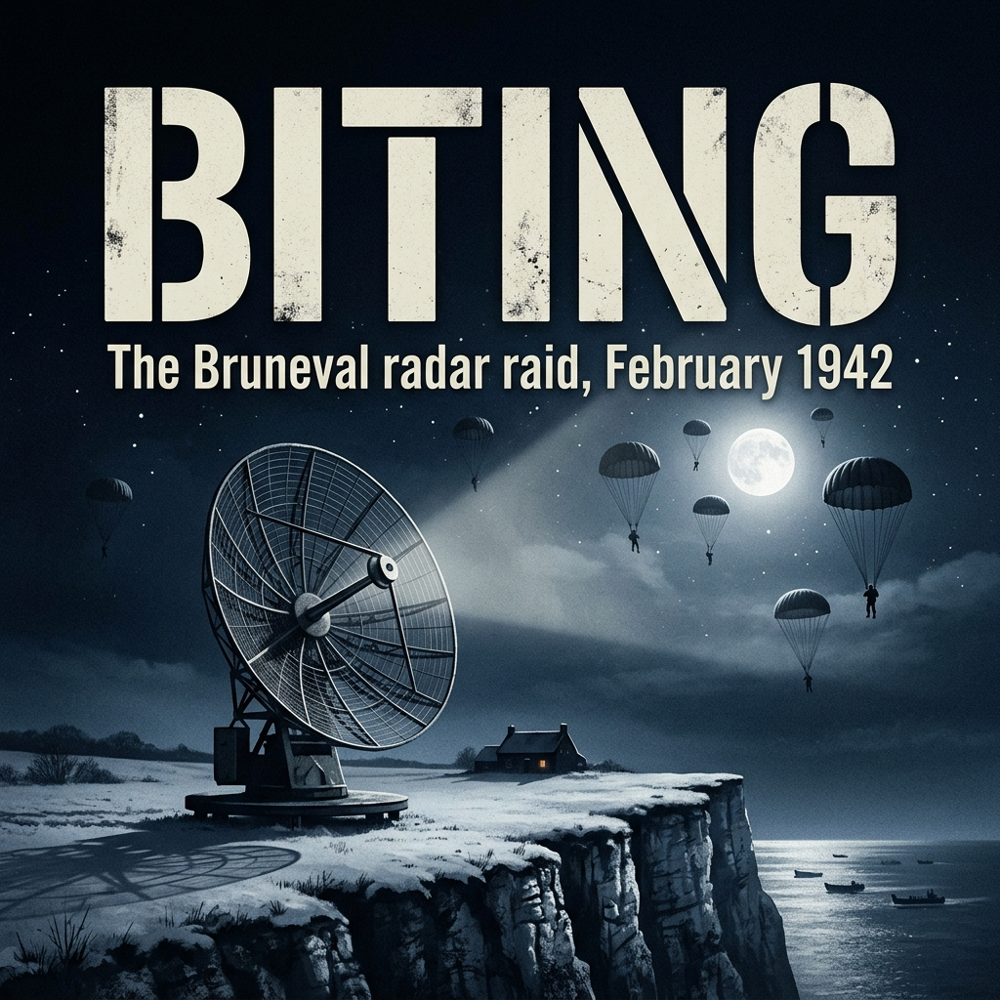

The casualty returns arrived at the Air Ministry in thin manila jackets, typed on cheap wartime paper that smelled faintly of paraffin and damp cellarage.
It was mid-November 1941. Outside the tall, grimy sash windows of Adastral House, London was smothered in a heavy, yellow-grey coal fog that tasted of sulfur and dead soot. Inside room 476, Dr. Reginald Victor Jones sat with his shirtsleeves turned up twice at the cuffs, a slide rule resting against his thumb, and his fountain pen hovering over a column of red ink.
The figures from No. 3 Group were indefensible.
Seven Wellingtons missing from a raid against the marshaling yards at Hamm. Four Stirlings brought down over the Dutch coast without a single searchlight having illuminated them. The previous week, twelve aircraft out of a force of one hundred and twenty had simply vanished into the black pocket between the Zuiderzee and the Ruhr. Ten percent. At that rate, the operational life expectancy of an RAF bomber crew was roughly six sorties—less than three weeks of survival.
Jones tapped the celluloid runner of his slide rule. He was thirty years old, broad-shouldered, with thick dark hair combed straight back and the pale, heavy-lidded eyes of a man who worked sixteen hours a day in artificial light. Across the desk, Dr. Charles Frank, his deputy in Scientific Intelligence, was spooning dried milk into two chipped enamel mugs of stewed tea.
"Peirse is still blaming the flak," Frank said quietly, not looking up. "The Command report claims the German gunners in the western air defense zone have developed an improved optical predictor."
"Peirse is deceiving himself because the alternative turns his stomach," Jones said. His voice was flat, carrying the dry, unhurried cadence of the Clarendon Laboratory at Oxford. "You cannot aim an optical predictor through ten-tenths cloud over Osnabrück in the middle of a November gale. It is mathematically impossible."
"They might have sound-locators. Giant acoustic mirrors."
"Acoustic mirrors?" Jones gave a short, humourless puff of air. "The sound of four Bristol Pegasus radial engines echoes off cloud base and scatters across five square miles. An acoustic horn couldn't give you a bearing closer than eight degrees. These aircraft are being intercepted within fifty yards. In pitch darkness. Before the rear gunner has even seen the exhaust flames of the Messerschmitt."
He spun the paper folder around so Frank could see the grease-pencil plots.
For five months, General Josef Kammhuber had been weaving a lethal web across the night skies of occupied Europe. British crews had begun to call it the Kammhuber Line, but in Whitehall, Jones knew its proper German designation: the Himmelbett—the "canopy bed."
It was an interconnected belt of air-defense sectors stretching from the north of Denmark, through Schleswig-Holstein, down the spine of the Netherlands, Belgium, and northeastern France. Each sector was a box approximately twenty miles wide and twenty miles deep. In the center of each box sat an early-warning radar—a Freya station—operating on a 2.5-meter wavelength, capable of picking up a gaggle of British bombers at a range of eighty miles.
"We know Freya," Jones murmured, tapping his pencil against the edge of a sector map. "We know her pulse rate. We know her frequency—one hundred and twenty megacycles. She gives them range and coarse bearing. But Freya is broad-beamed. She paints a blob on a cathode screen the size of a thumbprint. You cannot lay a five-inch anti-aircraft gun on a thumbprint, and you cannot place a night-fighter on a Wellington's tail with a two-and-a-half-meter wave."
"Unless they have something else," Frank said.
"They have something else."
Jones stood up, walked to the blackout curtain, and pulled it aside a fraction of an inch. Down in Kingsway, a solitary military lorry was crawling through the gloom, its headlamps hooded with slotted steel masks, casting two weak slits of amber light onto the wet asphalt.
The puzzle had been gnawing at him since August. It was not just the losses; it was the manner of the losses. British survivors who staggered back across the North Sea to bases in Lincolnshire spoke of night-fighters that appeared out of clouds with impossible precision, closing from dead astern without ever switching on an airborne searchlight. And then there were the coastal batteries. Off the French capes, ships were being bracketed by coastal guns while navigating in absolute pea-soup fog.
Something was directing the German guns and fighters. Something with a razor-thin beam. And to get a beam that sharp without building an aerial array the size of a cathedral, the Germans had to be using wavelengths far shorter than anything the British had believed they could manufacture in quantity.
There was a brisk knock at the office door.
Squadron Leader Dudley Saward, the radar liaison officer from Bomber Command, stepped in, shaking the river damp from his service-dress cap. He was a regular officer, lean-faced, with eyes that looked perpetually red-rimmed from lack of sleep.
"Morning, R.V.," Saward said, pulling off his gloves. "I've just come from the Command morning conference at High Wycombe. It's bloody murder. The C-in-C is threatening to stop the Ruhr runs until we can guarantee cloud-cover."
"Cloud won't protect you, Dudley," Jones said, turning from the window. "Not anymore."
"You've got something?"
"I have a series of intercepts from the Y-Service station at Kingsdown." Jones walked back to his desk, selected a buff-coloured folder stamped MOST SECRET, and opened it before Saward. "Listen to this. For three weeks, our wireless operators on the South Foreland have been sweeping the ultra-high-frequency bands. They were listening for Knickebein and X-Gerät beams. Instead, on the twenty-ninth of October, an operator named Smallwood picked up a strange buzz."
Saward leaned over the papers. "What frequency?"
"Five hundred and seventy megacycles."
Saward frowned, his forehead furrowing. "Five hundred and seventy? That's... what, fifty-three centimeters?"
"Fifty-three centimeters," Jones said with quiet intensity. "Centimetric radiation. Our own people at Swanage have only just managed to get stable pulses out of the cavity magnetron on ten centimeters, and we believed the Germans were two years behind us. We assumed they were stuck on meter-wave sets because they couldn't build valves capable of oscillating at high frequencies with any usable power."
"Could it be harmonic spillover?" Saward asked, grasping for a conventional explanation. "A secondary emission from a Freya transmitter?"
"No," Jones said firmly. "Smallwood is a first-rate operator. He held the signal for four minutes. It has an unmistakable pulse-repetition frequency of three thousand, seven hundred and fifty cycles per second. That is not spillover. That is a deliberate, highly engineered, short-pulse transmissions system."
Jones pulled a blank sheet of paper toward him and drew a crude sketch: a hemisphere sitting on a pedestal.
"Think of the physics, Dudley," Jones said, his pencil scratching sharply against the grain of the paper. "A dipole antenna cut to fifty-three centimeters is barely ten inches long. You can put that at the focal point of a parabolic reflector only ten feet across. A dish that size could be mounted on a light four-wheeled trailer. It would give you a conical pencil beam less than ten degrees wide. If you point that beam at an aeroplane, the echo doesn't just tell you there is an aircraft in the sky—it gives you its exact altitude, its exact speed, its exact line of flight to within fifty yards."
Saward stared at the drawing. "A fire-control radar."
"A gun-laying and fighter-directing set," Jones corrected. "Small enough to sit next to an anti-aircraft battery. Compact enough to park on a clifftop. The Freya picks up our bombers forty miles out and tells the sector controller where the swarm is. The controller hands the bomber over to this new set. The dish locks onto our kite like a searchlight beam made of radio waves, while a second dish locks onto the defending German night-fighter. The controller sits in an underground bunker with two spots of light on a glass map, and simply talks the fighter pilot onto our man's tail until he is close enough to see the roundels with his own eyes."
The room went dead silent. The coal fire in the grate settled with a faint, brittle click.
"Blimey," Saward breathed softly. "If they ring the Reich with those, our night offensive is finished. We won't be able to put an aircraft over the Ruhr without sending the crew to their funerals."
"Precisely," Jones said. "Which brings us to the operational problem."
"Can Swanage jam it?"
"How?" Jones challenged, looking up through his heavy brows. "Jam it with what? We don't know its pulse width. We don't know its intermediate frequency. We don't know if it uses a common transmit-receive switch or twin aerials. We don't know whether its frequency is fixed by a resonant cavity or if the German operator can twist a dial on his front panel and shift fifty megacycles the moment we attempt to lay down interference."
Jones stabbed the paper with his pencil point, breaking the lead.
"We are fighting in the dark against an enemy who can see us," he said. "Theoretical deductions are no longer enough. I cannot design a jamming apparatus or devise an operational countermeasure on deductions."
"What do you need?" Saward asked.
"I need to look at one," Jones said simply. "I need to know what the German engineers have built into the chassis. And to do that, we must find where they have put them."
Frank looked up from his mug. "If Kingsdown picked up the ground-wave transmission on fifty-three centimeters, it has to be line-of-sight. Centimetric waves don't follow the curvature of the earth. They travel like light."
"Yes," Jones said, a rare, faint smile touching the corners of his mouth. "It must be perched up high. Somewhere with a clear view across the water. On the French cliffs."
He reached for the black telephone on the corner of his desk and wound the handle once before lifting the heavy Bakelite receiver.
"Connect me to Benson," Jones told the switchboard operator. "No. 1 Photographic Reconnaissance Unit. I need to speak to Flight Lieutenant Hill."
The aircraft waiting on the dispersal pan at RAF Benson did not look like an instrument of war.
It was a Supermarine Spitfire PR Mk IV, serial number AA815, and every trace of martial utility had been systematically stripped from its skin. The eight .303 Browning machine guns had been removed from the wings, their blast-tubes faired over with doped linen until the leading edges were as smooth as polished bone. The heavy armor-glass windscreen and rear bulkhead armor-plating had been unbolted and hauled out to save weight. In place of guns and ammunition boxes, auxiliary fuel tanks had been crammed into the leading edges, feeding a specialized Rolls-Royce Merlin 45 that drank 100-octane aviation spirit with a deep, liquid rumble.
The entire machine was painted in a curious, flat, matte slate-blue—PRU Blue—mixed specifically to blend into the damp haze of the North European sky.
Flight Lieutenant Anthony "Tony" Hill stood beneath the starboard wing, zipping his heavy sheepskin Irvin jacket over his blue woollen service dress. At twenty-four, Hill possessed the detached, laconic squint common to the pilots of No. 1 Photographic Reconnaissance Unit. To fly with the PRU was to operate under a solitary, uncompromising doctrine: you flew alone, without escort, without armament, and without radio communication. If intercepted, you could neither shoot nor call for aid; your only defense was the throttle quadrant and four miles of empty sky.
The station intelligence officer held a canvas-backed map case against the Spitfire's trailing edge.
"Cap d'Antifer to the mouth of the Seine," the officer said, tapping a red pencil ring north of Le Havre. "The Air Ministry boys are quite specific. Dr. Jones believes there is a high-frequency transmitter perched on the chalk cliffs. He doesn't want high-altitude survey work this morning. The cloud base over the French coast is sitting at barely twelve hundred feet anyway. You'll have to go in underneath."
Hill adjusted the chinstrap of his leather flying helmet. "Under twelve hundred feet? The coastal batteries along the clifftop will have open sights."
"Jones says he needs resolution, Tony. He needs to see wires and aerials, not smudges on a ten-thousand-foot plate. If there's an installation within two miles of the cape, find it."
Hill climbed onto the wing root, stepped carefully onto the black non-slip walkway, and lowered himself into the cockpit. The interior smelled of raw glycol, stale rubber, dope, and the damp leather of the seat-pack parachute. In the lower fuselage behind the pilot's seat sat the cameras: two vertically mounted Williamson F.24s with eight-inch lenses, and a third mounted obliquely, pointing down and out through a circular aperture cut into the port side of the aircraft.
He pumped the primer three times, locked the brass plunger, and caught the eye of the ground crew chief holding the battery trolley cable.
"Contact!"
The Merlin turned over with a sharp, pneumatic whistle, coughed twin plumes of blue exhaust smoke against the fuselage flank, and caught with a crack that settled into an unbroken, deafening roar.
Hill taxied out past the sodden grass of the Benson perimeter, aligned the nose with the runway flare-path, and smoothly advanced the throttle. AA815 rose into the murky Oxfordshire drizzle within two hundred yards, its wing tanks full and heavy, climbing straight toward the grey underbelly of the clouds.
Ten miles south of the Isle of Wight, Hill dropped the nose until the Spitfire was skimming barely fifty feet above the sea.
At this height, the English Channel ceased to be a geographical concept and became a physical, predatory mass. The water was the color of slate, whipped into vicious white crests by a gale blowing off the Atlantic. Salt spray streaked the Perspex of the canopy, drying into crusts of white brine that Hill wiped clear with the sleeve of his jacket.
Flying at three hundred and twenty miles per hour fifty feet off the deck required an exhausting, microscopic concentration. There was no horizon—only the churning grey troughs of water below and the leaden ceiling of mist above. A half-degree twitch on the spade-grip would dip a wingtip into the swell and cartwheel the stripped aircraft into oblivion before the brain could register the error.
Worse was the cold. The PR Mk IV's cockpit heating had been reduced to save engine power; air whistled through the control rod boots, freezing Hill's toes inside his sheepskin boots until they throbbed with a dull, aching numbness.
He kept his eyes glued to the compass needle. Zero-nine-zero. Then zero-nine-five.
He was flying beneath the radar umbrella of the German Freya stations. Their two-and-a-half-meter beams could not dip beneath the horizon to paint a target skimming the surface waves. But the moment he lifted the nose to clear the French chalk cliffs, the German warning network from Cherbourg to Dieppe would see him instantly.
Twenty minutes out from the English coast, the wall appeared.
It rose out of the mist like a bleached ribcage: the chalk plateau of Normandy, three hundred feet of sheer, vertical white cliff topped by rolling meadows covered in dirty, patchy snow.
Hill pulled the throttle back slightly, trimmed the elevators, and hauled the spade-grip back into his stomach. The Merlin screamed as the Spitfire leaped up the face of the cliff like a falcon clearing a stone parapet.
In an instant, the grey sea vanished. Beneath the aircraft's wings lay occupied France.
The landscape was flat, segmented by dark hedgerows and stands of bare, skeletal beech trees. Just north of the village of Saint-Jouin, Hill spotted the landmark: Cap d'Antifer lighthouse, its black-and-white cylinder stabbing up through the coastal mist.
He leveled off at eight hundred feet, banked ten degrees to port, and brought the coastline parallel to his port wing.
His eyes scanned the chalk edges. There were anti-aircraft flak towers at the cape, concrete slit trenches, and barbed-wire enclosures. But Jones hadn't asked for gun emplacements; he had asked for something unusual, something isolated.
Three miles south of the lighthouse, the cliffs were scored by a steep, narrow ravine descending to a pebble beach. A single, ornate mansion with steeply pitched roofs and decorative gables stood in absolute isolation in a depression three hundred yards back from the precipice: Villa Gosset.
Hill banked harder, bringing the villa across his oblique camera line.
Then he saw it.
Sitting in an excavated earthen pit, fifty yards from the northern corner of the villa's grounds, was an object that looked entirely foreign to the French landscape. It was not a mast. It was not a lattice tower.
It was a saucer.
A perfectly circular, dark metallic dish, roughly ten feet across, tilted upward toward the grey sky like a begging bowl, resting on a cruciform base.
Hill's heart hammered against his ribs. He reached to the cockpit control box on his left knee and flipped the toggle switch for the F.24 cameras. A small amber lamp began to pulse in rhythm with the mechanical clatter of the shutters behind his back: clack-whir... clack-whir... clack-whir.
He straightened the wings to give the lenses a steady horizon, holding the aircraft level at three hundred miles per hour, eight hundred feet above the snow.
Below him, the ground erupted.
The German garrison at Villa Gosset and the clifftop flak positions had finally reacted. Bright, iridescent balls of light—green, lemon-yellow, and white—floated up from the scrub around the villa with deceptive, languid grace. Flak 38 twenty-millimeter automatic cannon fire.
Crack-crack-crack-thud.
A line of tracer stitched the air twenty feet to his starboard wingtip. Through the cockpit glass, Hill saw German soldiers in grey overcoats scrambling out of an earthen redoubt near the radar pit, dragging an ammunition belt toward a low sandbagged ring.
He held the Spitfire rock-steady for three more seconds, counting the shutter cycles.
Clack-whir. Clack-whir.
"Come on," Hill grunted through clenched teeth, his knuckles turning white on the stick. "Expose the blessed plate."
On the sixth pulse, he jammed the throttle forward through the gate, shoved the stick hard over to starboard, and plunged the Spitfire off the edge of the cliff.
The sea rushed up to meet him. Negative G lifted him out of his seat straps, his stomach floating into his throat as he leveled the wings at twenty feet above the foaming surf. Behind him, the German 20 mm gunners on the clifftop depressed their barrels to their stops, pumping shells into the water, churning the grey sea into geysers of spray and white foam fifty yards astern.
Hill didn't look back. He tucked his head down beneath the cockpit rim, watched the airspeed indicator climb past three hundred and forty miles per hour, and kept the Merlin pinned at maximum boost toward the north-northwest.
Ninety minutes later, the blue Spitfire rolled to a stop on the perimeter grass at Benson, its engine ticking and pinging as the hot manifolds cooled in the Oxfordshire drizzle.
The ground crew had the camera bay access hatches unbolted before Hill had even disconnected his oxygen tube and harness. A sergeant from the station photographic section reached into the dark cavity, lifted the heavy metal film magazines out by their canvas handles, and lowered them into a waiting padded box.
Hill dragged himself out of the cockpit, his knees shaking slightly from the prolonged strain of low-level flight. His fingers were so stiff from the cold that he couldn't unbutton his helmet strap.
The photographic sergeant looked up at him. "Get anything, sir?"
Hill peeled his leather helmet back, revealing hair plastered with sweat and oil.
"I found your saucer, Sergeant," Hill said quietly, breathing the clean, cold English air. "Right on the cliff edge. Tell the laboratory people to develop those plates immediately. The Air Ministry will be on the line before the wash has dried."
The glass-plate negatives were driven fifty miles through the dark from RAF Benson to Danesfield House, the sprawling Victorian country mansion requisitioned as RAF Medmenham.
By dawn on Saturday, 6 December 1941, the wet prints were pinned to drying wires in the basement darkrooms of the Central Interpretation Unit. They were glossy, high-contrast, nine-by-nine-inch contact prints, smelling sharply of acetic stop-bath and sodium thiosulfate.
Upstairs in the grand, wood-panelled salon overlooking the frost-rimed gardens and the Thames, Flight Lieutenant Claude Wavell was bent over an inclined oak table.
Wavell was one of the unit's master interpreters—a man whose eyes had been trained to perceive the three-dimensional geometry of Europe compressed into paper-thin emulsions. Beside him, leaning with both palms pressed flat against the mahogany veneer, stood Dr. R.V. Jones. Jones had taken the morning train down from Paddington, unable to endure the four-hour delay of waiting for prints to be dispatched by motorcycle dispatch-rider to Whitehall.
"Here," Wavell said.
He didn't point with a finger; skin oil ruined the plates. He held a brass draughtsman's pointer with a needle-sharp tip, hovering an eighth of an inch above print number 2042.
Jones reached for a Casella mirror stereoscope—a heavy, twin-prismatic optical instrument mounted on folding steel legs—and adjusted the inter-pupillary screw until the two overlapping oblique prints taken during Hill's pass coalesced in his visual cortex into a single, startlingly deep three-dimensional terrain.
The flat grey paper vanished. In its place, the cliff at Bruneval erupted upward.
The chalk face plunged into the surging sea, the breaking foam frozen by the one-five-hundredth-of-a-second shutter into motionless, sculptural crests. Three hundred feet above the water, sitting in a gentle, saucer-shaped hollow of the plateau, was Villa Gosset. Through the binocular lenses, Jones could see the ornate, high-pitched slate roofs, the timbered gables, and the long, cold shadow cast westward toward the cliffs by the low winter sun.
Fifty yards north of the villa's perimeter wall, the needle pointed.
"Good grief," Jones murmured.
Sitting in an excavated earthen depression was the object Tony Hill had reported.
It was tilted upward at an angle of roughly twenty degrees toward the English Channel. It was not a trellis or an aerial array; it was a smooth, shallow, parabolic dish, supported on a central steel pedestal that rested on a cruciform iron base. From the exact focal point of the dish, a slender rod projected outward, terminating in a small, horizontal T-shaped crossbar: the dipole feed.
"Look at the shadow," Wavell said softly. "The sun was at twenty-two degrees elevation when Hill crossed the coast. I've run the micrometric gauge across the ellipse."
"Diameter?" Jones demanded.
"Ten feet. Three meters precisely."
Jones straightened up, his eyes watering slightly from the optical strain, then bent immediately back to the lenses.
Ten feet. He did the mental arithmetic without touching his slide rule. A parabolic dish three meters across, operating at a ten-to-one ratio between diameter and wavelength, yielded a wavelength of roughly fifty to sixty centimeters.
"Fifty-three centimeters," Jones whispered. "Smallwood's buzz at Kingsdown."
"It's an electric bowl-fire," Wavell said with a faint, admiring chuckle. "Hill came down the mess last night and swore he'd seen a giant domestic radiator sitting on a lawn. That's what it looks like, doesn't it? A three-meter electric fire pointed at the sky."
"It is a precision-tracking radar," Jones said, his voice entirely devoid of amusement. "Telefunken. It has to be Telefunken. The firm has been playing with parabolic collectors since the Berlin radio exhibition in thirty-seven."
He traced the brass pointer with his eyes. Behind the dish sat a small, square, flat-topped cabin or trailer—the operator's cabin. Running from the cabin to the basement of Villa Gosset was a dark, narrow line scored into the frozen pasture.
"A trench," Jones said.
"Telephone cables, almost certainly," Wavell agreed. "Or high-voltage power lines feeding from the villa's generator. The villa is their barracks and their operations room. Notice the lack of external camouflage. There's no netting. No foliage. They haven't even painted the dish with disruptive stripes."
"Why should they?" Jones said grimly. "They didn't believe we could see it. And even if we saw it, they assumed we wouldn't understand what it was."
He pulled the print from under the stereoscope, held it up to the cold northern light filtering through the leaded bay windows, and examined the perimeter.
Now that the scientific mystery had resolved into steel and glass, the terrifying practical reality rushed in to fill the void.
The machine sat on a table-flat plateau of frozen clay, bounded by a vertical precipice to the west. Three hundred yards to the east, a dirt track led toward an inland farm complex—Le Presbytère—which Wavell had already ringed with yellow chinagraph pencil. Surrounding the farm were long, rectangular shadows indicative of German Army transport lorries and barracks huts.
"They have a garrison there," Jones said, tapping the farm.
"A company, at least," Wavell confirmed. "We've seen vehicle tracks scoring the snow between the farm and the villa every day for a week. And look here, at the foot of the cliffs."
Wavell slid another photograph under the clips.
It showed the base of the gully—the narrow cleft that sliced down through the chalk cliffs to the shingle beach of Bruneval cove. Guarding the mouth of the gap, surrounded by rings of concertina wire, was a second stone building: Villa Stella Maris. Beside it, a concrete pillbox was clearly visible, its embrasure oriented to sweep the pebbles of the beach with interlocking machine-gun fire.
Jones set the magnifying glass down on the mahogany table with a heavy, deliberate click.
"It is an absolute fortress," Jones said. "A natural fortress."
"So, what do we call it?" Wavell asked. "For the CIU report."
Jones looked back down at the circular bowl. In his mind, he could hear the steady, menacing pulse of the intercept: three thousand, seven hundred and fifty pulses a second, cutting through the night, finding British boys over the Ruhr, locking them in a cone of invisible radiation until the cannon shells of an Me 110 blew their fuel tanks to pieces.
"We have to give it a name," Wavell repeated. "The Air Ministry likes names."
"We will call it Henry," Jones said quietly. "After the king who fought at Agincourt. He understood Normandy well enough."
He turned away from the light table and picked up his leather briefcase. The photograph had given him what he needed to silence the skeptics at Bomber Command. But as he looked at the print one last time, the cold weight of scientific reality settled heavily upon him.
A photograph was only silver halide on paper.
It showed the dish, the pedestal, and the cables. It did not show what was sealed inside the cast-aluminum boxes bolted beneath the parabolic reflector. It did not show whether the oscillator was a triode or an early magnetron. It did not show the intermediate frequency of the receiver strip. It did not reveal whether the radar could be blinded by strips of foil cut to its wavelength, or if the German circuits had built-in anti-jamming limiters that would render such countermeasures useless.
To build an electronic shield for Bomber Command, he didn't need to look at Henry through a magnifying glass from Medmenham.
He needed its internal circuits in a laboratory at Swanage.
"Thank you, Claude," Jones said, fastening the brass buckles of his briefcase. "Keep these plates locked in your personal safe. Don't let them go into the general files."
"Where are you going, R.V.?"
"Broadway Buildings," Jones said, stepping toward the heavy oak door. "I need to see Section VII. It's time to see what our friends across the water have to say about the sentries at Villa Gosset."
The telegram from London did not travel through the ether as spoken words. It arrived in an apartment on the Rue de Madrid in Paris as a sequence of five-figure numeral groups, tapped out at twenty words a minute by a clandestine operator whose fingers were stiff with the damp chill of an unheated attic.
Gilbert Renault—known to the Free French intelligence bureau in Carlton Gardens as "Rémy"—sat at a small kitchen table beneath a 25-watt bulb. Beside him, his wife was quietly rocking their infant child in a wicker cradle, the rhythm of the wooden runners the only sound competing with the scratch of his steel pen.
Rémy was thirty-seven years old, a former film financier with the quiet, deliberate movements of a chess player. He worked with a pocket code-silk: a strip of sheer haberdasher's silk printed with transposition matrices, easily rolled into the hollow ferrule of a shoelace or swallowed if the Sicherheitsdienst hammered on the door.
He subtracted the key, converted the numbers to letters, and stared at the decrypted lines in the faint yellow light:
Rémy leaned back in the creaking chair. The wick of his cigarette burned down toward his tobacco-stained fingertips.
Bruneval. He knew the stretch of coast north of Le Havre. The chalk cliffs of the Pays de Caux did not lend themselves to casual observation. Since the summer of 1940, the Germans had designated the entire littoral as the Zone Côtière Interdite—a forbidden frontier zone fifty kilometers deep. No French civilian could enter without a red-bordered Ausweis issued by the Kommandantur. To be caught within five kilometers of the cliff without a stamped municipal work permit meant immediate arrest, interrogation in the cellars of the Rue du Bailliage in Rouen, and either a deportation train to Compiègne or an execution trench behind the shooting range at Le Havre.
Worse, London was not asking for a railway timetable or the counting of freight cars passing through a junction. They were asking for an infantry reconnaissance of a German front-line position.
Rémy reached for his overcoat. He kissed his wife on the crown of her head, stepped out onto the pitch-black staircase, and let the front door latch without a click.
The Café des Deux Mondes, near the Gare Saint-Lazare, smelled of boiled chicory, damp wool, and the sour sawdust scattered across the tiled floor to soak up the mud from German boots.
It was half past eight in the morning. Two Feldgendarmen—military police with stamped metal crescents hanging from chains around their collars, the Kettenhunde—stood by the brass cash register, drinking dark beer and surveying the room with indifferent, heavy-lidded hostility.
In a corner booth beneath a cracked mirror, Roger Dumont was buttering a hard biscuit made from ration flour.
Dumont, whose operational cover name within the Confrérie Notre-Dame was "Pol," was a veteran of the 1940 campaign. A former reserve officer in the French Air Force, he was thirty-seven years old, square-jawed, with an austere, aristocratic calm that made him remarkably effective at passing through checkpoints. While other men betrayed their terror through dilated pupils or rigid shoulders, Dumont had the rare gift of looking completely bored by German authority.
Rémy hung his damp hat on a coat hook and slipped into the opposite side of the booth. He did not order chicory; to buy food was to draw the eye of the proprietor, who had to account for every ration coupon.
"The weather in the north is cold," Rémy said in a low, conversational tone.
Dumont did not look up from his plate. "The winter has settled on the cliffs. It will be freezing until March."
"London has sent a requirement," Rémy said. "Not the usual coastal traffic. Something specific. Cap d'Antifer. A house named Villa Gosset."
Dumont paused, his knife resting on the wooden board. He knew the chalk plateaus above the sea; he had family connections throughout the Seine-Inférieure.
"That is a dead sector," Dumont said, his voice barely carrying over the scrape of the coffee spoons. "There is nothing there except sheep, a few cider orchards, and the lighthouse. The Kriegsmarine and the Luftwaffe have closed the roads."
"They have not closed them entirely," Rémy replied. "A circular apparatus has been placed on the grass beside the villa. A metallic dish, three meters wide. London must know who guards it, how many weapons they have, and where the telephone wires lead."
Dumont raised his grey eyes, meeting Rémy's gaze in the dark glass of the mirror behind them. He did not ask why London wanted it. In the trade of intelligence, to know the purpose of a requirement was merely to carry an additional burden into an interrogation room.
"To approach the cliff, one must have a reason that satisfies a German NCO with a submachine gun," Dumont said. "If I take the train to Le Havre and walk down the lane toward Bruneval with a briefcase, I will be in a cell in Mont-Saint-Aignan before midday."
"I know," Rémy said. "We cannot send an agent from Paris. We need someone who already has his boots in the mud. Someone whose presence on the lane causes no one to reach for a rifle."
Dumont was silent for several seconds. He pulled a pack of cheap Troupe cigarettes from his pocket, offered one to Rémy, and struck a match. Through the drifting blue smoke, he turned a name over in his mind.
"Chauveau," Dumont said.
"Who is he?"
"Charles Chauveau. He runs a garage and mechanical workshop in Saint-Jouin, barely two kilometers inland from the Bruneval ravine. He is an automobile mechanic—a good one. More importantly, the local Kommandantur relies on him. When the German staff cars break an axle on the frozen ruts between Le Havre and Cap d'Antifer, it is Chauveau who hauls them out with his breakdown truck. He has an Ausweis that allows him to drive on the military roads at any hour of the day or night."
"Is he ours?" Rémy asked.
"He is a Frenchman," Dumont said simply. "His father fought at Verdun. He sees the feldgrau uniforms in his village every morning, and every morning he grits his teeth until his jaw aches. I have used him twice to carry letters to Rouen. He does not talk. He does not boast in the bistro."
Rémy reached into his pocket and slid a small, heavy object across the table under the cover of his palm. It was a brass pocket compass, its glass face unscratched, and a small roll of clean tracing paper the width of a cigarette paper.
"Tell him London requires distances," Rémy said. "Not impressions. Not 'about a hundred meters.' We need the distance between the radar pit and the house in paces. We need the location of every machine-gun slit in the chalk. We need to know if the wire around the dish is trip-wire or barbed cattle-fence, and whether there are wooden stakes indicating minefields."
Dumont picked up the roll of paper and the compass, letting them vanish into the deep pocket of his wool overcoat.
"And the ravine?" Dumont asked. "The path to the sea?"
"Every meter of it," Rémy said. "From the clifftop to the shingle. London wants to know what lies at the bottom."
Dumont took a final sip of his cold chicory, stood up, and buttoned his collar against the wind that was already blowing through the swing doors from the Place du Havre.
"I will take the midday train to Rouen," Dumont said. "Then the local coach to Saint-Jouin. If Chauveau is willing, you will have your sketch before the week is out."
He turned and walked toward the door. As he passed the two Feldgendarmen, Dumont didn't look down or hasten his stride. He stepped around the barrel of an MP 40 slung across an NCO's chest with the casual, slightly irritated indifference of a clerk late for an appointment, and vanished into the Parisian fog.
Rémy watched him go, knowing that if Dumont was caught, the chain of arrest would lead back to the flat on the Rue de Madrid within forty-eight hours. He crushed out his cigarette, left two copper coins on the tin counter, and walked out into the cold drizzle to begin changing his safehouses.
The Simca 5 rattled northward from Le Havre along the snowbound ruts of Route Départementale 111, its rear tires wrapped in heavy iron chains that slapped the underside of the wheel arches with every turn of the axle.
A fresh snowfall during the night had buried the Pays de Caux in six inches of white powder. In the passenger seat, Roger Dumont kept his gloved hands wedged beneath his thighs to stave off the bitter draft whistling through the Simca's canvas window seals. He had spent the night in a back room of a cold-water boarding house near the Le Havre docks, unable to sleep, shivering in a wooden armchair with his overcoat buttoned to his chin.
Beside him at the steering wheel was Charles Chauveau.
Chauveau was forty-five years old, a former Great War pursuit pilot and navigation instructor who now owned an automobile dealership and repair agency. Known within the Confrérie Notre-Dame by the codename Charlemagne, he possessed what few men in Normandy had: an authentic, red-stamped Ausweis issued by the German port commander, permitting his vehicle to travel between Le Havre and the military zone along the cliffs.
"Two kilometers to the ravine," Chauveau said without turning his head. He shifted the Simca down into second gear as the road climbed a frozen gradient between lines of bare apple trees. "If the Feldgendarmerie stop us before the descent, you are an associate from Paris inspecting requisitioned garage accounts. Let me do the talking. I know the tone these Saxon corporals like to hear."
"Understood," Dumont said.
They bypassed the inland hamlet of Theuville. Across the flat expanse of white fields, three hundred yards to the east, stood the rectangular stone barns of Le Presbytère. Through the falling flakes, Dumont noted the dark shapes of two three-ton Opel Blitz lorries parked in the farmyard and a sentry standing by the gatepost.
Chauveau turned the car west, nosing it down the steep, twisting road that cut through the chalk cliff toward the sea: the valleuse of Bruneval.
Halfway down the ravine, nestled against the wooded hillside five hundred meters from the shingle, stood a two-storey brick and timber building with high slate gables: the Hôtel du Beauminet.
Chauveau pulled the Simca into the snowy courtyard beside an unhitched farm cart and cut the engine. The only sound was the distant, dull boom of the English Channel surf breaking against the shingle below.
"The proprietor is Paul Vennier," Chauveau murmured, keeping his voice beneath the wind. "An old friend. One of ours to the marrow. But keep your mouth shut until I bring him to the back."
The front door opened into a low-ceilinged dining room smelling of cold cabbage, wet slate, and cider dregs. Three long wooden tables were set with plain tin mugs and stacks of grey German military breadboards. On a coat rack by the door hung four Wehrmacht wool greatcoats, dark with meltwater, and two steel helmets with the single decal of the Heer.
A man in a thick wool cardigan stepped out from the scullery, carrying an armful of split birch logs. He stopped when he saw Chauveau.
"Charles," Paul Vennier said, his voice dropping immediately into a whisper. He dropped the wood into the iron box by the hearth and stepped into the small private parlor behind the bar. "What in the world are you doing down in the valley today? The weather is filthy."
Chauveau closed the door behind Dumont. "Paul, this is my friend from Paris. He is an officer."
Vennier looked at Dumont's worn overcoat, his hollow cheeks, and the pale, steady gaze of a man living under a false identity. He nodded once, wiped his palms on his apron, and pulled three small glasses from a cupboard, pouring three fingers of clear, raw Calvados.
"The Germans," Dumont said, cutting straight to the marrow. "London needs to know who sleeps in this valley."
Vennier pushed a glass toward him. "You are standing in their dormitory. Thirty men sleep upstairs in my guest rooms. They are older reservists, an engineering and construction detachment working on the concrete emplacements for the coastal battery up at Cap d'Antifer. They leave at dawn in lorries and come back at dusk to eat my potatoes and drink my cider."
"Who commands them?"
"An energetic Feldwebel," Vennier said grimly. "Sharp-eyed. He keeps them disciplined. But they are labourers, not frontline shock troops."
Dumont pulled the folded pencil sketch from his inner pocket. "And up on the cliff? Villa Gosset?"
Vennier shook his head. "That is entirely separate. That belongs to the Luftwaffe. The airmen don't come down here; they keep to themselves. Their relief squads and technicians are billeted half a mile back at Le Presbytère in Theuville. About a hundred men altogether. They man fifteen different defensive rifle pits and machine-gun posts scattered along the clifftops from here to the lighthouse."
"And the machine gun at the water?" Chauveau asked.
"At Villa Stella Maris," Vennier said, pointing down the gully toward the beach. "Right at the mouth of the gap. There is a permanent guard post inside the house and a concrete bunker built into the terrace. Two machine guns sweeping the pebbles. If you try to walk onto the shingle, you are walking into a slaughterhouse."
Dumont set his glass down. "We need to see the beach."
"You can't," Vennier hissed. "The path is blocked with barbed wire. There are red signs posted every twenty paces: Achtung Minen! The entire slope above the shingle is mined."
"We must look at it anyway, Paul," Chauveau said quietly. "If we don't, others will, and they won't have your tea and Calvados waiting for them."
They left the Simca parked in the inn's courtyard and walked down the snow-covered lane on foot.
The Bruneval gully narrowed rapidly, the chalk walls rising sheer on either side, cloaked in tangled, leafless brambles. Ahead, the sound of the sea grew into a continuous roar. At the bottom of the gorge stood Villa Stella Maris, its stone walls buttressed against the Atlantic storms, flanked by deep rolls of concertina barbed wire that stretched across the throat of the gap from cliff to cliff.
Beyond the wire lay the shingle: steep terraces of black and grey flint pebbles shelving abruptly into the foaming surf.
A single German infantry sentry stood in the lee of the villa's terrace wall, wearing a heavy groundsheet over his shoulders, his hands tucked deep into his pockets, his Mauser 98k slung muzzle-down behind his back to keep snow out of the breech.
"Follow my lead," Chauveau whispered to Dumont. "Look stupid. Look cold."
Chauveau stepped forward into the open, his breath steaming. He called out in cheerful, clumsy German: "Guten Tag, Posten!"
The sentry stiffened, pulling his hands from his coat and taking a half-step forward, his eyes flicking over Chauveau's work trousers and Dumont's dark town coat. He did not unshoulder his rifle, but his voice was sharp.
"Halt! Hier Durchgang verboten! Zurück!"
Chauveau stopped five yards from the first coil of wire. He raised both hands in a placating gesture, smiling with the unhurried innocence of a local tradesman.
"Pardon, comrade," Chauveau said in slow, broken German, gesturing toward Dumont. "My friend here has just arrived from Paris on family business. He has never seen the sea in winter. We only wanted to step onto the pebbles for two minutes to look at the tide before our petrol voucher runs out."
The sentry looked at Dumont, who was shivering convincingly, his shoulders hunched, staring past the wire at the grey horizon with the dull, bovine curiosity of a bored clerk.
The soldier gave a short, weary grunt. He was young, barely twenty, his nose red and raw from the salt wind.
"Nein," the sentry said, gesturing with a gloved thumb toward the red wooden signs nailed to the cliff face: Achtung Minen! Lebensgefahr! "Verboten. Everything is closed. Too dangerous."
"Even the path along the cliff base?" Chauveau asked innocently, taking a half-step closer to the wire. "We won't touch the water."
The German laughed—a short, contemptuous snort of boredom. He glanced over his shoulder toward Villa Stella Maris, then leaned over the top strand of wire.
"The signs are for French idiots," the sentry said in low German, speaking slowly as if to a child. "There are no mines there yet. The engineers haven't delivered the boxes. But if the Feldwebel looks out the window and sees you on the shingle, he will shoot you himself. Turn around. Go back up to the inn."
"Thank you, comrade," Chauveau said with an exaggerated nod. "Understood. No trouble."
While Chauveau spoke, Dumont's eyes never stopped moving.
He didn't look at the sentry. He looked at the terrain.
He measured the wire with his eyes: three apron fences, roughly six to ten meters thick in depth, running across the throat of the gully. He noted the concrete pillbox built into the lower corner of Stella Maris—its firing slit cut at knee-height, oriented directly along the high-water mark to sweep the open shingle with flanking fire. And he spotted what London needed most: on the northern edge of the wire, where the fence met the vertical chalk cliff, the coils were loose, tied off to a wooden picket with a length of civilian telephone cable. A man with a pair of ten-inch wire-cutters could breach it in twenty seconds.
Dumont pulled his collar tight, turned on his heel, and walked back up the gully beside Chauveau, their boots crunching into the fresh snow.
Neither man spoke until they were past the Hôtel du Beauminet and back inside the cab of the Simca.
Chauveau hit the starter. The small four-cylinder engine coughed twice and caught. He turned the car around in the inn's courtyard, heading back toward the clifftop lane.
"Did you get it?" Chauveau asked, his knuckles white against the steering wheel.
"The minefield is a dummy," Dumont said, his voice flat and perfectly steady. "The wire at the beach can be cut at the northern foot. Thirty laborers at the inn. One hundred infantry at Le Presbytère. Two machine guns at Stella Maris."
He pulled out the slip of tracing paper and a pencil stub. As the Simca bumped back toward Le Havre, Dumont began writing down the text of what would become Report No. 82.
"Now we need a radio," Dumont said. "Take me to Bob."
The express train from Rouen crawled into the Gare Saint-Lazare three hours behind schedule, delayed by frozen switches and an inspection by the Feldgendarmerie at Mantes.
Roger Dumont carried his notes not on paper, but in the trained memory of an aviator. The sheet of greaseproof tracing paper bearing the sketch of the gully had been folded down to the size of a postage stamp, wrapped in lead foil stripped from a cigarette pack, and wedged into the hollow lower heel of his right boot.
He did not take the Métro. Underground stations were bottlenecks, easily cordoned off by French auxiliary police checking identity cards against blacklists. Instead, Dumont walked through the sleet down the Boulevard des Batignolles, his boots soaked, his collar turned up against the wind, checking shop windows for the reflection of any man matching his stride.
By six in the evening, he reached a nondescript fourth-floor apartment off the Rue de Rome.
The door was opened by Gilbert Renault. In the small salon, the heavy velvet curtains were pinned to the windowframes with dressmaker's pins to prevent a single sliver of light escaping into the street. The room was freezing; coal was impossible to find on the black market, and the air held the sharp, metallic tang of acid from a heavy twelve-volt car battery sitting on a newspaper in the corner.
Beside the battery sat Robert Delattre.
Delattre, known within the Confrérie Notre-Dame by the operational cover name "Bob," was an SOE-trained clandestine wireless operator. He was twenty-two years old, thin-faced, with the pale, translucent skin of a man who lived in closed rooms. Before him on a wooden card table lay an SIS Type A Mark I transmitter-receiver—a marvel of miniature British engineering packed into a dark green metal case no larger than a biscuit tin. A copper aerial wire was tacked along the picture rail with brass drawing pins, running once around the perimeter of the ceiling.
"You took your time," Rémy said quietly, locking the door.
Dumont sat down on a straight-backed wooden chair and unlaced his right boot. With a penknife, he prised loose the heel-lift and extracted the foil-wrapped parcel. He unfolded the grease-stained paper onto the table, smoothing the creases with his thumb.
"The German minefield above the beach is paper," Dumont said, his voice clipped. "A dummy to scare civilians. The sentry confirmed the engineers haven't delivered the charges. The wire can be breached at the northern foot of the chalk. But the gully is a trap if you enter it from the front."
Rémy pulled a pad of carbon paper toward him. "Give it to me in order. Exactly as you saw it."
For two hours, while the winter gale rattled the Parisian chimney pots outside, the two men condensed the reconnaissance into the rigid, mathematical economy required for radio transmission. Every syllable cost seconds on the air, and seconds on the air were measured against the speed of German direction-finding vans.
Delattre sat in silence, checking his wristwatch. His allotted schedule—the "sked"—with the Secret Intelligence Service receiving station at Whaddon Hall in Buckinghamshire was fixed for 21:00 hours precisely.
If he came up on the frequency even two minutes late, the British operator would have moved his tuning dial to the next agent's callsign, and Normandy would remain dark for another twenty-four hours.
At 20:50, Delattre connected the terminal leads to the twelve-volt battery. A soft, high-pitched whine rose from the rotary transformer. The miniature valves—three tiny glass bulbs nestled in aluminum clips—glowed a faint, dull orange in the darkened room.
"Are you ready, Bob?" Rémy asked.
Delattre strapped a flat, nickel-plated Morse key to his right thigh with a leather belt. "Ready. Give me the enciphered text."
Rémy handed him two slips of paper. They were coded under Renault's operational callsign: Raymond, Code A.
The text was stark:
And the second message, Number 82, detailing the radar station on the cliff:
Delattre slipped the Bakelite headphone over his left ear. He tuned the dial, his sensitive fingertips turning the vernier scale fraction by fraction through the whistle of static and distant atmospheric crashes.
Through the headphone came the faint, rhythmic chirp of the home station: a three-letter recognition group transmitted from an aerial array across the Channel.
Delattre's knuckles turned white. His index and middle fingers settled over the knob of the Morse key strapped to his leg.
Di-dah-di-dit... dah-dah-di-dah...
The key began to chitter like an angry insect.
In the small apartment, the sound was terrifyingly loud. To Dumont and Rémy, every stroke of the brass contact seemed to shout through the lath-and-plaster walls. Down in the street, they knew, the German Abwehr had two mobile direction-finding vans—Funkpeilwagen—stationed permanently at the Porte de Clichy. The moment Delattre depressed the key, a cathode-ray goniometer in the back of an unmarked Mercedes van would register a green strike, pointing a compass line straight across the 8th Arrondissement.
A clandestine operator in Paris had an operational life expectancy of roughly six months before the vans triangulated his rooftop wire.
Delattre did not pause. His fingers danced with absolute, robotic regularity, sending forty groups of five-figure code a minute. Sweat was dripping down the bridge of his nose, stinging his eyes, but he dared not lift a hand to wipe it away.
Dah-di-dah... di-di-dit... dah...
One minute. Two minutes. Three minutes.
The valves gave off the smell of hot shellac and baking dust.
At four minutes and twelve seconds, Delattre tapped out the closing prosign: VA—end of transmission. He immediately reached to the front panel and ripped the aerial lead from its socket, killing the circuit.
He sat motionless, the headphone pressed to his ear, his chest heaving as if he had run five miles through the mud.
Through the static came three quick, faint dots from England: R—received.
Delattre let out a long, trembling breath that sounded like a sob. He unbuckled the key from his thigh, his hand cramping into a claw.
"It is in England," Delattre whispered.
Three hours later, the decoded transcript of Messages 81 and 82 was teleprinted from the SIS signals center at Whaddon Hall to the basement of the Cabinet War Rooms in London.
Dr. R.V. Jones was asleep on an iron camp bed in the annex of Adastral House when the yellow telephone on the wall began to ring. He swung his feet to the linoleum floor, snatched the receiver, and listened to the voice of Commander Kenneth Cohen of SIS Section VII.
"We have the ground layout from Pol," Cohen said crisply. "The beach isn't mined. The wire can be cut. But the garrison at the farm is a hundred strong, and there are two machine guns covering the shingle."
Jones rubbed the grit from his eyes. The last piece of the puzzle had dropped into place.
They knew the wavelength: fifty-three centimeters.
They knew the location: Villa Gosset.
And now they knew the defenses: a company of infantry at their backs, two machine guns in front, and a dummy minefield on the pebbles.
"Get the file over to Combined Operations," Jones said, standing up and reaching for his wool tie. "Tell Lord Louis we are ready for the soldiers."
The planning room on the first floor of 1A Richmond Terrace smelled of damp Mackintoshes, Turkish cigarette smoke, and fresh printer's ink.
Lord Louis Mountbatten stood at the head of a long trestle table strewn with low-altitude photographic enlargements. At forty-one, the newly appointed Chief of Combined Operations possessed a restless, electric vanity backed by sharp administrative ruthlessness. He wore the blue service dress of a Royal Navy Commodore, the cuffs bearing the broad gold band of his rank, his dark hair slicked flat.
Surrounding the table were the service chiefs' representatives: soldiers, sailors, and airmen whose natural bureaucratic instinct was to guard their own assets and strangle unorthodox ideas at birth.
Dr. R.V. Jones sat at the far end of the table, his overcoat still damp from the morning sleet, with the SIS transcript of Messages 81 and 82 laid flat between his elbows.
"The Commandos cannot do it," Mountbatten said without preamble. His voice was clipped, aristocratic, and brooked no interruption. "Let us dispense with that delusion immediately. We asked the raiding staff to look at an assault from the sea. Look at the photographs, gentlemen."
Mountbatten laid the flat of his palm on the Medmenham print of the Bruneval beach.
"The shingle cove is twenty-two meters wide," Mountbatten said. "It is flanked by three-hundred-foot vertical chalk cliffs. The mouth of the gully is swept by two machine guns in the seaside villa—Stella Maris—and an interlocking concrete pillbox. If we send Landing Craft Infantry onto those pebbles in the dark, the German gunners will catch the men as they drop the ramps. They will be slaughtered in the surf before they reach the concertina wire. And even if they survive the beach, they would have to fight three hundred feet up an icy ravine against an enemy holding the high ground. It is an impossible operation from the water."
A staff officer from the Air Ministry cleared his throat. "Bomber Command has offered a squadron of Blenheims. Or a dozen Stirlings. A concentrated low-level strike with five-hundred-pound general-purpose bombs. We could obliterate the clifftop in ten seconds."
Jones looked up, his brow furrowing with cold irritation.
"A bomb tells us nothing," Jones said firmly. "If you drop five-hundred-pounders on Villa Gosset, you will blow the Würzburg into microscopic fragments. You will scatter the dipole across the English Channel and vaporise the receiver. And that assumes you can hit a ten-foot dish in the dark—which, given Bomber Command's recent accuracy figures, is a statistical absurdity. I don't want a crater. I need the apparatus. I need the valves, the wiring, the local oscillator, and the cathode ray tube. Intact. Unmelted. Carried back to England in a canvas bag."
The room fell quiet. The traditional officers shifted in their chairs.
To the regular military mind, raiding an occupied coastline to destroy a target was a recognized hazard of war. Raiding an occupied coastline to play the part of scientific burglars—to dismantle an electronic gadget with screwdrivers under the nose of a German infantry company—sounded like dangerous lunacy.
From the shadows near the corner window, a tall, immaculate figure stepped forward.
Major-General Frederick Arthur Montague Browning—known throughout the British Army as "Boy"—looked as though he had stepped directly off the parade ground at Wellington Barracks. He was forty-five years old, the commander of the newly formed Airborne Forces, dressed in the scarlet-trimmed service dress of the Grenadier Guards, complete with an immaculate Sam Browne belt polished to the color of dark horse-chestnuts. Under his arm he carried a silver-topped swagger stick.
Browning tapped the glass of the window once with his cane.
"Drop behind them," Browning said in his soft, precise voice.
Mountbatten looked up. "Go on, Boy."
"The plateau," Browning said, walking to the table and pointing the silver tip of his cane at the open fields east of Villa Gosset. "The drop zone is obvious. Flat pasture, barely five hundred yards from the radar dish. We fly across the Channel beneath their radar, climb to six hundred feet, and drop an independent airborne company directly onto their rear."
He traced the route of the chalk cliffs with the swagger stick.
"The paratroopers hit the ground in three divisions," Browning explained, his tone conversational, as if describing a grouse shoot in Perthshire. "One division seals off the inland garrison at the farm—Le Presbytère. The second division storms Villa Gosset, seizes the dish, and guards the technicians while they pull the machine to bits. The third division descends the gully from the landward side, attacks Villa Stella Maris from behind—where its concrete defenses are completely open—and blows the beach defenses apart."
Mountbatten's eyes narrowed. "And the extraction?"
"The Navy," Browning said smoothly, glancing at the naval liaison officer. "The paratroopers do not attempt to hold the cliff. Once the components are stripped and the beach is cleared, the entire force withdraws down the gully to the shingle. The Royal Navy brings landing craft into the cove, takes the men and the machinery off the beach, and carries them back to Portsmouth before breakfast."
A murmur of protest rose from the Army staff officers.
"It is too complex, General," an infantry brigadier said, leaning forward. "You are coordinating four independent services—the RAF transports, the paratroopers, scientific intelligence, and the Royal Navy. If one link in the chain snaps, the entire force is trapped against a three-hundred-foot wall of chalk."
"The airborne forces are an unproven arm, sir," another officer added. "Operation Colossus was an unmitigated disaster."
A hard, brittle edge entered Browning's pale eyes.
Colossus had been Britain's first airborne raid—a drop of thirty-eight men of the 11th SAS Battalion in February 1941 to blow up the Tragino aqueduct in southern Italy. The aqueduct had been broken, but every single man, including their commanding officer, had been captured. In the corridors of the War Office, traditionalists were already whispering that the Parachute Regiment was an expensive, flamboyant waste of manpower that ought to be disbanded and its men returned to standard infantry battalions.
"Colossus was a strategic raid deep inside enemy territory with no extraction plan," Browning said, his voice dropping an octave, carrying the cold authority of the Guards. "The men were told to march fifty miles to the coast and hope a submarine was waiting. This is entirely different. This is a raid across the narrow seas with a secured beachhead and overwhelming naval support."
Browning turned to Mountbatten.
"My men need this, Dickie," Browning said quietly. "The airborne concept needs this. If we do not use them now, the War Office will dismantle the brigade before we ever see France. Give us the target."
Mountbatten looked down at Tony Hill's photographs. He looked at the white saucer of Henry, the deep shadow of Villa Gosset, and the narrow, lethal ribbon of the Bruneval gully.
He stood up straight.
"The operation is approved," Mountbatten said. "Scientific priority absolute. Combined Operations will coordinate. The target is Henry."
He turned to Browning. "Who will you send, Boy?"
Browning did not hesitate. He had already reviewed the state of the battalions training on Salisbury Plain. He knew the officers who were mere administrators and the officers who possessed the cold, aggressive marrow required for an independent night action behind enemy lines.
" 'C' Company," Browning said. "Second Parachute Battalion. Commanded by Major John Frost. He's a former Cameronian. Level-headed, stubborn as a mule, and his men will follow him into a furnace."
Mountbatten nodded once, closing the leather folder.
"Very well," the Chief of Combined Operations said. "Tell Major Frost to get his company ready. The operation is codenamed Biting."
Tilshead Camp on Salisbury Plain was a wasteland of corrugated iron Nissen huts, stagnant chalk slush, and freezing fog that rolled off the Wiltshire downs like a wet blanket.
In late January 1942, the camp smelled permanently of coal coke, damp wool serge, and the sharp, vinegar tang of rifle bore cleaner. In hut C-4, the cast-iron stove glowed dull red in the center of the concrete floor, surrounded by three dozen pairs of heavy ammunition boots drying on wooden racks, their leather stiffening and whitening with salt tide-marks as the moisture baked out.
Outside on the chalk ridges, the crack of small-arms fire was constant.
Major John Dutton Frost stood on a snow-dusted knoll, his collar turned up against a wind that had blown straight off the North Sea. He was twenty-nine years old, lean, long-legged, with a quiet, observant face and the dry, unhurried posture of a regular soldier. Commissioned into the Cameronians (Scottish Rifles) eight years earlier, he had served in Palestine and Iraq before volunteering for the newly formed airborne forces. He did not shout; he had a deep, resonant voice that carried effortlessly across a firing point without ever breaking into a bark.
Around his neck, tucked into the top of his woollen service-dress tunic, hung a polished copper hunting horn.
Twenty yards down the slope, Company Sergeant Major Strachan was putting No. 2 Platoon through a rapid section attack against a line of chalk-bag breastworks.
"Get down! Now!" Strachan roared, his Glasgow accent cutting through the whistling wind. "McIntyre, you're not strolling down Sauchiehall Street! Crawl, man! Drive with your knees!"
The paratroopers of 'C' Company were an unusual breed. Every man was a volunteer, drawn from across the British Army. A large contingent were Scots—Cameronians, Black Watch, King's Own Scottish Borderers, Seaforth Highlanders—men who had traded the steady, tedious routine of garrison infantry for two shillings a day jump pay and the promise of immediate action. They were rough, aggressive, and fiercely protective of their status. In the pubs of Salisbury, they had already established a reputation for brawling with regular line battalions who mocked their jumping gear.
A sudden rattle of automatic fire broke out from a ditch.
Pop-pop-pop-clack.
A private cursed violently, dropped onto his hip in the slush, and began hammering the side of his weapon with the heel of his palm.
Frost walked down the slope, his boots crunching in the frozen ruts. "Stoppage, Private?"
"Stovepipe, sir," the soldier gasped, breath pluming white in the freezing air. "The blimmin' extractor's chewed the case rim again."
The weapon was a Sten Mark II—a piece of crude, mass-produced ordnance that had only just begun reaching frontline units. Made of stamped sheet metal, a length of steel bicycle tubing, and a simple blowback bolt, it was assembled at the Royal Small Arms Factory at Enfield for less than two pounds ten shillings. It had no wooden furniture, no fine finish, and an alarming habit of jamming if a single grain of Wiltshire chalk dust entered the open cocking slot.
"Clear it," Frost said quietly. "Strip the magazine. Don't load more than twenty-eight rounds in a thirty-two-round box. The springs are too weak to feed the final four."
He watched the soldier clear the crushed brass cartridge. The Sten was cheap, lethal at fifteen yards, and prone to accidental discharge if dropped butt-first onto a hard floor, but it was light enough to be strapped across a man's chest during a parachute drop. That made it indispensable.
A dark staff car—a Humber Super Snipe with red command pennants on the front wings—crawled along the perimeter track, its chains clattering against the frozen gravel. It stopped by the edge of the firing range.
The passenger door opened, and Major-General "Boy" Browning stepped out.
Even in the squalor of Salisbury Plain, Browning looked immaculate. His service-dress tunic was tailored to perfection, his leather gleaming, his silver-mounted swagger stick tucked beneath his left arm. He walked onto the firing range, his dark eyes sweeping over the chalk-splattered paratroopers who stood to attention in the snow, their woollen trousers torn at the knees, their hands black with carbon and grease.
Frost snapped a salute. "Good morning, General."
Browning returned the salute with a flick of his cane against the brim of his cap. He looked Frost up and down, then turned his gaze to CSM Strachan and the shivering platoon behind him.
"Good grief, John," Browning said in his soft, aristocratic drawl. "That is the filthiest company of soldiers I have ever seen in my life."
Frost smiled faintly. "They're meant to fight in the mud, sir, not dance at the Savoy."
"Quite," Browning said, the trace of a smile touching his thin lips. "Though a razor wouldn't entirely diminish their fighting qualities."
Browning gestured toward the staff car. "Walk with me, John."
They walked along the edge of the chalk knoll, out of earshot of the platoons. The wind whipped Browning's scarlet-lined trench coat around his calves.
"The Chief of Combined Operations has approved an operation," Browning said, dropping all lightness from his tone. "A raid on the French coast. North of Le Havre. The target is a piece of German scientific apparatus—a precision radar. It is sitting on the edge of a three-hundred-foot cliff."
Frost listened without interrupting, his pipe clenched cold between his teeth.
"You will drop at night," Browning continued. "Twelve Whitleys. One hundred and twenty men. You will land behind the installation, seize the machine, guard the technicians while they pull it apart, and withdraw down a gully to the beach. The Royal Navy will have landing craft waiting on the shingle to carry you home."
Frost did the mental geometry instantly. "A drop behind enemy coastal defenses, sir? What is the garrison strength?"
"A company of infantry at a nearby farm," Browning said smoothly. "Another thirty men at an inn down the ravine. Two machine-gun nests and a concrete pillbox covering the beach."
Frost stopped walking. "And if the Navy is delayed by weather? Or if the beach defenses aren't cleared?"
"Then you are backed against a three-hundred-foot cliff with an entire German division twenty miles inland and four miles of sea between you and England," Browning replied, meeting Frost's gaze squarely. "The War Office believes it is madness. Several officers on the general staff have already predicted that 'C' Company will follow the Tragino party into a prison camp."
Browning stepped closer, his voice dropping into a hard, confessional intensity.
"The future of the airborne forces rests on this, John. If you fail, the brigade will be broken up. The traditionalists will say that paratroopers are an expensive, useless toy. If you succeed, Churchill will give us an entire division. I chose your company because I know you won't lose your head when the plan starts coming apart."
"The plan will come apart, sir," Frost said plainly. "Night drops always scatter. We've never dropped twelve aircraft at once without losing two sticks in the woods."
"Then you will have to gather them in the dark," Browning said. "You have three weeks to train. But you will not be operating alone. I am attaching a section of Royal Engineers under Lieutenant Charteris to handle the demolitions and heavy tools."
Browning paused, glancing sideways at Frost.
"And there is one other detail," the General added. "The Air Ministry insists that a radar mechanic must examine the machine on the cliff. They are sending us an RAF flight sergeant. The man works on ground installations. He has never jumped from an aeroplane, he has never held a Tommy gun, and he doesn't know the difference between an airborne platoon and a Sunday school picnic."
Frost stared at Browning. "An RAF ground mechanic, sir? Jumping with the assault section?"
"He arrives tomorrow," Browning said, tapping his cane against his boot. "Teach him how to fall out of an aeroplane without breaking his neck, John. And whatever happens on that cliff, make sure he comes back alive."
Flight Sergeant Charles William Hall Cox was not a soldier.
He was twenty-eight years old, a former cinema projectionist from Wisbech in Cambridgeshire, with the pale, indoor complexion of a man who spent his working life in dark booths threaded with cellulose film and the hum of carbon-arc lamps. When he joined the Royal Air Force at the outbreak of war, his mechanical aptitude had routed him away from aircrew and into the secretive trade of Radio Direction Finding.
He was a wireless mechanic, first class. His war was fought with five-inch brass screwdrivers, soldering irons, Mullard valves, and sensitive Avometers, calibrating the tall steel transmitting towers of the Chain Home stations along the Thames Estuary.
His sudden descent into madness had begun four days earlier in an uncarpeted office at RAF West Drayton.
A wing commander with three rows of medal ribbons had looked at him over a pair of steel-rimmed spectacles, checked his personnel ledger, and asked three questions:
"Cox, are you married?"
"No, sir."
"Any history of dizziness? Ear trouble? Heart murmurs?"
"No, sir. Perfect health."
"Excellent. You have been selected for a special assignment of great technical importance. You are being posted this afternoon to No. 1 Parachute Training School at Ringway."
Cox had blinked, his cap tucked under his arm. "Ringway, sir? But that's the army jumping school."
"I am aware of what Ringway is, Flight Sergeant," the officer had replied with absolute administrative detachment. "You have two weeks to learn how to parachute. If you break your neck, your mother will receive an Air Council pension. If you don't, you will be attached to an army unit for an operational sortie. Dismissed."
Now, standing on the sodden grass of Tatton Park near Manchester, Cox looked up into the grey Cheshire sky and decided that the British military establishment had collectively lost its mind.
Suspended seven hundred feet above the park was a tethered barrage balloon.
It hung in the damp air like a swollen, silver whale, tethered to an electric winch-lorry on the ground by a heavy steel cable. Suspended directly beneath the gasbag was a square, wicker-and-canvas car—a cage barely five feet across—with a circular hole cut through the wooden floorboards.
"Come on, Blue! Get a move on!"
The RAF Physical Training Instructor—a wiry sergeant with three gold gymnastics badges on his forearm—gave Cox a shove toward the steel boarding ladder.
Around them, forty paratroop volunteers from the Cameronians and the Royal Welch Fusiliers were standing in loose ranks, grinning with sadistic pleasure. They had already completed their hangar drills: hours of jumping off ten-foot wooden platforms onto coconut matting, tumbling head-over-heels across sawdust pits to learn the "parachute landing roll"—knees bent, elbows in, chin tucked into the sternum.
Cox's hips were already a mass of black-and-purple hematomas from the sawdust pits. His knuckles were raw, and his ribs ached whenever he took a deep breath. He looked absurd among the soldiers: while they wore rough khaki battledress, Cox was dressed in his standard-issue RAF blue-grey wool tunic, his three sergeant's chevrons and brass crown looking distinctly out of place beneath the webbing harness of an X-Type parachute.
He clambered into the wicker car beside three other men and the jump instructor.
The winch-lorry groaned. The steel cable began to hum.
The earth fell away with terrifying, sickening speed. The rows of brick barracks, the stands of leafless oak trees, and the laughing soldiers shrank until they were tiny black pins scattered on a damp green handkerchief.
There was no engine noise. No vibration. Only the high, lonely whistle of the winter wind singing through the balloon's rigging cables and the faint, rhythmic creak of the wicker basket.
Cox looked through the circular hole in the floor. Seven hundred feet straight down, the winch-lorry looked no larger than a matchbox. His stomach gave a violent, liquid heave. Vertigo hammered into his temples like a brass chisel. He gripped the wooden gunwale of the basket until his fingernails turned white.
"Number One!" the instructor barked, pointing at a trembling soldier from the Highland Light Infantry. "In the hole!"
The soldier swung his legs into the aperture, sitting on the cold edge of the wood, his hands gripping the rim, his eyes fixed on the horizon.
"Go!"
The man dropped. He vanished.
There was three seconds of horrible, absolute silence. Then, a sharp, distant crack echoed up from the mist as his static line snapped the canvas cover off the pack, followed by the white blossom of thirty feet of silk billowing open beneath the basket.
The instructor turned to Cox.
"Number Two! In the hole, Flight!"
Cox couldn't breathe. His tongue felt like a piece of dry leather wedged in the back of his throat. Every instinct developed over twenty-eight years of ordinary, domestic civilian life screamed at him to throw himself flat on the wicker floor and cling to the stays.
"I'm a mechanic," Cox croaked.
"You're a blimmin' paratrooper today, sunshine," the instructor said, not unkindly, but with iron finality. "Sit on the edge. Legs together. Head down. Don't look at your boots. If you catch your chin on the wood on the way through, you'll knock yourself out cold."
Cox swung his legs into the void.
The cold air rushed up his trouser legs. Beneath the soles of his ammunition boots was seven hundred feet of empty English atmosphere. The static-line hook of his parachute pack was clipped to the steel overhead bar of the car.
"Ready?"
Cox squeezed his eyes shut. In his mind, he saw his mother's kitchen in Wisbech, the smell of Sunday roast, the brass controls of the Kalee projector at the cinema.
"Go!"
A heavy hand struck him between the shoulder blades.
Cox fell.
It was not like falling in a nightmare. It was a physical, catastrophic drop through freezing air that tore the breath from his lungs and forced his eyelids back against his brow. The wind roared in his ears like an express train roaring through a tunnel. He felt weightless, tumbling, his stomach lodged behind his teeth.
One-thousand... two-thousand...
CRACK.
A violent, bone-snapping jerk caught him under the groin and across the chest. The webbing straps bit through his blue woollen tunic with the force of an iron vice, snapping his head forward.
Then—silence.
The roaring wind died. Cox opened his eyes.
Above him, arching against the grey Lancashire clouds, was a majestic, ribbed canopy of white silk, its twenty-eight rigging lines humming with a low, musical vibration. He was floating. The air was cold, clean, and utterly still. For three seconds, an intoxicating, disorienting wave of relief washed over him.
Then the earth came up to kill him.
At a hundred feet, the ground was no longer a map; it was rushing toward his boots at sixteen feet per second.
"Feet together! Turn into the wind!" a tiny megaphone voice shouted from the grass below.
Cox forgot the coconut matting. He forgot the sawdust pits.
He struck the frozen Cheshire turf with both heels, his legs locked straight. The impact drove his knees into his chin, snapping his teeth together with an audible crack. He cartwheeled sideways, his left shoulder plowing a six-foot furrow through the grass and mud before the dragging silk canopy finally collapsed in a wet heap forty yards downwind.
He lay on his back in the frost, gasping for air, tasting copper and salt where his incisors had bitten deep into his lower lip.
The jump instructor strolled over, unclipped the canopy releases, and looked down at the mud-streaked RAF uniform.
"Well, Flight," the sergeant said, offering a calloused hand to drag him out of the slush. "You didn't break your neck. That's one. You've only got seven more to go before you get your wings."
Six days later, Flight Sergeant Charles Cox stepped off the local train at Salisbury station.
He was limping. His left collarbone was heavily strapped with zinc-oxide tape to hold a bruised acromioclavicular joint in place, his right thigh was the color of a bruised plum, and a jagged scab covered his chin where he had clipped the rim of a Whitley bomber's ventral exit on his fifth drop—his very own "Whitley kiss."
Under his left arm, he carried his standard RAF kitbag. In his right hand, he carried a heavy, olive-drab canvas holdall secured with two brass padlocks. Inside were not spare socks or clean shirts, but a dozen specialized, non-magnetic beryllium-copper spanners, insulated pliers, a 100-watt soldering iron, three spare heating elements, and a pair of eight-inch heavy-duty steel wire-cutters.
An open 15-cwt Bedford truck was waiting outside the station ticket hall, its canvas tilt flapping in the winter sleet.
A paratroop corporal with a red beret cocked over his ear leaned against the radiator, chewing a matchstick. He eyed Cox's RAF uniform, the lack of an airborne flash on his shoulder, and the limp.
"Flight Sergeant Cox?" the corporal asked.
"Yes," Cox said, his voice quiet, worn down to the bone.
The corporal took the kitbag, threw it carelessly into the back of the truck, and gestured to the passenger seat.
"Major Frost is waiting for you at Tilshead, Flight," the corporal said, shifting the truck into gear with a metallic clatter. "You'd better hold on tight. The Major doesn't like tradesmen who arrive behind schedule."
The cliffs at Worth Matravers, four miles west of Swanage on the Isle of Purbeck, looked out over the same grey, predatory Channel that washed against the chalk of Normandy.
Here sat the Telecommunications Research Establishment—TRE—the nerve center of British radar development. It was an austere, high-security compound of creosoted wooden huts, barbed wire, and muddy duckboards, dominated by the skeletal steel pylons of an experimental Chain Home station that hummed with thousands of volts of high-frequency power.
Inside a draughty corrugated-iron hangar behind the laboratory huts, there was no heating. The air inside was as bitter as the wind blowing off the headland, smelling of damp sawdust, fresh grey paint, and raw timber.
Standing in the center of the concrete floor was a ghost.
It was a full-scale wooden replica of the Würzburg, built in forty-eight hours by TRE carpenters working from Tony Hill's low-level photographs and Claude Wavell's micrometric measurements. The parabolic dish was ten feet in diameter, constructed of curved spruce battens faced with fine wire mesh and painted battleship grey. It was mounted on a timber pedestal that rotated on an iron pivot, complete with a mock operator's cabin built of rough deal boards.
Flight Sergeant Charles Cox stood before it, his canvas kitbag dropped on the concrete, his left shoulder still strapped with zinc-oxide tape beneath his blue woollen tunic.
Beside him stood Captain Denis Vernon of the Royal Engineers. Vernon was twenty-five, an officer of the 1st Airborne Divisional Field Company, with sharp, observant features and the pragmatic, skeptical eye of a civil engineer. Between Vernon's boots rested an open wooden crate containing sledgehammers, six-foot steel pinch-bars, cold chisels, and heavy hacksaws.
A tall figure in an unbuttoned trench coat stepped out from behind the wooden dish, wiping white chalk from his fingers with a handkerchief: Dr. R.V. Jones.
Behind Jones walked Donald Preist, one of TRE's most brilliant young scientific officers. Preist was a radar specialist with an easy, confident manner, wearing a thick cable-knit submarine sweater beneath his tweed jacket.
"You're late, Flight Sergeant," Jones said, his tone dry rather than scolding.
Cox saluted instinctively. "Train was held up at Brockenhurst, sir. Troop movements."
"Never mind," Jones said, turning to the wooden machine. "This is Henry. Take a good look at him, Cox. If you do your job properly, you will save more aircrews in half an hour than an infantry division saves in a year."
Jones took a wooden pointer from Preist and tapped the center of the wooden dish.
"Tony Hill's photographs have given us the external geometry," Jones said, speaking with the rapid, hypnotic clarity of a lecturer who had rehearsed the argument twenty times. "The dish is three meters across. That yields roughly fifty-three centimeters. But the external dish is just a mirror. It is dumb iron. You leave the dish on the cliff. What I must have is the nervous system."
The pointer moved to a cylindrical wooden casing mounted directly behind the apex of the reflector.
"Here," Jones said. "The receiver. It contains the local oscillator and the intermediate-frequency amplifier. It is the heart of the set. From that receiver, we can determine the exact band on which the German night-fighter controllers are working, their receiver sensitivity, and whether the circuit has automatic frequency control."
Jones moved the stick down to the base of the pedestal.
"Second: the transmitter and the pulse-modulator. We must know the peak power output and the pulse duration. And third—" The pointer tapped a horizontal wooden dowel projecting from the center of the dish, terminating in a crossbar. "The dipole aerial. I want the dipole unscrewed at the collar. And if you find a logbook, calibration cards, or serial plates inside the cabin, shove them down your trousers."
Cox stepped forward, his eyes traveling over the timber joints. He reached out with his calloused thumb and forefinger, feeling the mock mounting brackets where the wooden cylinder joined the frame.
"How is it secured, sir?" Cox asked. "To the chassis?"
"In German fashion," Don Preist interjected, leaning against the pedestal. "Telefunken doesn't weld unless they have to. They prefer precision machining: high-tensile steel bolts, metric thread, probably six-millimeter or eight-millimeter heads. They will be safety-wired through the bolt heads to prevent vibration from loosening them during rotation."
Cox knelt, peering into the dark cavity beneath the wooden cabin. "If they're metric, British standard spanners will round the flats off the heads. One slip, and you've stripped the hex. Then you're stuck."
Preist smiled faintly. "We have provided for that. Combined Operations has sourced three complete sets of German metric box-spanners and open-ended wrenches, stamped in millimeters. Made by Hazet in Remscheid. Captured in the Western Desert from an Afrika Korps repair lorry."
Preist reached into a wooden box and handed Cox a roll of cold, heavy steel tools.
Cox turned an eight-millimeter wrench in his hand, feeling the balance. "And the time, sir? How long will Major Frost's men give me on the platform?"
Jones and Vernon exchanged a brief, silent glance.
"Twenty minutes," Captain Vernon said, his voice hard and flat.
Cox looked up, kneeling in the sawdust. "Twenty minutes?"
"Twenty minutes from the moment Hardy breaches the villa to the moment Frost blows the withdrawal," Vernon said, tapping his boot against a sledgehammer head. "The German garrison at Le Presbytère is five hundred yards down the track. One hundred men. They will be out of their bunks at the first rifle shot. They will have machine guns set up on the road within eight minutes. Frost can hold them off for twenty minutes, perhaps twenty-five if the snow slows their advance. Not a second more."
Cox stared at the wooden dish.
"Sir," Cox said slowly, looking at Jones. "In a heated RAF workshop with daylight, penetrating oil, and a vice, taking down a high-frequency receiver assembly without severing the feed lines takes forty minutes. On a clifftop, in the dark, at six degrees below zero, with woollen mittens..."
"You won't wear mittens," Jones said quietly. "You will wear thin silk glove-liners. If you wear wool, you cannot feel the nuts."
"My fingers will freeze to the steel, sir."
"Then they will freeze," Jones said without hesitation. "And if the nuts won't turn, that is why Captain Vernon is going with you."
Vernon stepped forward and hoisted a six-foot steel pinch-bar from the crate, letting its chisel point slam into the wooden floorboards with a dull, heavy thud.
"We don't need the frame to be pretty when it gets to Portsmouth, Flight," Vernon said, his teeth flashing in a grim smile. "If a bolt seizes, my sappers don't waste time with penetrating oil. We take cold chisels and four-pound club hammers to the collar. We shear the bolt heads off with one blow. If the mounting plate is riveted, we drive the pinch-bar behind the housing and heave until the cast aluminum snaps. If the cables are routed through conduit, we don't uncouple the junction boxes—we chop through them with fire axes."
"You can't strike the valves!" Cox said, horror rising in his mechanic's voice. "If you hit the receiver casing with a sledgehammer, you'll shatter the glass envelopes of the local oscillator! The vacuum will go. The filaments will snap. Dr. Jones will have a box of broken glass!"
"He is right, Denis," Jones warned Vernon. "The RF amplifier stage uses acorn valves or early ceramic triodes. They are delicate. If you smash the chassis, do it from the mounting lugs outward. The internal chassis must reach Swanage intact."
Jones walked to the wooden mock-up, took hold of the crossbar of the dipole, and looked Cox directly in the eyes.
"You are the hands of the Air Ministry on that cliff, Cox," Jones said. "If you bring me those components, we will build a device that will blind every German radar station from Norway to the Pyrenees. We will cut the losses of Bomber Command in half. Thousands of boys will come home who would otherwise burn in a cabbage field in Westphalia. But if you fail—if you drop those boxes into the sea or leave them behind because a bolt wouldn't turn—we will remain blind, and our boys will continue to die."
Cox stood up, his jaw set, his RAF uniform covered in spruce sawdust. He felt very small, very cold, and acutely conscious of the bruised shoulder throbbing under his tunic.
"I will get the boxes out, sir," Cox whispered.
"I know you will," Jones said.
He paused, his eyes traveling over Cox's blue-grey RAF service-dress tunic, the light-blue sergeant's chevrons, and the brass eagle on his shoulder.
Jones's forehead creased with sharp anxiety.
"There is an administrative problem, Charles," Jones said, turning to Don Preist. "A serious one. If Cox is captured in that uniform, the Germans will know within ten seconds that this is not an ordinary Commando demolition raid."
"The Luftwaffe will claim him immediately," Preist agreed, his casual demeanor vanishing. "A British paratrooper is simply an infantry soldier. But an RAF radar mechanic found dismantling a Würzburg on a French cliff? The Abwehr and the Luftwaffe signals intelligence branch in Paris will turn him inside out. They will realize we know about fifty-three centimeters, they will redesign their entire radar frequency band, and our scientific surprise is blown."
Jones looked at Vernon. "Can you transfer him to the Army on paper? Issue him an Army paybook as a sapper in the Royal Engineers? If he is taken prisoner, he must look like a common soldier who was told to carry a crowbar, not an electronic technician."
Vernon gave a dry, cynical bark of laughter.
"The War Office, Dr. Jones? Transfer an RAF non-commissioned officer to the Corps of Royal Engineers in four days? The paperwork alone would take six months, three medical boards, and an act of the Air Council. If we wait for the Adjutant-General's department to issue him an Army paybook, the war will be over."
Jones rubbed his temples with his fingers, the frustration palpable.
"Then we disguise him in the field," Jones said. "He does not wear RAF blue on that drop. Issue him an airborne jumping smock, an Army helmet, and Army trousers. If the Germans see him at ten paces, he must look like every other paratrooper in 'C' Company."
Jones stepped close to Captain Vernon, his voice dropping into a firm, deadly serious register.
"Vernon, your sappers are Cox's guard. You do not let him wander. You do not let him get separated. He has no infantry training; he doesn't know how to take cover from mortar fragments, and he doesn't know how to clear a rifle stoppage. When he is on that dish with his spanners, your men will form a ring around him. You cover him with your bodies if necessary. But Cox, and the parts he strips, must reach that beach."
Vernon touched the brim of his cap. "My men won't leave him, sir."
Jones turned back to Cox. The young mechanic was holding the heavy German wrench, looking at the crude wooden dish that represented the greatest technological secret of the Third Reich.
"Go to Salisbury Plain, Flight Sergeant," Jones said quietly. "Major Frost is waiting to show you how you're going to get down that cliff."
The briefing room in the requisitioned stone barn at Tilshead was lit by two smoking paraffin hurricane lamps hung from the roof beams.
Major John Frost stood beside a six-foot sand table built into a timber trough. Around him were his platoon commanders, company sergeant major, and the specialists: Captain John Ross, his second-in-command; Lieutenants Peter Young, Peter Naumoff, and John Timothy; Lieutenant Euan Charteris; Captain Denis Vernon of the Royal Engineers; and Flight Sergeant Charles Cox, who stood quietly at the back, smelling of damp wool and chalk.
On the sand table, the contours of the Pays de Caux had been molded from wet river sand and dusted with flour to represent the Normandy snow.
Every French name had been excised. On the maps pinned to the timber walls, the target was simply Point B. The clifftop villa was labeled Lone House. The German barracks at the inland rectory was Rectangle. The seaside villa guarding the gully mouth was Guardroom. The radar itself was Henry.
Frost unclipped a long wooden pointer and tapped the sand model of the clifftop.
"Twelve Whitleys," Frost said, his voice level and steady. "One hundred and twenty men. Ten men to an aircraft. We are dropping at zero-zero-fifteen on the plateau four hundred yards east of Lone House. Once on the ground, the company divides into five independent assault detachments, each named after a Royal Navy Admiral."
He tapped the flour-dusted sand representing Villa Gosset.
"Hardy," Frost said. "Two sticks—twenty men. Commanded by myself. Our task is to breach and clear Lone House. It is the German guardroom on the cliff. We kill or capture the occupants, establish company headquarters inside the ground floor, and cover the southern flank of the dish."
The pointer shifted fifty yards north, to the circular indentation of the radar.
"Jellicoe," Frost continued. "One stick—ten men. Commanded by Lieutenant Peter Young. Young, you take the radar pit. You neutralize the sentries in the rifle trench, secure the perimeter, and cover Captain Vernon, his sappers, and Flight Sergeant Cox while they dismantle the apparatus."
Peter Young, a twenty-six-year-old regular from the Bedfordshire and Hertfordshire Regiment with cold, pale eyes and a reputation for aggressive night patrolling, nodded once. "Understood, sir."
Frost turned his eyes to Cox.
"Cox," Frost said. "You stick to Lieutenant Young's heel like a shadow. You don't fire a shot. You don't look around. You run to the dish, you get into the mounting, and you use your spanners. Captain Vernon's sappers will carry the canvas bags and handle the sledgehammers. You have twenty minutes."
"Yes, sir," Cox said quietly.
Frost tapped the sand table five hundred yards to the east, where the rectangular cluster of Le Presbytère was modeled.
"Drake," Frost said. "One stick—ten men. Commanded by Lieutenant Peter Naumoff. Naumoff, you advance inland to the crossroads and form a stop-line facing Rectangle. Chauveau's intelligence tells us there are roughly one hundred Luftwaffe and Heer troops quartered in those barns. When the firing starts at Lone House, they will come down that track in force. Your ten men have three Bren guns. You dig in behind the stone wall and you hold that road. You do not let them reach the radar."
Naumoff, a quiet, intense officer from the King's Shropshire Light Infantry, leaned over the sand. "How long do we hold, sir?"
"Until Cox has the boxes," Frost replied bluntly. "If Drake breaks, the Germans roll up our rear while our heads are stuck in the back of the radar. You hold until you hear my horn."
Frost shifted the pointer to the wide expanse of open fields stretching south of the road.
"Rodney," Frost said. "Four sticks—forty men. Commanded by Lieutenant John Timothy. Timothy, you are our company reserve and landward screen. You drop slightly south of the main force, sweep the open fields between the drop zone and the cliffs, and prevent any counter-attack from cutting across the plateau from the south. If Naumoff needs reinforcement, you feed sections into Drake. If Hardy runs into trouble at the villa, you feed men to me."
The pointer moved finally to the steep cut in the chalk cliffs—the narrow gorge descending to the shingle beach.
Frost laid the wooden tip squarely between the chalk walls of the gully, directly on Villa Stella Maris.
The barn went dead silent. Every officer in the room knew what the sand model represented. The clifftops were open country; the gully was a bottleneck.
"Nelson," Frost said, his voice dropping into a register of hard, unyielding gravity. "Four sticks—forty men. Commanded by Captain Ross and Lieutenant Charteris. This is the pivot of the entire operation."
Frost looked up from the sand, his eyes locking onto John Ross and Euan Charteris.
"The beach cannot be seized from the sea," Frost said. "The German pillbox and Guardroom sweep the shingle with two machine guns behind three belts of wire. Nelson drops on the southern flank. You bypass the radar entirely. You advance straight to the edge of the cliffs, enter the gully from the landward crest, and attack Guardroom and the pillbox from the rear."
Frost tapped the sand model of the beach.
"You must blow the wire with Bangalore torpedoes. You must clear the machine guns with grenades and bayonets. And you must have that beach open and secured before zero-one-fifteen. If Nelson fails to clear the beach, eighty men carrying wounded and secret radar components will arrive at the cliff edge with nowhere to go except three hundred feet straight down into the breakers."
Captain Ross, a seasoned, taciturn officer of the Black Watch, studied the steep gradient of the gorge. "And the signal to withdraw down the gully?"
Frost pulled the polished copper hunting horn from beneath his tunic, letting it catch the yellow lamplight.
"My whistle may be lost in the gunfire," Frost said. "The Type 18 wireless sets are fragile; I expect them to break the moment they hit the frozen turf. When the components are stripped and the company is ready to break for the sea, I will sound the horn. A single long note. When you hear that, every detachment breaks contact, falls back along the marked tape lines, and moves down the gully to the shingle."
Frost set the pointer down on the edge of the trough.
"Questions?"
Lieutenant Young tapped his chin. "What if the Whitleys scatter us, sir? If the drop is wide?"
"Then you use your compass," Frost replied without hesitation. "You don't wait for your sticks to assemble. If an officer lands with three men, those three men advance on their objective immediately. Speed is our only protection. If we give the German commander at Rectangle fifteen minutes to organize an armored counter-attack with troop carriers, we will be cut to pieces on that plateau."
Frost looked at each man in turn—the regular infantry officers, the young sapper captain, and the RAF mechanic.
"Outside," Frost ordered. "Full kit. We rehearse the withdrawal across the chalk."
Ten minutes later, the cold air of Salisbury Plain hit them like an iron fist.
The night was pitch-black, overcast, the wind driving frozen sleet across the ridges. In a depression between two chalk mounds, Captain Vernon's sappers were practicing with the two-wheeled collapsible hand-trolley.
It was a crude, lightweight tubular steel cart, fitted with small pneumatic tires, designed to carry two hundred pounds of delicate radio chassis across broken ground. In the snow, the wheels sank to the hubs.
Sapper McIntyre and two other engineers leaned into the canvas hauling harness, cursing under their breath as their boots slipped in the freezing chalk slurry. The cart lurched, tilted violently on an uneven hummock, and nearly capsized into a ditch.
Cox jogged beside it, holding his toolbag against his ribs, watching the sappers haul.
"Lift the axle!" Vernon shouted against the wind, his breath pluming white. "Don't drag it through the ruts, McIntyre! If you buckle the rim, you'll be carrying the receiver on your back!"
Fifty yards up the slope, Major Frost stood on the crest of a ridge, the wind tearing at his smock.
He raised the copper hunting horn to his lips and blew.
The note cut through the gale—high, sharp, and unmistakably brassy, echoing off the wet slopes of the chalk pits before dying in the blackness. From the darkness below, figures in smocks and steel helmets detached themselves from the ditches, moving in long, disciplined files through the sleet, heading toward an imaginary beach.
Frost lowered the horn and wiped the freezing moisture from the metal mouthpiece with his thumb.
The plan on the sand table was neat, geometric, and balanced. But as he looked out across the bleak Wiltshire dark, Frost knew the cold, unyielding reality of airborne warfare:
No plan survives the first thirty seconds out of the Whitley's belly. If the pilots missed the visual landmarks, if the wind caught the canopies, if forty men of Nelson were dropped five miles in the wrong direction, 'C' Company would be fighting for its life on the edge of the sea before the first spanner ever touched the German radar.
Frost turned to CSM Strachan. "Pack the gear, Sergeant Major. Get the men into the lorries. Combined Operations wants us on the Solent by dawn."
HMS Prince Albert was an unlovely, slab-sided brute of a ship.
A converted Belgian cross-channel passenger ferry requisitioned by the Admiralty, she swung at her anchors in the murky grey chop off Spithead, her peacetime white paint buried under coats of dark Western Approaches camouflage. Lashed to heavy steel gravity davits along her boat decks were eight Landing Craft Assault—the flat-bottomed, plywood-and-light-armor LCAs that were supposed to pluck 'C' Company off the shingle of France.
On the night of 23 February 1942, the Solent was a freezing cauldron of wind, driving sleet, and pitch-black water.
Major John Frost stood on a bleak, desolate spit of shingle near Warsash, his feet numb inside his boots. Around him in the frozen reeds, ninety men of 'C' Company lay prone in the mud, shivering violently. They had been dumped on the Hampshire shore to simulate the beachhead at Bruneval.
The exercise was simple on paper: Frost was to fire a white recognition rocket seaward, the naval force waiting two miles offshore would spot it, and Commander F.N. Cook's landing craft would drive through the surf to embark the company, their casualties, and the captured equipment in under ten minutes.
Frost checked the luminous dial of his Rolex: 02:15.
He loaded a copper cartridge into his heavy brass Webley flare pistol, snapped the breech shut, pointed the barrel thirty degrees above the black horizon, and pulled the trigger.
Thump.
A magnesium star-shell arched high into the rain, burst with a cold, blinding glare that painted the whitecaps green and silver for six seconds, then hissed out as it struck the water.
Frost lowered the pistol. "Keep your eyes on the swell, Sergeant Major."
"Aye, sir," Strachan muttered, his teeth clicking together like castanets.
Ten minutes passed. Then twenty.
There was nothing. No sound of marine diesels. No silhouettes on the water. Only the rhythmic, mocking slap of freezing brine against the gravel and the moan of the wind through the gorse.
Half a mile offshore, Commander F.N. Cook of the Royal Australian Navy was clinging to the wooden coaming of the lead LCA, cursing with the rich, unprintable fluency of the Pacific fleet.
Cook was a tough, barrel-chested professional who had earned a Distinguished Service Cross in the Mediterranean. But navigating a flat-bottomed, twin-screw landing craft through the tidal rips of the Solent in a February gale, blacked out, with zero visibility and no radar, was a nightmare of hydrography. The fierce ebb tide had seized the clumsy, underpowered craft by the keels, dragging the entire six-boat flotilla half a mile east of their approach lane.
"Starboard engine ahead two-thirds!" Cook bellowed through the salt spray to his coxswain. "Port engine astern! Bring her head round into the sea!"
The blunt-nosed craft smashed into a steep trough, sending a sheet of icy seawater over the armoured gunwales, drenching the four-man Royal Navy crew to the skin. Through the driving rain, Cook finally caught the faint, dying glimmer of Frost's second flare—drifting miles away to his port quarter.
"There!" Cook shouted, pointing into the dark. "Hard aport! Steer for the tree line!"
On the beach, the paratroopers finally heard the dull, metallic throbbing of Ford V8 marine engines.
"Boats approaching, sir," Captain Ross whispered.
Three dark, rectangular shapes emerged from the gloom, rolling heavily in the shore breakers. But instead of driving their prows hard onto the shingle, the lead LCA ground to a violent, shuddering halt sixty yards out.
The blunt steel bow had slammed squarely into an offshore sandbar.
"Ramps down!" a naval rating shouted from the darkness.
The steel bow ramps splashed into the surf. The naval crewmen began waving their hooded torches. "Come on, Army! Double up! Get aboard!"
Frost stepped off the shingle and into the water.
The shock was physical, paralyzing, like walking into a sheet of plate glass. The winter sea plunged through his trousers and filled his ammunition boots with liquid ice. Within ten paces, the shelving bottom dropped away into an underwater gut; the freezing water surged up to his waist, then to his chest.
Behind him, the paratroopers followed in a ragged, cursing file, holding their weapons high above their heads.
It was an immediate, dangerous shambles.
Men weighted down with sixty pounds of equipment—bandoliers, fighting knives, heavy webbing, and steel helmets—stumbled over submerged boulders in the dark. Sapper McIntyre and two engineers, hauling the heavy steel hand-trolley through the surf, lost their footing as a six-foot swell broke over their heads. The trolley overturned in five feet of water, dragging McIntyre under.
"Hold the cart!" McIntyre surfaced, coughing up salt water, his fingers clawing at the pneumatic tires. "Hold the wretched cart!"
Flight Sergeant Charles Cox plunged into the breakers, desperately trying to keep his canvas toolbag above the spray. A wave struck him in the sternum, knocking his feet out from under him. The freezing water closed over his head; his lungs contracted in a spasm of pure animal panic.
A massive hand seized Cox by the collar of his jumping smock and hauled him bodily out of the foam: Lieutenant Peter Young.
"Get up, Flight!" Young barked, dragging Cox through the surf by one arm like a half-drowned spaniel. "Climb the blessed ramp!"
Paratroopers were clawing their way onto the slick, wet steel ramps of the landing craft, their sodden wool uniforms weighing three times their dry mass. Several men, paralyzed by the cold, had to be hoisted over the gunwales by their armpits by the naval ratings.
Inside the well-deck of the lead craft, two feet of grey water sloshed across the floorboards.
Lieutenant John Timothy was trying to shake the seawater out of his Sten gun. The crude weapon was clogged with coarse sand and sea salt; when he pulled the cocking handle back, the bolt grated against the casing with the sound of grinding glass and jammed solid halfway along the slide.
Beside him, the company's precious Type 18 wireless set lay on the engine housing, saltwater pouring out of its headphone jacks and battery terminals. The dial glass was fogged with condensation; the valves inside were flooded. It was dead iron.
Frost hauled himself over the coaming of the lead LCA, water streaming from his hair and uniform, his lips blue with cold.
Commander Cook stepped down from the steering position, his oilskins dripping, wiping salt from his eyebrows.
"A bit of a wet embarkation, Major," Cook said, his Australian drawl cutting through the roar of the diesels.
Frost looked at him. His eyes were cold, hard, and blazing with a fury that made the naval officer step back half an inch.
"A wet embarkation?" Frost's voice was dangerously quiet, shaking with suppressed rage. "We were sixty yards out, Commander. My men were swimming in six feet of water. If that had been the Bruneval shingle, the German machine guns at Villa Stella Maris would have had three hundred yards of enfilade fire down the waterline. We would have been floating corpses before the first man touched your ramp."
Cook's jaw tightened. "The tide ran five knots across the channel, Major. We hit an uncharted spit. In this weather—"
"The German flak gunners won't give a fig about your uncharted spit!" Frost interrupted, his finger stabbing into Cook's sheepskin coat. "My company's radios are ruined. Our weapons are fouled with grit. If we cannot step from dry shingle straight onto your ramps in thirty seconds, the entire force is dead. Do you understand me? Dead on the pebbles."
Cook looked at the shivering paratroopers huddled in the bottom of the craft, their skin grey, their teeth chattering uncontrollably as the cold wind whipped over the open gunwales. He nodded once, the professional seaman acknowledging an undeniable, terrifying truth.
"We will adjust the trim," Cook said quietly. "We'll ballast the sterns deeper so the bows don't ground on the bars, and we'll run the screws right onto the pebbles. But Major—if the swell on the French side is any heavier than this, no landing craft on earth will be able to hold the beach without broaching-to."
At dawn, Prince Albert returned to her mooring.
In the officers' wardroom, Frost, Ross, and Cook stood over a wet Admiralty chart spread across the green baize table. A steward poured three mugs of neat navy rum, the fiery alcohol cutting through the bone-deep chill.
Frost picked up a set of tide tables and a lunar calendar.
"Look at the figures, Cook," Frost said, pointing at the columns of numbers. "Operation Biting requires three conditions to coincide: a moon bright enough for the Whitley pilots to find the drop zone; a high tide just before dawn to allow your craft over the offshore rocks; and a calm sea so your ramps don't swamp."
He ran his thumb across the dates for February.
"The moon was full two nights ago. The high tide window opens at midnight on the twenty-fourth and closes on the twenty-seventh. That is four days. Four nights."
Frost looked up from the table.
"Today is the twenty-third. If the weather does not clear by Friday, the moon will be gone, the tides will drop, and the operation must be scrubbed until late March."
Cook swallowed his rum, feeling the heat spread through his chest. "And if we wait until late March, the Germans will have poured ten thousand tons of concrete across that plateau. The window is now, Major."
"Then we go to the airfield," Frost said, setting his empty mug on the chart. "We dry the uniforms, we strip the weapons, and we pray the RAF can find Normandy in the dark."
RAF Thruxton was sealed off from the rest of the British Isles like an infected port.
Surrounding the perimeter track five miles west of Andover were armed patrols of the RAF Regiment and Military Police with leashed Alsatians. Every telephone line out of the station had been severed at the switchboard. The civilian post was impounded in burlap sacks inside the guardhouse; outgoing letters were stamped HOLD BY ORDER OF THE AIR MINISTRY. Even the station commander was forbidden from leaving the main gate in his own Humber.
Inside the perimeter, one hundred and twenty paratroopers, twelve Whitley bomber crews, and a detachment of Royal Engineers were trapped inside a pressure cooker of damp brick and corrugated iron.
For three days—the twenty-fourth, twenty-fifth, and twenty-sixth of February—the weather over the English Channel refused to cooperate.
A stagnant, warm maritime front was trapped against the coast of southern England, dragging with it a blanket of yellow sea fog and low stratus that sat barely two hundred feet above the tarmac. Over Normandy, the French coast was swept by gale-force westerly squalls that whipped the surf at the base of the Bruneval cliffs into ten-foot breakers.
In Hangar No. 2, the men of 'C' Company lived on their equipment.
The hangar smelled suffocatingly of paraffin heaters, cheap Player's Navy Cut cigarettes, damp battle-dress wool, and the mutton fat used to water-proof boots. Across the concrete floor, army blankets were spread out in long rows.
Men killed time with the desperate, ritualistic intensity of soldiers waiting for a battle that refused to start. Some sat cross-legged on the floor, honing the edges of their Fairbairn-Sykes fighting knives on oilstones until the carbon steel could shave the hair from their forearms. Others stripped their Sten guns down to the bare bolts, rubbing the metal dry of every trace of Hampshire grit, reassembling them by touch with their eyes closed. Around three blankets near the tail of a bomber, twenty Scottish paratroopers were running an unbroken, fifty-hour game of pontoon, gambling away weeks of jump pay with crumpled ten-shilling notes and silver florins.
In the corner, sitting on an upturned wooden ammunition crate beneath the wing of a bomber, Flight Sergeant Charles Cox was methodically cleaning his tools.
He had laid out the Hazet metric spanners on an oily rag in numerical order: six-millimeter, eight-millimeter, ten-millimeter. Beside them lay his non-magnetic beryllium-copper screwdrivers and three pairs of fine insulated wire-cutters.
Lieutenant Peter Young walked by, his hands in his pockets, his airborne smock open to reveal a woolen commando sweater. He stopped and nudged the eight-millimeter wrench with the toe of his boot.
"Still polishing your ironmongery, Flight?" Young asked.
Cox looked up, his face pale and shadowed with fatigue. "If a nut rounds off because of rust or dirt on the flats, Lieutenant, you don't get the box. I'd rather keep them clean."
Young smiled—a hard, lean grin. "Don't fret about the nuts, Cox. If you can't turn 'em, Charteris's sappers will take an axe to the frame. Your only job is to stay on your feet and not let the Jerry sentries put a hole through your head."
Cox looked past Young at the rows of silent, black-painted bombers filling the hangar.
They were Armstrong Whitworth Whitley Mark Vs belonging to No. 51 Squadron. Ugly, slab-sided, twin-engine brutes with thick, rectangular wings and fixed tailwheels, they had a distinctive, aggressive stance even on the ground: because of the angle of incidence of the main plane, a Whitley sat with its nose tilted sharply down, looking like an iron bird leaning forward to peck at the tarmac. In the fuselage floor of each aircraft, where the ventral turret had been ripped out, the four-foot circular exit hole stood open, yawning like a black well into the dark beneath the aircraft.
Across the hangar floor walked Wing Commander Percy Charles Pickard.
Pickard, thirty-six years old, was already a legendary figure in Bomber Command. Tall, broad-shouldered, with an easy, rolling stride and a battered service-dress cap worn at an insolent angle, he had won a Distinguished Service Order and two Distinguished Flying Crosses flying Wellingtons through the worst of the Ruhr flak. He was famously the star of the Crown Film Unit's documentary Target for To-night, where he had played the role of the pilot of "F for Freddie."
Trotting at Pickard's heels was Ming, an enormous, broad-chested German-bred Alsatian who accompanied the wing commander everywhere, even into the briefing rooms.
Pickard stopped beside Frost, who was standing by the hangar doors, a cold briar pipe clamped in his jaw.
"The met man has just finished the seventeen-hundred-hours chart, John," Pickard said, striking a match against his thumbnail and puffing his pipe into life. "The warm front is still stuck over Portland. The cloud base at Cap d'Antifer is down to four hundred feet. If we go tonight, my boys won't be able to see the coast until they're fifty feet from the chalk. We'd fly two-thirds of the squadron straight into the cliff face."
Frost exhaled a long breath through his nose. "Scrubbed again?"
"Scrubbed for tonight," Pickard said, resting a heavy hand on Ming's head. "Stand the boys down until dawn."
Frost turned back to the hangar floor. The men were watching him. They didn't need to hear the words; they saw Pickard shake his head, and the collective groan of one hundred and twenty men rolled across the concrete like a wave of exhaustion.
A paratrooper threw his pack onto a blanket and cursed violently. The psychological spring, wound tight for forty-eight hours, went slack.
"They're going off the boil, Pick," Frost said quietly to the pilot. "You can only hold men at this pitch for so long. If we keep them locked in this barn for another two days, they'll be fighting each other instead of the Germans."
"I know," Pickard replied, watching the smoke from his pipe drift up into the steel girders of the roof. "And the moon is dying, John. Tonight was the twenty-sixth. Tomorrow night is Friday, the twenty-seventh. That is our absolute, final operational limit. By Saturday, the moon will rise too late to give us light on the drop, and the evening high tide at Bruneval drops by four feet. If we don't take off tomorrow, the operation is dead until April."
"And by April," Frost said, "the Germans will have turned Villa Gosset into a concrete redoubt."
Friday, 27 February 1942, dawned under the same miserable, dripping grey sky.
The morning dragged like a wet funeral. The paratroopers ate their bully beef and tinned potatoes in sullen silence. In the operations block, Dr. R.V. Jones, who had driven down from London at dawn, paced the floor of the meteorological office like a caged animal, glaring at the weather officers through his spectacles.
Then, at 14:00 hours, the barometer on the wall began to tick.
The needle—a thin steel hair resting against a revolving paper cylinder—crept upward. A fraction of a millibar. Then another.
The station met officer dropped his dividers onto his chart and snatched a weather signal off the teleprinter. He read it twice, looked up at Frost, Pickard, and Jones, and pushed his glasses up his nose.
"The cold front," the officer said, his voice unsteady with excitement. "A continental cold high is moving down from the North Sea. It's pushing the maritime low out of the Channel. It will hit the French coast by nine this evening."
Jones stepped forward, leaning both hands on the table. "Conditions at zero-zero-fifteen?"
"Clear skies," the met man said. "Visibility ten miles. Cloud cover less than two-tenths. The wind is backing to the north-northwest at ten to twelve knots. Freezing temperatures—minus four to minus six Celsius. The snow on the Normandy plateau will be frozen hard."
Pickard looked at Frost. The pipe was clamped tight between the wing commander's teeth.
"Calm sea in the lee of the cliffs, John," Pickard said softly. "The landing craft can run straight onto the pebbles without broaching."
Frost reached for his copper hunting horn, felt its smooth metal through the wool of his pocket, and looked at the clock on the wall. It was twenty minutes past two.
"Assemble the company," Frost said. "Tell them to draw their parachutes and clean their smocks. Operation Biting goes tonight."
The cold front arrived over Hampshire at five in the afternoon like an invisible sheet of plate glass.
The low, suffocating yellow fog was swept south toward France by an Arctic breeze that smelled of clean ice and pine needles. Above RAF Thruxton, the sky cleared into a vault of deep, crystalline indigo, punctured by the first sharp, brilliant winter stars. Across the grassy verges of the perimeter track, the mud hardened into iron, crusted over with white rime frost that crackled under the heels of sentries' boots.
Inside Hangar No. 2, the ritual of departure had begun.
Major John Frost walked between the rows of trestle tables, inspecting his company by the pale, humming light of electric drop-lamps. He had issued an order that struck the younger paratroopers as eccentric, almost archaic: every man was to wash with carbolic soap in the freezing ablutions hut and put on clean undergarments, clean socks, and a fresh woollen shirt.
"It is not about spit and polish, Sergeant Major," Frost murmured to Strachan, who followed two paces behind with a clipboard. "If a piece of Jerry shrapnel or a nine-millimeter bullet punches through their smocks tonight, it will drive whatever cloth they're wearing deep into the muscle. I'd rather the surgeons at Haslar pull out clean cotton than three weeks of Salisbury Plain sweat and horse manure. Sepsis will kill a man just as dead as a bullet through the lungs."
The men stood by their kitbags in silence. The boisterous card games and barracks banter of the past seventy-two hours had vanished, replaced by the grim, introspective quiet of men who knew the clock was running down.
They were blacking their faces.
A corporal from the Seaforth Highlanders walked down the line with a tin plate piled with burnt wine corks and cold mutton fat. The men took the blackened stubs, spitting on them, and ground the soot across their cheeks, foreheads, and the bridges of their noses until all natural contours dissolved into flat, matte shadows. They rubbed the grease into the backs of their hands, around their necks, and behind their ears.
In the middle of No. 1 Platoon stood Private Peter Newman.
Newman was twenty-four, slight of build, with dark, watchful eyes. To the War Office, he was a British private soldier in the Pioneer Corps seconded to the airborne forces. In reality, he was a German-Jewish refugee from Berlin whose family had been shattered by the Nuremberg Laws. He had escaped to England before the outbreak of war, anglicised his surname, and volunteered for the most hazardous duty the British Army could offer.
Frost stopped in front of him.
"Newman," Frost said softly.
Newman came to attention, his fingers straight along the seams of his trousers. "Sir."
"Have you surrendered your personal paybook to the intelligence officer?"
"Yes, sir. Left in the station safe."
"What papers do you carry in your pockets?"
"Only the temporary AB 64, sir. Bearing the name Newman. No letters. No photographs."
Frost looked at him closely. The black soot on Newman's face could not hide the pale tension around his mouth. Both men understood what the rest of the company only dimly grasped: for a Scottish paratrooper, capture meant an Oflag or Stalag, bad cabbage soup, and a game of bridge until the war ended. For Newman, capture meant the Gestapo cellars, interrogation as a traitor to the Reich, and a bullet in the back of the neck in a concentration camp.
"Your German is Berlin dialect?" Frost asked.
"Pure Berlin, sir. And standard military technical terminology. If the radar operators on that cliff speak, I will understand them before they finish the sentence."
Frost laid a firm hand on Newman's shoulder. "Stay close to my runner, Newman. When we take Lone House, I want the prisoners separated instantly. The Luftwaffe airmen to the left, the Heer infantry to the right. Do not let them speak to each other. Understood?"
"Understood, sir."
Frost moved on to the end of the line, where the specialists stood.
Captain Denis Vernon was checking the canvas tool-rolls of his twelve Royal Engineers sappers. Each man had three Bangalore torpedo segments—five-foot steel tubes filled with ammonal—lashed with web strapping to the sides of their parachute packs, along with cold chisels, heavy claw hammers, and coils of detonating cord.
Beside them stood Flight Sergeant Charles Cox.
Cox looked like an apparition. He was wearing standard army woollen battledress trousers tucked into high paratrooper jumping boots, but over his chest he wore an olive-drab parachute jumping jacket, zipped to the throat. His blue RAF service-dress tunic was folded into the bottom of his kitbag in the hangar, but around his neck, beneath the collar of his jump jacket, he still wore his coarse grey-blue RAF woollen scarf. He refused to take it off.
His hands were bare. In his right pocket was the roll of Hazet metric spanners; in his left, three pairs of insulated pliers and his blue-filtered torch.
Frost stopped and looked at the mechanic.
"How is the shoulder, Flight Sergeant?"
Cox tested his left arm, wincing slightly as the zinc-oxide tape pulled against his bruised collarbone. "It'll hold, sir. Once the silk pulls, it won't matter anyway."
"Lieutenant Young will be five paces ahead of you when you hit the grass," Frost said. "He knows the layout of the pit. You do not worry about the perimeter. You do not look at the Germans. You treat that dish as if it were sitting in your workshop at West Drayton. Take it apart, Cox. We'll keep the world off your back until you're done."
"I'll get the pieces, Major," Cox said. His voice was steady now, drained of panic, settled into the cold resignation of a technician about to perform a difficult job on a deadline.
A sharp command echoed from the hangar doors: "Attention!"
The one hundred and twenty men snapped their heels together. The only sound was the rustle of smocks and the heavy slap of rifle slings against web equipment.
Major-General "Boy" Browning stepped into the hangar.
He was wearing his scarlet-banded service cap, his brown leather boots polished to a deep, mirror shine despite the freezing ruts outside. Beside him walked Wing Commander Pickard, wearing his sheepskin flying jacket with the collar turned up, his Alsatian dog Ming padding silently beside his boots.
Browning walked slowly down the front rank of paratroopers. He did not give a patriotic speech. He was a Guardsman; he detested theatrical heroics. He stopped before individual soldiers, looking into their soot-blackened faces, checking the fit of their chin-straps, touching a Sten sling, speaking in a quiet, conversational voice that made the cavernous hangar feel intimate.
"You look a great deal cleaner than you did on Salisbury Plain, men," Browning said with a thin, approving smile. "Though the charcoal doesn't do much for your complexions."
A low ripple of chuckles ran down the line.
Browning reached Major Frost at the head of the company. The General's eyes were bright, clear, and unyielding.
"The Navy is at sea, John," Browning said quietly. "Commander Cook's flotilla left the Solent two hours ago. They are steaming south-southeast across the Channel now. The sea is flat calm. In six hours, they will be lying two miles off the Bruneval cliffs, waiting for your flares."
Frost nodded. "We'll be there, sir."
"I know you will," Browning said. He took Frost's hand and gripped it with an iron, dry pressure. "God be with you, John. Bring them back."
Browning turned on his heel and stepped back toward the perimeter track.
Wing Commander Pickard pulled a heavy silver pocket watch from his flying jacket, looked at the dial, and slipped it back into his pocket. He took his pipe from his mouth and knocked the cold dottle out against the heel of his flying boot.
"Twenty-one forty-five, gentlemen," Pickard announced, his voice rolling through the hangar like a church bell. "The aircraft are fueled and the engines are warm. Take your sticks to your dispersals."
Company Sergeant Major Strachan's voice erupted into the rafters:
The heavy steel hangar doors groaned as they were hauled back on their iron rollers. The freezing night air rushed into the heated shed, smelling of aviation petrol, frost, and the vast, waiting darkness of the sea.
One hundred and twenty men hoisted their equipment bags, adjusted their web belts, and marched out into the moonlight toward the twelve black Whitleys lined up along the runway.
The Armstrong Whitworth Whitley had not been designed for human comfort.
To board "Z-Zebra," the lead aircraft of No. 51 Squadron, Major John Frost and his stick of nine men had to climb a short steel ladder beneath the port tailplane and squeeze themselves through a narrow fuselage hatch.
Inside, the aircraft was a long, dark, unheated tunnel of ribbed aluminum and green zinc-chromate primer. There were no passenger seats; the paratroopers sat on two bare wooden duckboards bolted along the fuselage sides, facing each other with their knees interlocked in the narrow aisle.
Every man was swollen to twice his natural bulk.
Over their woollen service dress and jumping smocks, they wore the heavy webbing harness of the X-Type parachute, the thick canvas pack pressed hard against their backs like a slab of cold beef. Across their chests, beneath the quick-release box, their Sten guns were strapped flat without their skeleton butt-stocks, the nine-millimeter barrels pointing down toward their jump boots. Their pockets bulged with thirty-two-round magazines, No. 36 Mills bombs, field dressings, and boiled sweets. Between Frost's shins rested the company's heavy canvas equipment valise, packed with extra Bren drums, smoke generators, and signaling lamps.
At 22:15, Wing Commander Pickard brought the twin Rolls-Royce Merlin X engines up to full power.
The airframe shook with a violent, rhythmic palsy that rattled the teeth in the men's jaws. The smell inside the fuselage was a suffocating cocktail of high-octane aviation spirit, hot lubricating oil, damp wool, and the bitter, chalky stench of vomit from men who had never flown in an unpressurised bomber before.
Pickard released the pneumatic brakes. Zebra surged down the Thruxton flare path, the tailwheel lifting, the heavy, rectangular wings biting into the frosty air.
With a long, shuddering groan, the bomber broke contact with English soil.
Ten miles south of St. Catherine's Point on the Isle of Wight, the formation dropped.
Pickard pushed the control yoke forward, easing Zebra down through the moonlit air until the altimeter needle settled at two hundred and fifty feet. Behind him, spaced at two-hundred-yard intervals in loose line-ahead formation, the other eleven Whitleys stepped down into the darkness.
At two hundred and fifty feet, the English Channel was a rushing, black desert of water, illuminated only by the cold, pale light of the waning gibbous moon.
Pickard flew by dead reckoning and the green glow of his instrument panel. Below that altitude, the sea spray was invisible; above it, the German coastal radar stations at Cherbourg and Cap de la Hague could snatch the formation's radar cross-section and vector Me 110 night-fighters from Saint-André-de-l'Eure before the aircraft were halfway across the water.
In the cockpit, Pickard's navigator, Pilot Officer Alan Broadley, sat bent over his small wooden plotting table behind a black curtain, tracking their drift with a mechanical Dalton computer and an airspeed indicator.
Through his flying helmet headphones, Pickard listened to the background crackle of the wireless. Sixty miles to the east, RAF Fighter Command and two squadrons of Blenheims were executing the diversionary plan: flying ostentatious, high-altitude sweeps off Boulogne and Dunkirk, deliberately showing themselves on the German Freya screens to pull the Luftwaffe night-fighter squadrons north toward the Pas-de-Calais.
Pickard adjusted his throttle levers, synchronizing the Merlins until the rhythmic wah-wah-wah vibration died into a steady, flat roar.
"Channel clear, Broadley?" Pickard asked through the intercom.
"On track, sir. Ground speed one hundred and forty-two knots. We should make landfall at Cap d'Antifer in twenty-two minutes."
In the fuselage of Zebra, the cold was absolute.
At two hundred and fifty feet over the mid-Channel swell, the temperature inside the bare metal skin plunged to minus eight Celsius. There was no internal heating; the heat from the engine radiators was vented overboard to maintain airspeed.
Breath condensed on the bare rivet heads and stringers, freezing into beads of white frost that powdered off whenever an elbow brushed the fuselage wall. Men tucked their chins deep into the wool of their collars, their hands shoved into their pockets, their lips turning blue beneath the blackened greasepaint.
The physical misery of low-level flying took hold within twenty minutes.
The Whitley had a notorious, wallowing motion in low-altitude turbulence—a sickening combination of a yawing tail and a pitching nose that seasoned aircrews called the "Whitley roll."
Opposite Frost, Private Newman was gripping the edge of his wooden bench, his knuckles bone-white through his woollen mittens. His face was the color of lead beneath his cork-blacking. Suddenly, Newman lunged forward, grabbed an oilskin sick-bag from his webbing, and vomited violently into the sack.
CSM Strachan reached out a calloused hand, steadying the young private by the shoulder.
"Get it up, lad," Strachan shouted over the roar of the engines, his mouth three inches from Newman's ear. "Better in the bag than in your harness. You'll be breathing fresh French air in half an hour."
Frost sat perfectly motionless at the forward end of the duckboards, his back against the timber bulkhead of the radio operator's cabin.
He didn't look at his men; to stare at soldiers suffering from airsickness was to strip them of their dignity when they needed every scrap of their nerve. Instead, he kept his eyes on the floor between his boots.
There, in the center of the wooden decking, was the aperture.
It was a circular hatch, three and a half feet in diameter, where the belly turret had been cut away. It was currently covered by a circular wooden lid faced with canvas. Frost could hear the winter wind whistling through the ill-fitting rubber gasket around the rim, a high, thin scream that cut through the bass throb of the Merlins.
Behind Frost, in the third aircraft of the formation, Flight Sergeant Charles Cox sat pressed between Lieutenant Peter Young and Sapper McIntyre.
Cox was shivering so violently that his knees clattered together beneath his jump jacket. It was not merely the cold. He had his eyes glued to the heavy static line cable running along the roof of the fuselage above his head—the thick steel wire to which his parachute strops would be hooked.
Every ten seconds, the aircraft would drop ten feet in a thermal trough, Cox's stomach would rise into his throat, and the dark water of the Channel would seem to reach up through the skin of the bomber to drag them down.
Beside him, Peter Young was calmly chewing on a piece of dried fruit, his eyes half-closed, perfectly balanced in the roll like a sailor on a frigate.
Young leaned toward Cox, his breath hot against the mechanic's ear.
"Keep your boots together, Flight," Young shouted above the deafening mechanical din. "When the green goes, you don't think about the air. You jump straight down the center of the hole. If you hesitate for two seconds, the pilot will carry you half a mile past the radar pit, and I'll have to drag your arse through three feet of snow."
Cox nodded, swallowed the dry knot in his throat, and reached into his jacket to touch the cold, reassuring steel of the Hazet metric spanners.
At 23:48, the aircraft's pitch angle altered.
Pickard pulled the control column smoothly back. The twin Merlins changed their pitch, settling into a deep, straining climb.
Zebra was leaving the waves. She was climbing to six hundred feet—the minimum operational altitude required for the X-Type parachute canopy to deploy and stabilize before the jumper hit the ground.
A small, circular red lamp mounted on the wooden bulkhead above Frost's head flickered into life, casting a dull, bloody glare across the blackened faces of the ten paratroopers.
The RAF dispatcher—a flight sergeant in a heavy leather flying suit with a monkey-chain snapped to a fuselage ring—crawled aft along the duckboards. He leaned over the belly hatch, grabbed the iron handles of the circular wooden cover, and yanked it inward.
A blast of sub-zero sea air tore into the fuselage like a hurricane.
The wind roared through the aperture, blowing loose straw, paper bags, and dry frost into a blinding vortex that stung the men's eyes.
Frost looked down through the three-foot hole.
Below the aircraft, barely six hundred feet away, the black water had vanished.
In its place, emerging through the whistling dark with terrifying, sculptural sharpness, was a jagged wall of blinding white chalk, topped by a vast plateau of silent, frozen snow.
France.
The dispatcher gripped the overhead cable, turned to Frost, and raised his thumb.
"STICK READY!"
At 00:02, the altimeter needle in the cockpit of "Z-Zebra" wound clockwise through five hundred feet, then six hundred.
Below the aircraft, the black surface of the Channel terminated against the bleached vertical rampart of Cap d'Antifer. In the bright moonlight, the lighthouse stood like a pale, severed finger above the cliffs, surrounded by the geometric outlines of German revetments and communication trenches.
Wing Commander Pickard held the control yoke with his left hand, his throttle friction-nuts tightened down against vibration.
"Target run," Pickard said through his mask. "Hold heading one-two-zero."
The response from the ground was instantaneous.
A light anti-aircraft battery stationed five hundred yards south of the lighthouse—four 20 mm Flak 38 automatic cannon belonging to the coastal defense garrison—erupted into the dark.
From the aircraft, there was no sound of distant artillery. There was only the sudden, eerie blossoming of light. Long strings of luminous green and brilliant scarlet beads rose from the snow-covered fields with deceptive, leisurely grace, curving upward toward the bombers before accelerating violently past the cockpit windows with a sharp, crackling whip.
Snap-snap-snap-crack.
A searchlight beam—a pale blue spear of carbon-arc illumination—stabbed through a low bank of fractured stratus, swept the surface of the plateau, and caught the third Whitley in the formation across its nose.
In the cockpit of the trailing aircraft, Whitley "U-Uncle," the pilot reacted by instinct.
He was a young flying officer, flying his first operational sortie over occupied France with troops aboard. As the searchlight beam flooded the Perspex canopy with blinding white glare and 20 mm tracers stitched the air beneath his starboard wing, the pilot hauled the yoke hard to starboard, kicking the rudder pedal to slip the bomber out of the cone of light.
The sudden maneuver was violent.
Inside the unlit fuselage of Uncle, the paratroopers of party Nelson were standing hooked to the overhead static line.
When the aircraft corkscrewed to evade the flak, centrifugal force tore the men from their footing. Lieutenant Euan Charteris, a twenty-year-old regular officer of the Seaforth Highlanders, was thrown bodily against the aluminum fuselage frames, his steel helmet clattering against a stringer.
Beside him, nine paratroopers tumbled into a heap on the duckboards, their heavy seventy-pound packs, strapped Bren drums, and Bangalore torpedoes crushing them into a tangle of canvas and boots.
"Hold the cable!" Charteris shouted through the freezing roar of the wind. "On your feet! Number Two stick, get to the hole!"
A piece of spent 20 mm shrapnel tore through the thin sheet-metal skin of the floor with the sound of ripping calico, punched through an empty ration tin, and lodged in a wooden spar six inches from a corporal's boot. The smell of hot, sheared metal and sulfur joined the reek of fuel.
The aircraft was pitching wildly as the pilot leveled the wings, climbing to escape the flak.
Up in the nose, the navigator was peering through his drift-sight into the snowbound landscape below. In daylight, the coastline was unmistakable. But at midnight, covered in an unbroken mantle of fresh snow, every hedgerow was buried, every lane was invisible, and every orchard looked like an identical smudge of dark pencil strokes across white paper.
The navigator had lost his visual fix during the corkscrew.
He saw a cluster of darkened slate roofs and a stone church tower below, surrounded by white slopes. To his disoriented eye, it looked like the village of Theuville—the designated landmark marking the southern edge of Drop Zone "O."
In reality, it was not Theuville.
The evasive turn had carried the aircraft two miles to the south. The village below the nose was Saint-Jouin-Bruneval.
"Drop zone in sight!" the navigator called over the intercom, his voice shrill with tension. "Red lamp on!"
In the belly of the aircraft, the red light glowed.
Charteris stood at the edge of the circular opening, his legs braced against the rim, his static-line strop held high in his left hand. His face was black with soot, his jaw locked tight. He knew the schedule: Frost had given Nelson fifty minutes to clear the beach. Every second wasted in the air was a second lost against the German garrison.
The trailing aircraft carrying the second half of Charteris's stick—Whitley "W-William"—was following Uncle's wingtips faithfully through the turn, compounding the error.
Two miles north, over the real drop zone, Pickard in Zebra was flying straight and level through the flak, ignoring the tracers curving over his port wing. He was a veteran of thirty-five operations; he did not dodge. He flew through the bursts as if they were midges on an English summer evening, holding the aircraft rock-steady at five hundred and fifty feet directly across the frozen meadows east of Villa Gosset.
Above Frost's head in Zebra, the red lamp clicked off.
The green lamp flashed.
The dispatcher slapped Frost's shoulder with the flat of his palm.
"GO!"
Two miles to the south, over the wrong valley, the green lamp flickered in Charteris's aircraft at the exact same second.
Charteris did not hesitate. He stepped out over the circular rim, dropping straight down into the black abyss above the silent orchards of Saint-Jouin.
Behind him, nineteen men of Nelson—the force that held the only key to the company's escape down the cliffs—plunged into the freezing French air, scattered across two miles of empty, snowbound territory they had never seen on a map.
Major John Frost sat on the wooden coaming of the belly hatch, his legs dangling into six hundred feet of freezing night air, his hands flat against the duckboards on either side of his hips.
He did not look down. To look into the black maw was to let the inner ear betray the body. Instead, he kept his eyes fixed straight ahead on the dark ribbing of the fuselage bulkhead.
When the green lamp flared, the dispatcher's gloved hand struck his shoulder.
Frost shoved off.
He threw his torso forward and down, diving through the circular ring with his chin tucked into the hollow of his collarbone and his feet pressed tight together. The metal coaming swept past his forehead with an inch to spare—clearing the dreaded "Whitley kiss."
The slipstream of the two Merlins caught him like a solid wall of ice.
At one hundred and twenty miles per hour, the propeller wash slammed his breath back into his lungs, spinning him violently in the sub-zero blast. The static line, hooked to the steel cable running above the hatch, tore the canvas pack from his shoulders.
Snap.
The webbing strop reached its terminal length. The tie-cords severed with the sharp, clean crack of breaking kindling. Twenty-eight feet of ribbed white silk burst from the canvas sleeve, caught the freezing air, and billowed into a rigid hemisphere with a sound like a ship's mainsail snapping tight in a hurricane.
The violent deceleration slammed Frost upward into the harness. The leg straps bit through his woollen trousers, driving his testicles into his groin and knocking the air from his chest in a ragged gasp.
Then, the world died.
The deafening, air-shaking roar of the twelve bombers receded into a distant, metallic drone that faded toward the north.
In its place was a silence so absolute, so vast, that Frost could hear the faint, musical hum of the rigging lines vibrating in the breeze and the dry whisper of his own breathing inside his woolen balaclava.
He hung suspended beneath the white canopy in the pale moonlight.
Below him, occupied France lay spread out like an architectural drawing executed in chalk and charcoal. The snow on the plateau was an unbroken, glowing sheet of silver, marked only by the black lines of hedgerows, the dark rectangular roof of Villa Gosset three hundred yards to the west, and beyond it, the terrifying, clean edge where the white land dropped three hundred feet straight down into the black water of the English Channel.
There was no sensation of falling. It felt as though he were balanced on the tip of a needle in the center of a silent, frozen universe.
The illusion lasted fifteen seconds.
At one hundred feet, the ground suddenly accelerated upward, rushing toward his boots with terrifying, predatory speed.
Frost saw the white crust of the snow, the dark furrows of frozen clay beneath, and the black silhouette of a skeletal apple tree sweeping past his port shoulder. He clamped his knees together, bent his joints slightly, and reached up to grip the webbing risers with both hands.
Smash.
He hit the earth with both heels.
The crust of the snow shattered beneath his weight. His legs plunged through two feet of frozen powder, striking the iron-hard ground below. The impact drove his knees into his chest and rolled him hard onto his right shoulder. The silk canopy, catching the twelve-knot wind blowing off the sea, filled like a spinnaker, dragging Frost backward across the crusted snow.
He rolled onto his stomach, scrambled to his knees, reached for the round aluminum quick-release box on his chest, hit it with the flat of his palm, and twisted.
The harness fell away. The canopy collapsed into a deflated, shivering heap of white fabric thirty yards downwind.
Frost pulled himself out of the drift, panting, the cold air burning his throat like lye.
He was in an open wheat field four hundred yards east of the radar. The snow came halfway up his calves. Around him in the moonlight, other white domes of silk were collapsing across the field like dying lilies. Men in bulky smocks were crawling out of the drifts, ripping off their jumping helmets, and pulling the knitted woollen cap-comforters down over their ears.
Two hundred yards to his left, Flight Sergeant Charles Cox was fighting for his life.
Cox had dropped from the third Whitley directly behind Peter Young. He had cleared the hatch cleanly, but on the descent, the wind had caught his light canopy, swinging him like a pendulum.
He had slammed into the snow sideways, his left shoulder—the one strapped with zinc-oxide tape—taking the full brunt of the landing.
Cox lay in the snowbank, pinned on his back, the breath driven completely from his body, his eyes watering with blinding pain. For three seconds, he thought his collarbone was splintered. He clawed at the quick-release box with numb fingers, finally striking it loose.
He rolled onto his knees, shivering violently, and reached into his pockets with trembling hands.
The Hazet spanners were there, hard and heavy against his hip.
The non-magnetic screwdrivers were intact.
The blue-filtered torch was unbroken.
"Cox!" a voice hissed from the snow.
Lieutenant Peter Young crouched beside him, a cocked Sten gun held low in his right hand. Young's face was a black mask of soot, his teeth showing white in the moon.
"Can you walk, Flight?"
Cox dragged himself to his feet, his knees sinking into the white powder, his breath coming in short, agonizing wheezes. "I can walk, sir."
"Good man," Young muttered, his eyes darting across the empty, moonlit fields toward the dark roof of Villa Gosset. "Stay behind me. If you hear a whistle, throw yourself flat in the snow."
Across the drop zone, the clatter of weapons being cleared from their drop containers was the only sound.
The heavy cylindrical containers, dropped from the Whitleys' bomb bays on their own parachutes, had landed cleanly in the center of the field. Sappers were already kneeling in the snow, popping the quick-release lids, pulling out the Bren light machine guns, the magazines, and the five-foot Bangalore torpedoes.
Frost reached into his chest harness, drew his Sten, and pulled the cocking handle back until it engaged the sear with a sharp, metallic clack.
He pulled the copper hunting horn from beneath his collar, let it hang free against his chest, and looked around the white plateau.
Everything was going according to the timetable.
Hardy was forming up on his right.
Jellicoe and the sappers were assembling around the hand-trolley.
Drake was already moving east toward the road to Le Presbytère.
It was 00:22. The drop had been an astonishing, textbook success.
Except for one detail.
Frost turned his head to the south, peering across the open white fields toward the coastal road where Captain Ross and Lieutenant Charteris were supposed to be gathering the forty men of party Nelson.
The southern fields were completely empty.
There was no sound of boots in the snow. No parachutes collapsing against the hedgerows. Nothing but the pale, silent expanse of Normandy, stretching away toward the dark, unseen roofs of Saint-Jouin.
Lieutenant Euan Charteris struck the ground in a hollow of open pasture, plunging hip-deep into an unbroken drift of powdery snow.
The deceleration was soft compared to the frozen chalk of Salisbury Plain, but the wind caught his 28-foot silk canopy immediately, whipping it across the crusted surface like a sail. Charteris rolled onto his stomach, plunged his hands into the drift, and struck the aluminum quick-release box on his chest.
The harness whipped away, the deflated white canopy shivering into stillness thirty yards downwind against a line of snow-covered fence posts.
Charteris rose to a crouch, his Sten cocked, the nine-millimeter barrel pointed into the grey shadows of a hedgerow.
The night was dead silent. There was no sound of the Channel surf, no smell of sea spray, and no silhouette of a three-hundred-foot chalk precipice against the horizon. The air held only the cold, sharp scent of frozen earth and woodsmoke drifting from an unseen chimney.
A sharp, metallic click broke the quiet from forty yards away: the cocking piece of a Bren gun.
"Seaforth," Charteris whispered into the dark.
"Caber Feidh," came the low, guttural reply.
Corporal Stewart crawled out from behind a bank of snow, dragging a heavy canvas equipment valise containing three sections of Bangalore torpedo. Behind him, filtering through gaps in the hawthorn hedges, came the rest of the stick. Within six minutes, the second Whitley's stick appeared across the field, moving in a low, crouching file.
All twenty men were accounted for. No broken limbs. No lost weapons.
Charteris dropped to both knees beneath the earthen lip of the hedgerow, pulled the skirts of his jumping jacket over his head to form a light-tight hood, and clicked the shielded switch of his torch onto his compass.
The luminous dial spun, hesitated, and settled.
Charteris stared at the hairline.
According to the operational plan, Drop Zone "O" lay on an east-west axis directly behind Villa Gosset. North should have led straight toward the flat clifftop plateau, with the English Channel visible less than four hundred yards to their left.
Instead, the compass needle showed that the terrain before them rose gently toward the northeast. To their left was not the open sea, but a rolling, enclosed basin of small fields, sunken lanes, and stone farmsteads.
Charteris pushed his hood back, stood onto the second tier of the frozen hedge bank, and raised his binoculars.
Half a mile to the south-southwest, silhouetted against the bright, moonlit sky, was a heavy, square stone church tower.
It was not Theuville. Theuville had only a modest roadside chapel with a timber belfry.
Charteris pulled his silk map from his breast pocket, shielded the beam of his torch with his fingers, and ran his thumb across the Pays de Caux. He matched the church tower, the sunken road, and the contour lines of the basin.
"Saint-Jouin," Charteris murmured, his voice tight.
Corporal Stewart knelt beside him in the snow. "Sir?"
"The pilots overshot the cape," Charteris said, keeping his tone flat, refusing to let the panic in his chest reach his throat. "We're two miles south of the drop zone. In the wrong parish."
Stewart looked across the quiet, moonlit fields. "Two miles, sir? Where's Captain Ross?"
"Ross was in the leading Whitleys," Charteris said. "He'll have dropped on the plateau. He has barely a dozen men to take that beach."
The full weight of the catastrophe settled upon the twenty men.
Nelson was not an independent raiding party. It was the sole exit door for the entire operation. Its forty men were tasked with blowing three belts of concertina wire, capturing Villa Stella Maris at the bottom of the gully, and silencing the concrete machine-gun pillbox before Major Frost and the technical party arrived with the stolen radar components.
With Charteris's twenty men stranded two miles away in the snow of Saint-Jouin, Ross was hopelessly outnumbered. If the beach defenses remained intact, eighty paratroopers would reach the cliff edge with nowhere to go.
Charteris checked his watch: 00:26.
Frost's assault on Villa Gosset on the clifftop was scheduled for 00:35. In less than ten minutes, the fighting would begin. At 01:15—barely forty-five minutes away—Frost would blow his horn to begin the withdrawal down to the shingle.
Two miles.
Two miles through unbroken, crusted snow, carrying seventy pounds of battle equipment per man, four Bren guns, thirty-two loaded magazines, and sixty pounds of high-explosive Bangalore torpedoes.
Charteris folded the silk map, jammed it into his tunic, and turned to face his nineteen soldiers.
They were tough, disciplined Highland regulars and volunteers, their blackened faces pale around the eyes, looking at their twenty-year-old subaltern in the freezing dark.
"The aircraft scattered us," Charteris said in a low, level voice that brooked no argument. "The Major is on the cliff, and he has nobody to open the beach. We don't wait. We don't dig in."
He pointed north along the icy crest of a cart-track running out of the hollow.
"Single file," Charteris ordered. "Five paces between men. Bren teams rotate the ammunition crates every four hundred yards. If we run into a German patrol on the road, don't stop to fire—take them with the bayonet and keep your boots moving."
He stepped off the bank and drove his boots into the knee-deep drift filling the lane.
"Double time," Charteris whispered. "Move."
On Drop Zone "O," the silence of the Normandy plateau was broken by a sound that belonged to an English autumn morning.
Major John Frost raised the copper hunting horn to his lips, filled his lungs with the sub-zero air, and blew.
A single, crisp, brassy note rang out across the frozen wheat fields. It cut through the light breeze blowing off the Channel, carrying cleanly across the crusted drifts toward the dark hedgerows and the isolated stands of beech trees.
From the snowdrifts, dark shapes rose.
They moved with the swift, crouching discipline of trained infantry, their white parachutes left crumpled in the hollows like abandoned linen. Lieutenant Peter Young arrived first, leading the ten men of Jellicoe, with Flight Sergeant Cox trailing directly in his boot-prints, his breath ragged, clutching his canvas toolbag against his ribs.
Behind them came Captain Denis Vernon and his sappers, hauling the pneumatic-tired hand-trolley. The rubber wheels had proved useless in eighteen inches of powdery snow; Sapper McIntyre and Corporal Taffy Evans had simply hoisted the tubular steel frame onto their shoulders, carrying it like a stretcher.
Next came Lieutenant Peter Naumoff and the ten men of Drake, three Bren guns slung across their chests, ready to move east toward the German barracks.
Then came Lieutenant John Timothy with thirty men of Rodney, the company reserve, fanning out in a wide arc across the plateau to protect the open southern flank.
CSM Strachan stood beside Frost in the shadow of a frozen drainage ditch, ticking off the sticks on a sodden piece of paper with a pencil stub.
"Hardy complete, sir," Strachan murmured, his voice low. "Jellicoe complete. Drake complete. Rodney has three sticks assembled—thirty-two men accounted for. Specialists and sappers all standing."
Frost turned his eyes toward the southern tree line.
A lone file of figures was jogging through the drifts from the south, their boots breaking through the icy crust with rhythmic, crunching gasps.
Captain John Ross emerged from the dark, his Black Watch cap-badge dull beneath the soot on his forehead. Behind him trailed barely a dozen paratroopers.
Ross dropped to one knee beside Frost, panting hard, his Sten resting across his thighs.
"John," Frost said quietly. "Where is the rest of Nelson?"
Ross shook his head, spitting a mouthful of frozen grit into the snow.
"Gone," Ross said, his Scottish accent clipped with exhaustion and anger. "Two Whitleys never dropped their sticks on the run. I landed with my ten men, and we found two stragglers from Timothy's group in the gorse. Charteris isn't there. His two aircraft must have veered off when the coastal flak opened up over Antifer. We swept the southern lane for four hundred yards. Nothing."
Frost looked at his second-in-command.
The arithmetic was instantly, brutally clear. Nelson was supposed to be forty men. With forty rifles, Ross and Charteris had a fighting chance to breach three belts of wire, clear Villa Stella Maris, and storm the concrete beach pillbox before the Germans could organize a counter-attack.
With twelve men, Nelson was not an assault force; it was a patrol.
"Could Charteris be down in the valley?" Ross asked.
"He could be anywhere between here and Le Havre," Frost replied. "Or at the bottom of the Channel."
Frost pulled his heavy nickel-plated Rolex from his sleeve: 00:29.
Surprise was measured in seconds. Twelve heavy twin-engine bombers had just flown across the cliffs at five hundred feet; the coastal batteries were already on alert. If the German garrison at Le Presbytère was not already tumbling out of their bunks, they would be within five minutes.
Every military textbook printed by the War Office dictated the correct response: if your extraction force is missing and your escape route is blocked, you abort the mission, disperse the company into the countryside, and evade capture.
Frost looked across the white pasture.
Three hundred yards to the west, rising against the pale phosphorescence of the moonlit sea, stood the high gables of Villa Gosset. Fifty yards to the right of the roof, the dark, shallow saucer of Henry sat tilted toward the sky like an open hand.
Beside him, Charles Cox was shivering, his knuckles white around the handles of his toolbag, his face smeared with sweat and soot.
Frost looked at Captain Ross.
"We go," Frost said.
Ross did not blink. "What about the beach?"
"Take your twelve men, John," Frost ordered, his voice dropping into a register of cold, absolute finality. "Advance directly to the crest of the ravine. Do not attempt to assault Stella Maris or the pillbox from the front with a dozen rifles—you'll be chopped to ribbons in the wire. Take up position along the lip of the gorge, cover the path, and see what the German sentries are doing. If Charteris appears from the south, join forces and hit the beach from the rear. If he doesn't, hold the high ground above the gully until I bring the company down."
Ross nodded once. "Understood, John."
"Move," Frost said.
Ross tapped his twelve men on the shoulder. Without a word, the small, solitary file turned south-southwest, disappearing into the moonlit snowdrifts toward the dark throat of the Bruneval gully.
Frost turned to the remaining seventy men crouched in the snow.
"Naumoff," Frost said.
Lieutenant Naumoff stepped forward. "Sir."
"Take Drake. Move out immediately along the road to Theuville. Set up your three Brens behind the stone wall at the crossroads facing Le Presbytère. You hold that road against whatever Jerry sends down it. If they bring up armored cars or half-tracks, you use the sticky bombs and the anti-tank rifles. You hold until you hear my horn."
"We'll hold, sir," Naumoff said quietly. He raised his hand, and his ten men slipped away toward the east, fading into the shadow of the hedgerows.
Frost turned to Peter Young, Denis Vernon, and Charles Cox.
"Jellicoe," Frost said. "Follow twenty yards behind Hardy. When we hit the villa, you bypass the building and go straight for the dish. Young, you take the rifle pits. Vernon, Cox, get into that mounting and start turning the nuts."
He drew his Sten gun, pulled the cocking handle back into the safety notch, and unclipped his copper hunting horn.
It was 00:32.
Frost looked at the men of Hardy—twenty paratroopers in soot-stained smocks, their eyes cold, their bayonets fixed to their Stens with a dull, oiled click.
"Right," Frost whispered into the freezing wind. "Spread out. Ten paces between men. Let's go and introduce ourselves to Villa Gosset."
The snow on the plateau was an enemy to silence.
As Major John Frost led the twenty men of Hardy out from the shelter of the drainage ditch, every step sounded to his ears like the splintering of dry kindling.
The crust—thawed slightly by the previous afternoon's sun and refrozen into a thin, brittle glaze of ice—shattered beneath the paratroopers' ammunition boots with a sharp, rhythmic crunch-crack... crunch-crack.
Frost held his left hand low, palm down, signaling his men to widen their intervals.
Twenty men spread out across eighty yards of blinding white pasture, their soot-blackened faces invisible against the dark collars of their smocks, their Stens held across their chests at forty-five degrees. Behind them, forty yards in the rear, Peter Young and Jellicoe moved in a second line, escorting Vernon, Cox, and the four sappers carrying the tubular hand-trolley.
To Frost's left, the Atlantic wind whistled over the lip of the three-hundred-foot chalk precipice, carrying with it the cold, briny tang of seaweed and the muffled, heavy thud of the swell breaking against the Bruneval shingle below.
The villa grew larger with every stride.
Villa Gosset stood in an artificial hollow of the plateau, two hundred yards back from the cliff edge. Seen in the stark, shadowless moonlight, it had an eerie, domestic unreality. It was a sprawling holiday home built in the late nineteenth century: high, steeply pitched slate roofs, red-brick chimneys, decorative timber-framed gables, and heavy wooden shutters painted a dark, peeling green.
Fifty yards to the north, set within an excavated circular earthen revetment, the black outline of the Würzburg emerged.
In the photographs at Medmenham, the dish had looked delicate, almost frail—a toy saucer resting on a pencil-line pedestal. In the flesh, standing against the vast silver backdrop of the sea, it was a menacing, mechanical brute.
The ten-foot parabolic lattice bowl was tilted upward toward England at an angle of roughly twenty-five degrees. Frost could see the slender central boom projecting from the center of the dish, capped with the miniature crossbar of the dipole feed—the exact component R.V. Jones had demanded on paper. Below the bowl, tucked beneath the iron turntable, was the flat-topped cabin where the German technical crew sat during operational watches.
No light showed from the cabin. No engine hummed from the generator shed.
The entire clifftop seemed frozen in an iron, suspended sleep.
Frost dropped to one knee behind a low, snow-covered hawthorn hedge sixty yards from the villa's eastern garden wall.
Beside him, CSM Strachan slid into the drift, his breath coming in short, controlled gasps, his Sten resting on the frozen twigs. Behind Strachan knelt Private Peter Newman, his knuckles white around his rifle sling, his dark eyes fixed on the darkened upper windows of the house.
Frost surveyed the ground.
Between the hawthorn hedge and the rear kitchen entrance of the villa lay fifty yards of open, flat lawn, covered in an unbroken sheet of snow. Running from the north side of the house to the radar pit was a shallow communication trench, its parapet revetted with frozen sandbags.
There was no sound from within the villa. But as the wind shifted, Frost caught a sudden, unmistakable scent: the sweet, greasy smell of German synthetic coal-briquettes burning in a kitchen hearth, mingled with the faint aroma of stale tobacco.
Frost touched Strachan's sleeve.
"Strachan," Frost whispered, his mouth inches from the sergeant major's ear. "Take six men. Circle around the southern garden wall and cover the front door facing the sea. If anyone bolts out running for the cliff path, cut them down. Don't let them reach the gully."
"Sir," Strachan breathed. He signaled with two fingers, and six paratroopers rose from the snow like shadows, crouching low as they filtered south along the line of the hedge.
Frost turned to Peter Young, who had crawled up beside him, followed closely by Charles Cox.
"Young," Frost murmured. "The dish is sixty yards out, half-past one. There's a machine-gun pit dug into the chalk twenty paces north of the revetment. Take your ten men. The moment my whistle goes, you charge the pit, take out whatever is inside, and get Cox onto the platform."
Young nodded, his eyes bright in the dark. He glanced at Cox, whose face was beaded with cold sweat despite the freezing air.
"Keep your head down, Flight," Young whispered. "When I go, you follow my boots."
Frost checked his watch: 00:38.
The schedule was slipping. Ross was already at the gully with his twelve men, holding the heights above the beach; Naumoff was sitting across the road at Le Presbytère, waiting for the German reserve company to wake up; and Charteris was somewhere in the frozen waste of Saint-Jouin, marching against the clock.
Every second they knelt in this hedge was an invitation to disaster.
Frost pulled his Sten into his shoulder, checked the safety catch, and leaned forward onto his toes.
"Hardy," Frost whispered down the line of the hedge. "On me."
He rose from the snow.
Fourteen paratroopers rose with him, bayonets glinting dull and grey in the moonlight, stepping out onto the open lawn toward the dark brick walls of Villa Gosset.
They covered ten yards. Twenty. Thirty yards.
There was no challenge from the shadows. No sentry stood by the gate. No machine gun opened up from the revetments. The sheer, audacious unreality of the moment gripped Frost: after all the months of planning, after the aerial photographs, the intelligence decrypts, and the sleepless nights at Thruxton, the German clifftop outpost appeared to be entirely asleep.
Frost reached the stone steps of the rear entrance.
He moved silently onto the porch, his boots shedding frozen slush, his Sten leveled at the door handle.
He reached out his gloved left hand to test the latch.
His fingers didn't even have to depress the iron bar.
The heavy timber door was unbolted. It was unlatched. It stood standing three inches ajar, swaying imperceptibly in the winter draft blowing off the cliffs.
From inside the dark hallway came the heavy, warm smell of sleeping men, stale wool, and hot cast-iron.
Frost pulled his silver trench whistle from his pocket and raised it to his lips.
He filled his lungs with the freezing air, pointed his weapon into the black throat of the corridor, and blew four sharp, piercing blasts.
The four piercing shrieks of Frost's whistle tore the night apart.
Before the fourth blast had even died against the cliff face, Company Sergeant Major Gerald Strachan threw his shoulder against the unlatched timber door, sending it crashing back against the interior stone wall.
Strachan didn't pause on the threshold. He pulled a No. 36 Mills bomb from his smock, hooked his index finger through the split-pin, jerked it free, and lobbed the four-second grenade down the dark, yawning stairwell leading to the basement.
"Grenade!" Strachan roared, flattening himself against the plaster hallway wall.
Three seconds later, the cellar erupted.
The detonation was a muffled, subterranean thud that lifted the oak floorboards beneath Frost's boots. A violent gust of hot, sulfurous air, pulverized brick dust, and splintered floor joists billowed up the basement steps, stinging the men's eyes and leaving a thick, bitter coating of cordite on their tongues.
Behind the smoke came four paratroopers of Hardy, their rubber-soled jumping boots skidding on the dust-slick linoleum.
They fanned out through the ground floor with brutal, rehearsed speed. Stens held at the hip, bolts cocked forward on the open sear, they kicked open the interior doors. The drawing room: empty. Heavy velvet curtains, a mahogany dining table, upholstered armchairs standing silent in the moonlight. The kitchen: a cast-iron range still radiating gentle warmth, a half-eaten loaf of dark German rye bread resting on a cutting board, a tin pot of cold chicory—and not a single human being.
Frost stepped into the hallway, his weapon leveled, his ears ringing from the cellar blast.
"Ground floor clear!" a corporal shouted from the salon. "Cellar empty, sir! Nobody down here!"
The silence lasted three seconds.
Then, directly above Frost's head, a rifle cracked.
CRACK-THUD.
The 7.92 mm Mauser round punched down through the plaster ceiling of the first floor, showering Frost's steel helmet with white lime and leaving a smoking black puncture in the timber above.
Upstairs, the German occupant—awakened by the whistle and the grenade blast—had scrambled from his cot. A window sash was shoved violently open on the seaward side of the house. Through the broken glass, the rifle cracked again, firing out into the snow: CRACK-THUD.
Outside on the plateau, fifty yards away, the bullet whipped through the freezing air and smacked into the snowdrift three paces from Flight Sergeant Charles Cox, who was running toward the radar dish behind Peter Young.
Strachan didn't wait for orders.
The sergeant major turned toward the narrow, uncarpeted wooden staircase at the end of the hall. He hit the steps at a dead sprint, taking them three at a time, his boots pounding the treads.
At the landing, a second Mauser shot splintered the doorframe six inches above Strachan's shoulder, peppering his soot-blackened cheek with flying pine shards. The German was inside a bedroom at the end of the corridor, cycling the bolt with frantic, metallic jerks.
Strachan reached the threshold, brought his right boot up, and smashed the door off its latch.
In the pale, moonlit rectangle of the bedroom window stood a solitary German soldier. He was dressed only in grey flannel trousers and a woollen undershirt, barefoot on the cold floorboards, his Mauser 98k jammed into his shoulder, aiming through the shattered glass at the sappers approaching the radar dish below.
Strachan didn't shout. He didn't demand surrender.
He planted his feet and pulled the trigger of his Sten.
The crude weapon rattled through half a magazine in an unbroken, deafening buzz: burrrr-up.
Nine-millimeter slugs ripped through the lath-and-plaster wall, the bedside table, and the German soldier's torso. The impact slammed the man violently backward against the windowsill. His rifle dropped from his hands, clattering onto the floorboards, and the soldier slumped forward onto his knees, his forehead striking the floor, dark blood pooling across the bare pine planks.
Strachan stepped into the room, kicked the Mauser into the corner, and checked the man's pulse.
There was none.
Strachan leaned out the shattered window into the freezing night air. Below, on the moonlit grass, Lieutenant Peter Young's section was already dropping into the shallow ditch surrounding the Würzburg.
"Upstairs clear!" Strachan bellowed down into the courtyard. "Get into the dish, Young!"
Down in the ground-floor hallway, Frost stood by the open scullery door, pulling out his heavy pocket watch.
It was 00:43.
The assault on Villa Gosset had taken less than three minutes. The house was secured, its single occupant dead, and Frost had established his company command post inside the kitchen.
Private Peter Newman stood by the doorway, his Sten across his chest, staring at the blood dripping through the ceiling plaster onto the linoleum floor.
Frost turned his head toward the east.
From five hundred yards inland, across the frozen pastures toward the dark, sprawling barns of Le Presbytère, the night was suddenly split by the deep, rhythmic hammering of three Bren light machine guns firing in short, disciplined bursts:
Tak-tak-tak-tak... Tak-tak-tak-tak.
Lieutenant Peter Naumoff and party Drake had engaged the German garrison. The battle for the plateau had begun.
Lieutenant Peter Naumoff lay prone in a snowdrift behind a two-foot drystone flint wall, his chest pressed hard against the frozen clay.
His position was a sunken crossroads four hundred yards east of Villa Gosset. To his front, the narrow, rutted cart-track ran straight across open white pasture toward the sprawling stone barns and slate-roofed outbuildings of Le Presbytère. To his rear lay the open plateau and the rear of the radar pit.
Naumoff had ten men.
Between them, they carried three Bren light machine guns, eight spare magazine-carrying satchels, and two dozen No. 36 Mills bombs. They had scraped shallow firing steps into the snow with the entrenching tools on their web belts, planting the folding steel bipod legs of the Brens into the top tier of the flint stones.
Five hundred yards away, the farm was boiling like an overturned hive.
Through his binoculars, Naumoff watched German soldiers spilling from the doorways of the stone barns into the snow-covered courtyard. They were dressed in grey Wehrmacht wool greatcoats and dark Luftwaffe overalls, buckling their steel helmets as they ran, their officers shouting commands in sharp, guttural bursts that carried clearly across the frozen pasture.
"Alarm! Zu den Waffen! Fertigmachen!"
A line of skirmishers—twenty men, spaced at five-pace intervals—fanned out across the white field on either side of the cart-track. They moved forward at a low trot, carrying Kar98k rifles at the trail, with two teams in the center hauling the heavy steel tripod and drum-magazines of an MG 34 machine gun.
Beside Naumoff, Lance-Corporal MacFarlane adjusted the sliding tangent sight of the center Bren, his thumb clicking the leaf up to two hundred yards.
"Hold your fire," Naumoff whispered, his voice steady, frost misting on the gun's curved thirty-round magazine. "Let them clear the hedge. Wait until they hit the ditch."
The German skirmishers crossed the first fifty yards of open snow in silence, their boots breaking the crust. They were cautious, but they clearly believed they were dealing with a small Commando sabotage group that had made a hit-and-run raid on the clifftop villa. They did not know that a reinforced company of British paratroopers was dug into the plateau.
At one hundred and twenty yards, the leading German squad stepped into the shallow depression of a frozen drainage ditch.
Naumoff tapped MacFarlane's shoulder.
"Rapid fire. Engage."
The three Brens opened up as one.
The .303 British light machine gun had a measured, rhythmic cadence—five hundred rounds a minute, firing in tight, controlled five-round bursts: tak-tak-tak-tak... tak-tak-tak-tak.
At one hundred and twenty yards, the crossfire was catastrophic.
The three Bren cones of fire locked across the lane in a lethal, interlocking pattern. The leading five German soldiers were dropped in their tracks, their heavy woollen coats punched through by high-velocity .303 Mark VII ball ammunition, their bodies pitching forward into the drifts.
The rest of the German platoon threw themselves flat in the snow, rolling into the ditches on either side of the track, returning ragged, wild rifle fire.
"Loader! Change!" MacFarlane shouted after four bursts.
The private beside him hit the magazine-catch forward with the heel of his hand, snatched the empty twenty-eight-round curved steel box off the receiver, slapped a fresh magazine onto the lips with a sharp clack, and dragged the empty box back into the drift. The whole sequence took three seconds.
The German response was not slow in coming.
The troops quartered at Le Presbytère were not rear-echelon clerks; they were front-line infantry from the 685th Infantry Regiment, supported by Luftwaffe signals personnel trained to defend their station.
Within two minutes of the first volley, the German MG 34 went into action from the shelter of a stone horse trough three hundred yards down the lane.
Unlike the measured, deliberate cadence of the British Bren, the German gun fired at twelve hundred rounds a minute. It did not sound like individual shots; it sounded like the violent, continuous tearing of heavy green canvas: brrrrrrrrrr-up.
A stream of bright, yellow-green tracers lashed across the crossroads.
The 7.92 mm rounds pulverized the top row of flint stones inches above Naumoff's helmet, showering his neck with freezing grit and razor-sharp stone shards. A bullet clipped the steel bipod of the left-hand Bren, spinning the gun sideways into the snow, its gunner crying out as a ricocheting fragment sliced across his forearm.
"Keep your heads down!" Naumoff shouted against the roar of the gun. "Return fire by sections! Number Two gun, lay onto that horse trough!"
From the rear, through the gap between Villa Gosset and the cliff, came Lieutenant John Timothy and six men from Rodney, crawling through the snow on their bellies to reinforce the wall. Timothy slid into the drift beside Naumoff, his Sten coated in ice, his face streaked with sweat.
"Major Frost says Cox is at the dish," Timothy panted, spitting out a mouthful of snow. "How long can you hold here, Peter?"
Naumoff looked across the field.
Through the cordite haze, he could see a second company of German infantry emerging from the rear orchards of Le Presbytère, fanning out to the north to outflank his stone wall. Another minute, and they would bring their light 5 cm mortars into action.
Naumoff checked the breech of his rifle.
"Tell the Major we have the road locked," Naumoff said, his teeth gritted against the whistling gale. "We can give him ten minutes. Maybe twelve. But if Cox doesn't have those wretched boxes off the dish by zero-one-ten, Jerry will be through this wall and all over his back."
Timothy nodded, kicked himself backward out of the drift, and sprinted in a low crouch back toward the villa.
Behind the stone wall, MacFarlane reached for his asbestos mitt, grabbed the red-hot barrel of his Bren, threw the locking lever forward, and yanked the smoking steel tube from the sleeve to slide a cold barrel into place.
The flint stones shattered again under a hail of MG 34 fire, but the three British Brens answered immediately, hammering into the snowdrifts to keep the German infantry pinned to the frozen clay.
The sandbagged revetment surrounding the Würzburg was circular, five feet deep, and crusted with frozen snow.
Lieutenant Peter Young was the first man over the parapet. Landing in the trench on his boots, his Sten swept the shadows beneath the operator's cabin. A German sentry in a dark Luftwaffe ground-crew jacket was scrambling backward against the duckboards, clawing at the bolt of a Mauser carbine propped against an empty ammunition crate.
Young fired a three-round burst from the hip.
The 9 mm slugs punched into the sentry's chest, snapping him back against the wooden siding. The German slumped into the snow, his fingers twitching once before going still.
Young pivoted, scanning the pit. "All clear! Vernon! Bring up the tradesman!"
Captain Denis Vernon slid down the frozen earthen bank, followed by Sapper McIntyre and Corporal Evans hauling the frame of the hand-trolley. Behind them stumbled Flight Sergeant Charles Cox, his breath coming in ragged, whistling gasps, his canvas toolbag clutched to his ribs like a stolen child.
Cox pulled himself upright, wiped the frozen sweat from his eyelashes, and looked up.
Standing directly above him in the moonlight was Henry.
Seen from five paces, the machine was far more intimidating than the spruce-and-canvas mock-up in the Swanage hangar. The parabolic dish was ten feet across, composed of hundreds of interlocking ribs of pressed steel faced with fine, heavy-gauge wire mesh that hummed softly in the gale blowing over the cliff edge.
Frost coated the iron framework like powdered sugar. Bolted directly beneath the center of the turntable was the rectangular operator's cabin, its steel door standing unlatched.
From the road to the east, the battle at Naumoff's crossroads raged with deafening fury: the chattering buzz of the German MG 34 answering the heavy, rhythmic thumping of the three British Brens.
Ping-crack.
A stray 7.92 mm round struck the outer rim of the parabolic reflector, punching a clean hole through the steel mesh and showering Cox's helmet with tiny flakes of chipped paint and ice.
"Get to work, Flight!" Young barked, dropping into a firing step along the parapet, his Sten leveled at the open pastures. "Jerry is trying to get around Naumoff's left flank! You don't have all night!"
Cox knelt on the frozen duckboards beneath the dish, his heart pounding in his ears with such violence that it drowned out the gunfire.
He reached into his pocket and pulled out his torch. The brass bezel had been wrapped in two layers of blue photographic filter paper and capped with a cardboard hood that narrowed the beam to a two-inch circle of dim, azure light.
He clicked the switch.
The blue beam darted across the central hub of the dish.
Projecting horizontally from the exact focal center of the parabolic bowl was the dipole boom—a slender aluminum mast three feet long, terminating in a horizontal T-shaped crossbar.
"Vernon," Cox said, his voice shaking with cold and adrenaline. "I need a boost. I can't reach the collar from the boards."
Vernon and McIntyre clamped their hands together, making a stirrup. Cox placed his right jump boot into their palms, grabbed the cold steel framework of the reflector, and hauled himself up onto the structural cross-members behind the dish.
The wind off the Atlantic hit him with paralyzing force.
Fifty yards to his left, the cliff plunged three hundred feet down into the churning black breakers. The gale tore at his jumping jacket, freezing the moisture on his lips into needles of ice.
Cox hooked his left arm through the steel struts of the dish, pulled off his outer leather mittens with his teeth, and spat them onto the duckboards. He was left in his thin silk glove-liners.
The cold was instantaneous. The freezing metal of the strut burned through the silk like dry ice, numbing his fingertips within five seconds.
He reached into his breast pocket and drew out the first Hazet wrench: an eight-millimeter open-ended spanner made of German chrome-vanadium steel.
Holding the blue-filtered torch between his teeth, Cox leaned forward into the bowl of the dish, his face six inches from the central mount.
The dipole boom was secured to the antenna feeder block by an aluminum locking ring and four hex-head machine screws.
Cox fitted the eight-millimeter wrench to the first screw head.
The wrench bit onto the flats with a precise, metallic click. Cox braced his boots against the lattice framework and heaved with his right wrist.
The screw didn't move.
"Come on," Cox muttered around the brass barrel of the torch, spit dribbling down his chin. "Turn, you bastard."
He threw his weight into the wrench.
The steel groaned. Then, with a sharp, dry snap, the threads broke free through the crust of salt corrosion.
Cox spun the wrench frantically: one turn, two turns, three. He backed the screw out with his numb fingertips, dropping the cold brass cylinder into the pocket of his smock.
He moved to the second screw. Then the third.
The fourth screw was rusted tight, its slot filled with frozen sea spray. Cox set the jaw of the wrench, struck the end of the tool with the heel of his bare palm, and felt the skin tear on the icy steel. Blood smeared across the nickel-plating, freezing instantly into a black crust. But the screw turned.
With both hands, Cox grasped the aluminum boom of the dipole feed, twisted it a quarter-turn counterclockwise to disengage the bayonet coupling, and pulled.
The three-foot rod slipped out of the feeder socket.
Cox swung himself down, dropping heavily onto the duckboards, holding the metal crossbar aloft in his bleeding hands.
"The dipole!" Cox gasped, thrusting the rod at McIntyre. "First piece!"
McIntyre snatched the antenna, wrapped it in a padded woollen blanket, and slid it into the canvas holdall on the hand-trolley.
Vernon checked his watch by the blue beam. "Seven minutes gone, Charles! What's next?"
Cox stepped behind the bowl of the reflector, pointing the blue torch at a cylindrical, cast-aluminum housing bolted directly to the rear of the dish apex.
"The receiver," Cox said, his chest heaving. "The RF stage and the local oscillator. Dr. Jones must have this. Without this, the dipole is just a piece of bent pipe."
He examined the casing.
His stomach dropped into his boots.
The receiver unit was not secured by four accessible bolts like the wooden mock-up at Swanage.
The German engineers at Telefunken had mounted the cast-aluminum box inside a heavy, reinforced steel cradle, locked into the turntable frame by six heavy ten-millimeter high-tensile studs. To protect the sensitive circuits from the North Sea gales, the entire cradle had been coated in three thick layers of hard, bituminous anti-corrosion lacquer that filled the threads and welded the nuts to the studs like dark amber glass.
Cox fitted his ten-millimeter box-spanner over the topmost nut and applied all his strength.
The tool slipped. The lacquer had rounded the hex flats.
Cox tried the second nut. The spanner refused to seat; the hardened bitumen was three millimeters thick over the steel.
"It won't take the spanner!" Cox shouted, pure panic breaking through his voice as another burst of MG 34 fire shredded the sandbags above his head. "They've sealed the threads with pitch! I can't turn them! My fingers are frozen stiff!"
Captain Denis Vernon stepped forward, pushing Cox gently aside.
The sapper officer laid down his Sten, reached into the wooden crate on the hand-trolley, and pulled out a four-pound steel club hammer and a fourteen-inch cold chisel.
Vernon looked at Cox, his soot-streaked face splitting into a grim, wolfish grin in the blue light.
"Step back, Flight," Vernon said, his voice deadly quiet beneath the roar of the guns. "The Air Ministry had their turn with the spanners. Now it's the Royal Engineers' turn."
Captain Denis Vernon did not hesitate.
He placed the hardened carbon-steel edge of the fourteen-inch cold chisel squarely against the base of the first lacquered mounting stud, wedging the tool between the nut and the cast-aluminum flange of the receiver housing.
"Hold the torch steady, McIntyre," Vernon muttered.
Beside him, Sapper McIntyre directed the hooded blue beam onto the rusted steel.
Vernon hauled the four-pound club hammer back over his right shoulder and brought it down with all the weight of his torso.
CLANG.
The impact rang out through the revetment with the concussive crack of a field gun. A shower of brilliant orange sparks burst from the steel, and the heavy ten-millimeter stud sheared clean through at the root, the nut pinging off the parabolic mesh of the dish and vanishing into the snow.
"Mind the valves!" Cox shouted, throwing both hands up as if shielding his own face. "Captain, for goodness sake! The glass envelopes of the oscillator! If you shock the casing, the filaments will snap!"
"They're German valves, Cox," Vernon grunted, already setting the chisel against the second stud. "They're built like panzers. Hold your nerve."
CLANG.
The second bolt head flew off, ricocheting off Vernon's steel helmet with a dull thunk.
Around the lip of the pit, the world was growing rapidly more dangerous.
From the crossroads four hundred yards to the east, the firing had shifted from intermittent bursts to an unbroken, deafening roar. Above the rattle of Naumoff's three Brens came a new, terrifying sound: the high-pitched, hollow whistle of incoming light mortar rounds.
Whheee-clack... CRUMP.
A German 5 cm mortar bomb struck the open snow sixty yards north of the revetment. A geyser of frozen black clay, pulverized snow, and white smoke erupted into the moonlight, peppering the outer lattice of the dish with frozen clods.
Lieutenant Peter Young leaned over the parapet, his face blackened, his eyes wild in the moonlight.
"Vernon!" Young roared against the gale. "Jerry is bringing up mortars from the farm! They're working a squad through the hedge on our north flank! We can't hold this ridge for more than five minutes!"
"Give me two!" Vernon shouted back without breaking rhythm.
CLANG.
The third and fourth studs were sheared in rapid succession. But the heavy cast-aluminum receiver box remained stubbornly wedged in its mounting cradle, held fast by two corroded alignment pins and a thick conduit of armored multi-core cable running down into the operator's cabin below.
"The pinch-bar!" Vernon bellowed.
Sapper McIntyre shoved the chisel end of a six-foot steel pinch-bar behind the housing, bracing the iron shank against the turntable pivot. Corporal Evans threw his entire weight onto the end of the bar.
The metal shrieked. The cast-aluminum mounting lugs, brittle from the sub-zero frost, fractured with a sound like pistol shots: crack-crack-snap.
The receiver box pulled away from the steel frame, hanging suspended by only the thick umbilical of black rubber cables.
"The cutters, Cox!" Vernon yelled. "Chop the line!"
Cox lunged forward, falling to his knees beneath the swaying chassis. He pulled his eight-inch heavy insulated cable-shears from his jump smock, forced the hardened steel jaws around the armored cable bundle, clamped both hands onto the rubber grips, and squeezed until his forearms knotted with agony.
The brass braiding resisted. Cox threw his chest against the handles.
Snip.
The thick bundle of copper conductors severed. The heavy, twenty-five-pound cast-aluminum receiver casing dropped free into McIntyre's outstretched arms.
"Got the bastard!" McIntyre wheezed, stumbling backward into the snow beneath the weight of the metal chassis.
"Onto the cart!" Vernon ordered. "Wrap it in the horse blankets! Lash it down!"
While McIntyre and Evans rolled the heavy chassis onto the canvas-covered deck of the hand-trolley, Cox turned on his heel. His hands were shaking violently, his fingers dripping blood where the sheared metal had torn the silk glove-liners, but his task was only half complete.
He stepped to the unlatched steel door of the operator's cabin tucked beneath the turntable.
"Where on earth are you going, Cox?" Young yelled from the parapet.
"The cabin!" Cox shouted back. "The logbooks! The calibration charts!"
Cox ducked through the narrow doorway into the cabin's interior.
The air inside was warm, stagnant, smelling of hot transformer oil, damp overcoats, and synthetic German grease. In the faint blue beam of his torch, the layout of the Würzburg control station was revealed.
Directly in front of the operator's swivel seat was the main control console. In the center of the vertical panel sat two circular cathode-ray tube displays—the green phosphorescent screens where the echoes of British bombers were transformed into spikes of light. Flanking the screens were large, knurled aluminum tuning dials, stamped with metric frequency scales: 530 MHz... 550 MHz... 570 MHz.
Cox didn't have time to unbolt the display tubes. He looked down at the timber shelf beside the operator's seat.
Lying beside a pair of German telephonist headphones was a thick, black oilcloth binder stamped with the golden eagle of the Luftwaffe: the station logbook. Beside it sat a stack of printed paper calibration sheets, clipped to a zinc board, recording the daily frequency drift and valve voltages of Henry.
Cox swept the entire pile—logbook, calibration sheets, handwritten operational notes, and a spare local oscillator valve resting in a felt-lined wooden box—into his arms. He stuffed them down the front of his jumping jacket, zipping the canvas up to his chin until his chest bulged like an iron breastplate.
CRUMP.
A second 5 cm mortar bomb struck the parapet directly above the cabin door.
The blast wave blew the steel door inward, knocking Cox flat onto his back across the cabin floorboards. A shower of dirt, sandbags, and shredded spruce twigs rained down through the hatch, covering him in frozen debris. His ears were screaming with a high, deafening whistle.
A massive hand reached into the smoke, grabbed Cox by the collar of his smock, and yanked him bodily out of the cabin: Peter Young.
"Out, Flight!" Young barked, hauling Cox onto his feet in the open pit. "The Major is blowing the rally!"
Through the ringing in his ears, Cox heard it.
From the threshold of Villa Gosset, fifty yards to the south, the clear, brassy note of Major Frost's hunting horn cut through the crashing concussions of the mortar fire.
One long, piercing call.
The signal to break contact. The signal that the raid on the clifftop was finished.
Vernon was already hauling the trolley up the earthen ramp out of the pit. Lashed to the steel frame, nestled beneath padded woollen blankets and secured with hemp rope, lay the dipole boom, the complete receiver chassis, the cable cutoffs, and sixty pounds of high-grade German electronic intelligence.
Young pushed Cox toward the ramp. "Run, Flight! Get to the house!"
Cox scrambled up the frozen bank, his ammunition boots slipping in the mud, clutching his bulging chest with both hands to keep the captured logbooks from spilling into the snow.
As he cleared the lip of the pit, he looked back over his shoulder for a split second.
The great ten-foot dish of Henry still stood tilted toward England against the moonlit sea. But its center was hollow, its wires dangled loose in the gale like severed arteries, and the metallic heart that had guided the night-fighters of the Third Reich was rolling across the snow toward the English Channel.
The interrogation did not take place in the quiet shelter of a kitchen. It happened in the snow and mud of the radar pit, beneath the shattered rim of the parabolic dish, while German mortar fragments whined through the freezing dark.
Crouched against the frozen sandbag parapet of the trench was the prisoner.
He had been dragged from the darkness beside the operator's cabin by two paratroopers of Lieutenant Peter Young's section. He was barely twenty years old, wearing the blue-grey flannel trousers and sheepskin-lined canvas vest of a Luftwaffe signals mechanic, without boots, his wool-stockinged feet buried in the icy churn of the trench bottom. He was trembling so violently that his teeth clicked together in rapid, audible spasms, his arms clamped over his bare head.
Peter Young held the soldier down by the collar of his vest, his Sten resting against the trench revetment.
"Newman!" Young shouted above the cracking rattle of machine-gun fire from the crossroads. "Get into this trench! Question him!"
Private Peter Newman tumbled over the parapet into the pit, bringing a cascade of loose snow with him. His face was a solid mask of soot and tallow, his eyes bloodshot from the biting wind.
Beside the dish, Flight Sergeant Charles Cox was pulling a thick, frozen sheet of weather-proofing canvas away from the rear access hatch of the radar chassis. He reached his bare, silk-lined hand into the recess where the local oscillator housing had just been unbolted, his bleeding fingers touching the internal aluminum framing.
Cox jerked his head around toward Newman, his voice cutting sharp and loud through the noise of the battle.
"Hey, Peter!" Cox yelled, pointing with a blackened thumb into the guts of the machine. "This thing's still hot! The filaments were running! Ask the Jerry if he was tracking our aircraft as we came in!"
Newman knelt in the slush directly in front of the shivering German soldier.
He didn't brandish a knife, and he didn't strike the boy. He leaned in close, until the German was forced to look into the blackened face of a British soldier whose eyes were entirely devoid of pity.
When Newman spoke, the words did not come with an English accent. They came in the clean, flat, rapid German of an educated native.
"Aufstehen," Newman said, his voice quiet, cold, and absolute. "Stand up."
The German flinched as if he had been slapped across the mouth. His eyes went wide with pure, disorienting shock. To be captured in the middle of the night by blackened men falling from the sky was terrifying; to hear those men issue orders in unaccented German shattered what remained of his composure.
He dragged himself onto his stockinged feet, pressing his back against the timber revetment, his hands held high in the freezing air.
"Wie heißt deine Einheit?" Newman snapped. "What is your unit?"
"Luftnachrichten," the boy gasped out, his chest heaving, the words tumbling over his frozen lips. "Luftnachrichten-Regiment... Abteilung Theuville..."
"How many men?"
"A hundred," the prisoner stammered, pointing a shaking arm toward the east, where Naumoff's Brens were hammering away at the tree line. "At the rectory! Le Presbytère! There are two platoons of infantry from the 685th, and sixty of our signals company! They have heavy machine guns! They have mortars!"
Newman stepped closer, grabbing the front of the German's sheepskin vest.
"The radar," Newman demanded. "Were you on watch when the bombers crossed the coast? Was the set tracking?"
The boy nodded frantically, his head bobbing against the sandbags.
"Ja! Ja, we had them!" he cried. "We painted twelve contacts thirty kilometers out over the Channel. The operator logged them on the plotting grid!"
"Then why didn't you sound the alarm?"
"We thought they were going to Le Havre!" the prisoner sobbed. "The RAF flies nuisance sorties against the port every week! The sector controller said they were bombers for the docks! They were flying at six hundred feet—we thought they were laying mines in the Seine estuary! Nobody knew until the engines came right across the roof, and then the sky was full of parachutes!"
Cox, who had been listening while Vernon and McIntyre lashed the heavy receiver chassis to the tubular frame of the hand-trolley, let out a short, triumphant bark of laughter.
"They had us on the screen!" Cox shouted to Young. "The set was tracking us the whole way from the Isle of Wight!"
Newman didn't smile. He pressed his knuckles into the prisoner's sternum.
"The mortar crews," Newman said. "Are they trained infantry?"
The German shook his head, spitting blood from a split lip where he had struck the duckboards during his capture.
"Nein! They are technicians! Most of them are signals operators and wiremen! We have the five-centimeter mortars, but we hardly ever fire them! The army infantry are at the farm, but the men with the mortars don't know the ranges in the dark!"
Newman stepped back, turning to Lieutenant Young.
"He's Luftwaffe signals," Newman reported, his voice reverting instantly to disciplined English. "There are roughly a hundred men at the farm, split between signals and line infantry from the 685th. He confirms the radar was operational and tracking our Whitleys, but the sector controller mistook us for a low-level mine-laying run on Le Havre until the drop began. And the mortar crews don't know their business—they're shooting blind."
Young nodded once, his jaw set. "Good enough."
He grabbed the German prisoner by the nape of his sheepskin vest and shoved him toward Sapper McIntyre.
"Lash his wrists behind his back with telephone wire, McIntyre," Young ordered. "Put a paratrooper on each side of him. If he tries to run, shoot him through the legs. The Major wants him on the boat."
From the southern corner of Villa Gosset, fifty yards away, Major John Frost appeared out of the snow, moving at a fast, low jog. His Sten was tucked under his arm, his copper hunting horn swinging loose against his webbing.
Frost slid down into the lip of the pit, his eyes sweeping over the stripped frame of the Würzburg.
The dish was gutted. The dipole boom was gone, wrapped in blankets on the trolley; the receiver box was strapped down to the steel frame; and the operator's cabin door hung open, its paper contents stuffed into Cox's smock.
Frost checked the luminous dial of his watch.
It was 01:18.
"Is the machine stripped, Vernon?" Frost asked, his voice cutting through the whistling wind.
"Everything that matters is on the trolley, sir," Vernon replied, wiping grease and sweat from his forehead with the back of a bloody hand. "Dipole, RF amplifier, receiver chassis, and three boxes of valves."
"And the prisoner?"
"Confirmed garrison strength," Newman said. "One hundred men at the farm. They're trying to outflank Naumoff's left as we speak."
Frost didn't look at the German boy. He looked toward the eastern crossroads, where the sound of German MG 34 fire had suddenly doubled in volume, the distinctive tearing sound chewing through the hedgerows barely two hundred yards away.
Frost brought his whistle to his lips and blew two sharp blasts: the company signal to peel off the rearguard.
"That's our cue," Frost said. "Naumoff is pulling back from the crossroads. We have five minutes before Jerry sweeps this plateau."
He turned and pointed down the dark slope leading toward the sea.
"Vernon, take your sappers and the trolley. Young, take Jellicoe and cover the flanks. Newman, bring the prisoner. We move to the gully."
The hand-trolley had been designed on the manicured grass of an army test ground in Berkshire. In eighteen inches of powdery Normandy snow, it was a useless, two-wheeled anchor.
The moment Sapper McIntyre and Corporal Evans threw their weight into the canvas hauling harness, the pneumatic rubber tires broke through the frozen crust and sank to their steel axles in the powdery drift.
"Pull, you brute!" McIntyre gasped, his ammunition boots slipping on the frozen clay beneath.
The cart did not roll. It ploughed. The tubular axle acted as an iron blade, pushing an impassable mound of crusted snow before it until the entire frame jammed solid, tilting violently on its left hub.
Captain Denis Vernon slid down the bank, unslung his Sten, and grabbed the rear tubular upright of the frame.
"Don't pull the wheels!" Vernon shouted against the freezing wind. "Lift the blessed frame! McIntyre, Evans—take the front corners! Cox, grab the crossbar! We carry the bastard!"
Four men seized the tubular steel tubing, bent their knees, and heaved.
With a wet, sucking sound, the trolley lifted out of the drift. Weighted down with sixty pounds of high-tensile steel, the twenty-five-pound cast-aluminum receiver, the three-foot dipole mast, and boxes of delicate valves, the awkward assembly weighed nearly one hundred and fifty pounds. The steel tubing bit through their woollen gloves like bars of ice.
They moved southwest across the open plateau in a ragged, staggering lurch, their boots plunging knee-deep into the snow with every stride.
Behind them, the rearguard was falling apart.
Lieutenant Peter Naumoff's section Drake was executing a fighting withdrawal from the crossroads, leapfrogging backward through the orchards by sections. The tactical discipline was textbook, but the physical reality was chaos.
One Bren team would drop into the snow behind an apple tree, empty a five-round burst toward the muzzle flashes along the lane to keep the German skirmishers down, then scramble backward on their bellies through the drifts while the second gun opened fire fifty yards to their rear.
The German response from Le Presbytère was growing in weight and coordination.
The 685th Infantry had brought up two heavy MG 34s, setting them on sustained-fire tripods at the farm entrance. The guns did not fire in bursts; they laid down long, sweeping cones of 7.92 mm fire across the white expanse between the farm and the villa, the green tracers clipping through the snowdrifts like glowing scythes.
Whheee-clack... CRUMP.
A 5 cm mortar bomb struck the snow thirty yards to the right of the trolley party.
The blast wave threw Cox sideways into a drift. The smell of hot, charred earth and scorched cordite washed over him, followed immediately by the dull, heavy patter of frozen clods of soil raining down onto his steel helmet.
"Keep moving!" Vernon bellowed through the smoke, hauling the cart forward with one arm. "Don't stop, Cox! On your feet!"
Cox scrambled up, his hands burning where the icy snow bit into his bleeding knuckles. He clutched his jump jacket tight against his chest with his left arm, terrified that the heavy, black-bound German logbooks and calibration sheets would tear through the canvas and spill across the dark field. With his right hand, he seized the cold tubular rail of the trolley, throwing his weight against the frame to keep it from capsizing as they hit an uneven ditch.
Beside them stumbled Private Peter Newman, hauling the German prisoner by the crook of his elbow.
The young Luftwaffe mechanic was in agony. His woollen stockings had shredded against the crusted ice; his bare feet were bleeding, the toes swollen to an angry, purplish white from the sub-zero snow. He was weeping silently, his chin tucked into his sheepskin vest, stumbling like a drunkard, kept upright only by the iron grip Newman held on his shoulder.
"Schneller," Newman muttered through gritted teeth, his voice stripped of all emotion. "Move your feet or I leave you here."
They crossed the last open meadow behind Villa Gosset.
To their right, the high, dark gables of the mansion loomed against the pale sky. The back door still hung open, a black rectangle in the whitewashed wall. Fifty yards beyond it, the hollow parabolic dish of Henry stood silent, its severed cables whipping in the wind, already abandoned to the night.
Major John Frost jogged along the flank of the withdrawing column, his hunting horn swinging loose, his eyes sweeping the terrain.
"Timothy!" Frost called out to the commander of Rodney.
Lieutenant John Timothy dropped into the drift beside him. "Sir!"
"Form a skirmish line along the hedge fifty yards north of the gully," Frost ordered. "Cover Vernon and the gear down the path. When Naumoff clears the villa, fold your left flank inward and seal the track behind us. Nobody enters that ravine until the apparatus is down on the stones."
"Understood, sir," Timothy said, turning to signal his three sections into the brush.
Frost turned and ran toward the crest of the cliffs.
The ground here rose slightly, then dropped away into the jagged, V-shaped throat of the Bruneval gorge—the steep, scrub-choked ravine that led three hundred feet down to the shingle beach.
Frost pulled up at the lip of the descent, panting hard, his breath freezing in his balaclava.
He had expected to hear the sharp, distinctive crackle of Ross's Brens clearing the beach below. He had expected to see white flares arching over the water, signaling that Nelson had breached the concertina wire and silenced the machine guns at Villa Stella Maris.
Instead, from the pitch-black depths of the gully below, came a continuous, terrifying roar of automatic weapons.
Frost dropped to his knees at the edge of the chalk precipice and peered down into the darkness.
Down at the mouth of the gap, where the ravine opened onto the narrow strip of pebbles, the German beach defenses were fully awake, completely intact, and firing with murderous intensity.
From the reinforced concrete pillbox built into the cliff base, and from the stone embrasures of Villa Stella Maris, two MG 34s were sweeping the narrow track with crossfire, their red and yellow tracers stitching the dark throat of the gorge into a fatal funnel of high-velocity lead.
Pinned behind a low mound of frozen scrub halfway down the icy path, utterly unable to advance an inch toward the water, were Captain John Ross and his twelve men.
Frost lowered his binoculars, his knuckles turning white on the brass barrels.
Nelson had not taken the beach.
The way out was barred. And behind them, two companies of German infantry were sweeping across the plateau toward their rear.
The descent into the Bruneval ravine was a funnel of ice, frozen brambles, and sheer chalk.
Major John Frost scrambled twenty yards down the steep, slippery path, digging his boot heels into the frozen clay, until he reached the shelf of rock where Captain John Ross lay prone behind a clump of frost-stiffened gorse.
Below them, the ravine dropped another two hundred feet to the beach.
The mouth of the gap—barely twenty-two meters wide—was a cauldron of crisscrossing tracers. From the ground-floor embrasures of Villa Stella Maris, a German MG 34 was firing on fixed lines across the path, its green bursts hammering against the chalk walls and showering the gorge with razor-sharp stone splinters. Beside the villa, a low concrete pillbox set into the base of the southern cliff was firing an alternating pattern of 7.92 mm ball ammunition down the high-water line, scouring the shingle.
Between Ross's twelve men and the sea lay three successive apron fences of German concertina barbed wire, anchored into the cliff face with heavy angle-iron pickets.
Ross looked up as Frost slid into the dirt beside him. The Black Watch officer's face was spattered with chalk dust, his eyes bloodshot from the muzzle flash and the wind.
"We can't get through, John," Ross said, his voice flat, shouting against the continuous clatter of automatic fire echoing off the gorge walls. "The pillbox has interlocking fire with the house. If a man stands up on this path, he takes a burst through the chest before he takes three paces."
Frost pulled his binoculars to his eyes, scanning the dark throat of the gully.
"The wire," Frost said. "Can we blow it?"
"With what?" Ross asked bitterly. "Charteris's sappers had the Bangalore torpedoes. I have three Mills bombs per man and half our Sten magazines are empty. If we charge sixty yards down that open shale against two fixed machine guns, we won't even reach the first coil."
Frost looked back up the path behind him.
The situation was developing with catastrophic precision into the exact nightmare General Browning had outlined in London: an airborne force backed against a three-hundred-foot precipice, unable to reach the water, with the enemy closing in from behind.
Seventy yards up the gorge, huddled in a natural fold of the chalk near the lip of the plateau, the rest of the company was stalled.
Captain Denis Vernon, Sapper McIntyre, and Corporal Evans were kneeling in the snow, guarding the heavy hand-trolley. The captured Würzburg receiver chassis, lashed beneath its padded blankets, sat on the frozen slope like an awkward corpse. Flight Sergeant Charles Cox was crouched beside it, his teeth chattering uncontrollably, his bare hands thrust deep into his jump smock to press against the captured German logbooks.
Beside them, Private Peter Newman was sitting on the head of the captured Luftwaffe mechanic, keeping the boy pinned to the frozen chalk so he could not cry out to the German gunners below.
CSM Strachan came sliding down the icy descent on his buttocks, using his Sten like an alpenstock to brake his fall. He dropped beside Frost and Ross, breathing heavily.
"Major," Strachan said, his voice tight. "We have trouble at our backs."
Frost turned his head. "Report, Sergeant Major."
"Jerry is into Villa Gosset," Strachan said bluntly. "A platoon of infantry from the farm worked around Timothy's left flank along the cliff path. They've occupied the upper floor of the house we just cleared. They've set up a machine gun in the master bedroom—the same window where I shot that sentry."
Frost's jaw set into an iron line.
The trap had sprung shut.
Down in the gorge, the German garrison at Villa Stella Maris and the beach pillbox held the only exit to the sea.
Up on the plateau, German infantry from the 685th Regiment had re-occupied the high ground and the stone mansion Frost had abandoned barely ten minutes earlier.
The paratroopers of 'C' Company, burdened with their wounded, their prisoner, and one hundred and fifty pounds of secret radar apparatus, were trapped on an exposed, frozen ledge between two fires.
Frost pulled out his silver pocket watch, shielding the crystal with his palm.
It was 01:42.
The naval force under Commander Cook was scheduled to approach the beach between 02:00 and 02:15. If the landing craft hit the shingle while the pillbox and Stella Maris were still firing, the wooden LCAs would be splintered into firewood and the naval crews slaughtered at the wheel. If the landing craft turned back, the dawn would find 'C' Company still clinging to the frozen chalk of Bruneval, surrounded by an entire German division with nowhere left to retreat.
Crack-thud.
A rifle bullet fired from the upper windows of Villa Gosset high above them smacked into the chalk three inches from Frost's right elbow, showering his sleeve with white powder.
Frost didn't flinch. He looked up at the silhouette of the mansion, three hundred yards away against the moonlit sky, where yellow muzzle flashes were already winking from the second-storey windows.
"Timothy's section can't hold them off from the open scrub," Frost said, his voice dropping into a register of cold, absolute resolve. "If Jerry brings a heavy machine gun to bear on the mouth of this ravine, they will shoot us like sheep in a pen."
Ross looked at him. "What are you going to do, John?"
Frost pulled his Sten into his ribs and stood up into a crouch on the icy slope.
"I am going to take Hardy back up that hill," Frost said. "We cleared that house once. We will clear it again."
He turned to Ross.
"Hold this ledge, John," Frost ordered. "Keep Cox, Vernon, and the apparatus in the dead ground beneath this overhang. If Charteris appears from the south, give him whatever covering fire you can muster. But do not let anyone down that path until the pillbox is dead."
Frost reached for the copper hunting horn around his neck, brought it to his lips, and blew two short, piercing calls up into the teeth of the gale.
"Hardy!" Frost shouted, his voice ringing off the chalk walls. "On your feet! Turn about! Back to the villa!"
Major John Frost scrambled back up the icy slope toward the plateau on his hands and knees, digging his boots into the frozen chalk to gain purchase.
Behind him came CSM Strachan and half a dozen men of Hardy, spread thin across the snow. They did not mount a theatrical charge; they advanced in a low, ragged crawl from one natural hollow to the next, using the dead ground of a frozen drainage fold to shield them from the fire above.
From the high ground around Villa Gosset, German infantrymen who had filtered in from the eastern orchards were firing down the slope with rifles and a light machine gun. They had not re-garrisoned the building in force; instead, a loose skirmish line had taken up positions behind the low drystone garden wall and in the lip of the communication trench, using the dark silhouette of the villa as a backdrop to shoot at anything moving toward the mouth of the ravine.
The fire was high and erratic in the dark, but the volume was dangerous. Slugs cracked through the freezing air four feet off the ground, smacking into the chalk lip of the gorge behind them.
Crack-thud.
Private Alan Scott, who had been bringing up the rear of the file carrying an extra Bren magazine satchel, was struck in the chest. He collapsed into a snowdrift thirty yards from the lip of the gorge, gasping into the powder, the wool of his jump jacket turning dark. Two paratroopers dragged him by his webbing beneath the dead ground of an earthen bank, where a medical orderly ripped open a field dressing and pressed it into the wound. Scott was conscious, his eyes wide and glassy, his breathing shallow and wet.
Frost reached a low depression sixty yards from the villa's perimeter wall.
"Strachan," Frost panted, his chest burning from the climb. "Timothy's Bren. Bring it up on the left."
They did not attempt to storm the house a second time. Frost had no intention of sending men with half-empty magazines into a dark building. Instead, he organized a concentrated, horizontal sweep of small-arms fire across the garden wall and the shadows around the scullery door.
Timothy's Bren gunner crawled onto a low hummock and fired three short, controlled bursts into the positions along the wall. The .303 rounds pulverized the top stones, scattering chalk and frozen dirt. Frost and four riflemen added single, aimed shots into the muzzle flashes flickering near the outbuildings.
The effect was immediate.
The German infantrymen on the plateau were an uncoordinated group of skirmishers, uncertain of the raiders' numbers in the dark. Faced with aggressive, disciplined fire from an enemy they assumed had already fled down the cliffs, the German riflemen broke cover, abandoned the garden wall, and withdrew across the snowfields toward the safety of the orchard lines near Le Presbytère.
The clifftop fell into a tense, temporary silence.
Frost did not pursue them. He checked his watch by the moonlight: 01:54.
The plateau was clear for the moment, but the respite was razor-thin. His men were nearly out of ammunition, and German reinforcements inland were assembling in force.
Frost raised his hand, signaling the withdrawal back down into the ravine to join Ross.
Just as the men turned their boots toward the descent, a violent detonation echoed up from the dark throat of the gully below.
It was followed immediately by the rapid, frantic clatter of automatic weapons and shouted commands at the water's edge. Charteris's missing detachment had finally arrived from the south, hitting the German beach defenses in the flank.
The forty-five-minute march from Saint-Jouin had drained Lieutenant Euan Charteris's twenty men to the marrow.
They had not marched on roads; they had broken their own trail through unbroken snowdrifts, over sunken hedgerows, and through frozen apple orchards, each man carrying seventy pounds of battle gear. Their woollen uniforms were drenched in sweat that had begun to ice over under their jump jackets. Lungs burned with cold air; legs cramped with every stride through the knee-deep powder.
At 01:50, Charteris brought his file to a halt on the snow-covered crest of the southern spur overlooking the Bruneval cove.
Down in the dark throat of the ravine, the tactical situation was laid bare.
The mouth of the gap—where the cliffs opened onto the shingle—was dominated by two fortified positions: the stone house, Villa Stella Maris, and an adjoining concrete machine-gun pillbox. Both were firing continuously up the gully, their 7.92 mm tracers hammering into the upper path where Captain Ross and his twelve men were pinned down.
Because the German defenses were oriented to meet an assault coming up from the sea or down from the ravine path, their southern landward flank was practically blind.
Charteris dropped onto his stomach in the snow, wiping frozen sweat from his eyelids. Beside him knelt Corporal Stewart and Sapper Morrison, dragging the linked steel tubes of a Bangalore torpedo.
"The wire at the rear is light," Charteris whispered, his voice hoarse from the freezing air. "Single apron. Stewart, slide the pipe beneath the bottom strand. The moment it blows, we hit the rear of the house and the pillbox together."
He looked along his line of blackened, exhausted men.
"Shout when we go in," Charteris added. "Ross's men are sitting sixty yards up that gully with their fingers on their triggers. If they see shadows moving in the dark without a shout, they'll empty their Brens into our backs."
Stewart and Morrison slid down the chalk bank on their bellies, pushing the fifteen-foot steel tube of the Bangalore ahead of them. The rounded copper nose punched through the crusted snow, lodging cleanly beneath the bottom wire five yards from the rear of the pillbox.
Stewart jerked the friction igniter, and both men threw themselves flat into the snow.
CRACK-BOOM.
The ammonal charge exploded with a sharp, violent concussion that tore the wire fence into twisted fragments and pulverized the chalk lip.
Before the pulverized lime had settled, Charteris was on his feet.
He scrambled through the smoking breach, his jump boots sliding on the frozen shale, his Sten held at the waist.
Behind him, twenty paratroopers poured through the gap. To prevent a friendly-fire disaster with Ross's pinned-down force, they shouted their regimental recognition call into the gorge as they ran:
"Seaforth! Seaforth!"
The German defenders—a dozen older reservists and coastal watchmen—were caught completely off guard.
Charteris reached the rear door of Villa Stella Maris in four strides, kicking the wood off its latch and raking the ground-floor corridor with a short, controlled burst from his Sten. A German soldier in an unbuttoned tunic fell back into the scullery, his weapon dropping onto the flagstones.
Simultaneously, Corporal Stewart reached the open rear entrance of the concrete pillbox.
He didn't try to clear it with small arms. He reached into his smock pocket, pulled the split-pin from a No. 36 Mills bomb, and lobbed the four-second grenade directly into the bunker's open rear doorway.
"Granate!" a voice screamed from inside.
Stewart ducked behind the exterior concrete blast wall.
The grenade detonated within the confined, low-ceilinged space with a muffled whump. A tongue of orange flame and acrid white cordite smoke burst through the firing slit. The MG 34 fell silent instantly. Inside, two German gunners lay motionless among the spent cartridge cases.
The remaining German defenders in the outbuildings broke, throwing down their rifles and fleeing out across the open shingle toward the waterline.
Charteris stepped back onto the terrace, gasping for breath, the cold salt wind from the sea cutting through his smock.
From sixty yards up the gully path, dark figures were already tumbling down the loose shale: Captain John Ross and his detachment.
Ross slid onto the terrace, his boots kicking up loose gravel. He looked at Charteris, his eyes wide in his soot-blackened face.
"Charteris," Ross said, catching his breath. "You took your time."
"Two miles through Saint-Jouin, sir," Charteris replied, his chest heaving, wiping a smear of blood and chalk from his cheek. "The pilots overshot."
Ross looked at the shattered pillbox, the silent villa, and the open path leading down to the water.
"The beach is clear," Ross said. "Get your men across the gap to cover the gully. I'll signal Frost to bring down the company and the gear."
The descent to the sea was a chaotic, bone-jarring scramble down two hundred yards of icy shale and shattered rock.
Major John Frost led the company down the throat of the gully, stepping past the smoking, shattered ruins of Villa Stella Maris and the concrete pillbox. The air at the bottom of the gorge was thick with the reek of burned ammonal, pulverized lime, and the sharp, briny stench of rotting kelp tossed up by the tide.
Beside him, Captain Denis Vernon, Sapper McIntyre, and Flight Sergeant Charles Cox hauled the heavy hand-trolley over the final breach in the wire.
The moment the rubber tires struck the shingle of Bruneval cove, the cart bogged down completely.
The beach was not sand. It was a steep, shelving terrace of loose, rounded flint pebbles—black, grey, and fist-sized—that shifted and slid beneath a man's boots with a dry, hollow rattle like thousands of rattling skulls. McIntyre and Evans unhooked the canvas hauling straps, seized the tubular steel frame with bare, bleeding hands, and dragged the trolley bodily across the stones, wedging it behind a natural shingle bank three paces above the surf line.
Frost stood at the water's edge, his jump boots sinking into the wet stones.
The cove was an amphitheater of chalk and shadow, barely twenty-five yards wide. On either flank, the cliffs rose three hundred feet straight up into the moonlight—smooth, vertical precipices of bleached stone that curved around the beach like the jaws of a vise.
Before them, stretching away into the freezing dark, was the English Channel.
The tide was rising fast, throwing heavy, cold swells onto the shelf of flint with a continuous, rhythmic roar that drowned out normal speech: CRASH-hiss... CRASH-hiss. Salt spray blew off the breakers, coating the men's soot-blackened faces in a freezing crust of brine.
"Sergeant Major!" Frost shouted against the thunder of the sea. "Set the perimeter! Face the gully!"
CSM Strachan deployed the eighty paratroopers in a tight, semicircular defensive arc across the stones.
Lieutenant Timothy's Rodney took the left flank; Naumoff's Drake took the center, covering the mouth of the ravine; Charteris's Highland stick took the right. They dropped onto their bellies into the loose pebbles, planting their Bren bipods into the shifting shingle, racking their Stens forward.
Behind the central shingle bank, the medical corporal had laid out the wounded.
Private Alan Scott lay on a sodden groundsheet, his face grey, his breath a faint, bubbling wheeze, the field dressing on his shredded shoulder soaked through with dark, freezing blood. Beside him lay two other paratroopers with flesh wounds from mortar fragments. In the lee of the hand-trolley, Private Peter Newman sat on the stones, a cocked Sten across his knees, watching the two shivering German prisoners who lay face-down in the pebbles with their wrists lashed behind their backs.
Frost knelt beside the company signals corporal, who was hunched over the metal case of the Type 18 wireless set.
"Have you got them, Corporal?" Frost demanded.
The signaller turned the dial frantically, his ear clamped to the Bakelite headphone. Inside the receiver case, seawater was dripping through the battery terminals; the drop had cracked the quartz crystal, and the sub-zero frost had frozen the acid cells solid.
The signaller looked up at Frost, his soot-streaked face pale with despair.
"Dead, sir," the corporal whispered. "The set is flooded. Nothing but static. I can't raise Prince Albert."
Frost didn't waste breath cursing. He reached into his smock, pulled out his heavy brass Webley flare pistol, and thumbed the barrel release forward.
From his web bandolier, he extracted a thick, copper-cased one-and-a-half-inch cartridge marked with a ring of red lacquer. He shoved the shell into the breech, snapped the iron hinge shut with a dull clack, and raised the muzzle forty-five degrees above the dark horizon.
He pulled the trigger.
THUMP.
A blinding red star-shell leaped into the night, arching two hundred feet above the Channel swell. It hung beneath the low cloud base, burning with a fierce, brilliant magnesium glare that cast bloody, dancing shadows across the foaming waves and the white chalk cliffs.
The flare burned for eight seconds.
Then it hissed out as it struck the sea.
Silence returned, broken only by the crashing breakers.
Frost lowered the pistol, his eyes straining into the blackness of the water.
There was nothing. No silhouettes of landing craft. No distant rumble of Ford V8 marine engines. No flashing recognition lamps. Only three miles of empty, pitch-black water stretching toward England.
"Nothing, sir," Ross said, standing at Frost's shoulder, his Sten held low. "They aren't there."
Frost loaded a second red cartridge into the Webley and fired again.
THUMP.
The second star-shell illuminated the black water. Again, the sea was completely, terrifyingly barren.
High above them, from the northern and southern clifftops three hundred feet over the cove, the German reaction began.
The reserve garrison from Le Presbytère, having secured the burning shell of Villa Gosset, had reached the cliff edges overlooking the beach. Through the darkness, German shouts echoed down the chalk walls.
Crack-thud.
A rifle bullet smacked into the pebbles four feet from the hand-trolley, sending sharp stone chips flying into Cox's shoulder.
Then came the distinctive, hollow cough of a light mortar firing from the heights:
Thunk.
"Mortar!" Strachan roared. "Down!"
Three seconds later, the 5 cm bomb detonated forty yards up the shingle near the mouth of the gully.
CRUMP.
The blast on the loose shingle was horrific. Unlike soft soil, which absorbed the concussion, the iron-hard flint stones acted as secondary projectiles. A cloud of razor-sharp stone shards whistled through the air, ricocheting off the chalk cliffs with high-pitched screams, punching through canvas webbing and tearing into the timber frame of the abandoned pillbox.
Thunk... Thunk.
Two more mortar bombs were on their way.
The German gunners on the cliff lip were bracket-firing the beach. On a strip of shingle twenty-five yards wide, with a vertical chalk wall at their backs and the rising tide at their feet, eighty men had nowhere to dig, nowhere to crawl, and nowhere to run.
"Ammunition report!" Frost shouted down the line.
"Three rounds per man in Drake, sir!" Naumoff called back.
"No Bren magazines left in Rodney!" Timothy yelled through the spray. "We're down to sidearms and bayonets!"
Cox lay pressed against the cold aluminum chassis of the Würzburg receiver, his arms wrapped around the black German logbooks inside his smock, his cheek ground into the wet, freezing pebbles.
Every second felt like an hour. Every wave crashing into the shingle sounded like incoming shells. He looked at Major Frost, who was standing tall against the gale, his Webley pistol held loose in his right hand, his copper hunting horn catching the moonlight on his chest.
Frost checked the luminous dial of his watch.
It was 02:24.
The operational window had closed. The high tide was already lapping at the lower shingle bank. In ten minutes, the rising water would force them off the pebbles and onto the open, fire-swept mouth of the gorge.
Frost looked at Captain Ross, then at CSM Strachan.
His voice was entirely devoid of fear, settled into the cold, ancient stoicism of the British regular army about to meet its end.
"Fix bayonets," Major Frost said quietly. "If the boats don't come, we fight our way back up the gully and take as many of the bastards with us as we can."
A mile and a half off the Normandy coast, the English Channel was a black, rolling desert of freezing swell.
Commander F.N. Cook stood wedged into the narrow, steel-plated steering cockpit of the lead Landing Craft Assault, his heavy oilskin coat stiff with frozen brine. Around him, tossing violently in the chop, were the five other LCAs of his flotilla, their low silhouettes almost invisible against the black water. Standing a further four hundred yards out to sea, their muffled exhausts bubbling beneath the waterline, were the escorting Motor Gun Boats of the 14th Flotilla under Lieutenant-Commander Harold Goulding.
Cook checked his luminous chronometer: 02:22.
The flotilla was twenty minutes behind its scheduled rendezvous.
The delay was not negligence; it was hydrography and fog. A bank of low, greasy sea mist had formed along the tide line beneath the shadow of the three-hundred-foot cliffs. Cook had held his craft off the breakers under strict Admiralty orders: without a confirmed recognition signal, running six flat-bottomed wooden landing craft onto an occupied hostile coast was suicide. If the paratroopers had been wiped out inland, Cook would be delivering sixty naval ratings straight into the barrels of German coastal machine guns.
A naval rating huddled behind the light armor plate of the port Lewis gun pointed a gloved hand toward the dark, looming wall of the land.
"Sir! Clifftop, bearing zero-eight-zero!"
Cook raised his night glasses.
High above the mist, curving up from the black void between two vertical chalk buttresses, rose a thin, brilliant arc of red fire.
The magnesium star-shell blossomed beneath the clouds, burned with a furious, blood-red glare for eight seconds, and fell into the sea. Ten seconds later, a second red flare burst half a mile to the north, followed by the faint, rhythmic shutter-wink of a hooded Aldis lamp flashing from the level of the pebbles:
Dot-dot-dash... dot-dot-dash.
"That's them," Cook said, his Australian drawl cutting through the roar of the surf. "The soldiers are on the shingle."
Cook leaned down to the engine compartment hatch.
"Ahead full, both engines," Cook ordered the motor mechanic. "Flotilla line abreast. Steer for the red star."
The twin Ford V8 marine engines roared, their exhausts burbling as the screws bit into the cold water. The blunt bow of the LCA rose, smashing through the rolling swells, throwing sheets of sub-zero spray over the armored gunwales. On either flank, the five other landing craft moved into alignment, their blunt plywood prows cutting parallel furrows of white phosphorescence through the dark water.
At eight hundred yards out, the towering white wall of the Bruneval cliffs resolved out of the mist like a bleached fortress.
The German garrison on the heights saw them coming.
Alerted by the engine noise echoing off the water, German infantry along the northern and southern clifftops brought their machine guns to bear on the sea. Long, descending strings of green 7.92 mm tracers reached out from the 300-foot precipice, plunging into the water around the advancing landing craft, throwing up tiny plumes of white spray.
Pung-pung-pung-pung.
Two hundred yards to Cook's seaward quarter, the escorting Motor Gun Boats went into action.
Lieutenant-Commander Goulding brought his MGBs parallel to the cliffs, elevating their forward two-pounder Pom-pom guns and twin power-operated turrets toward the heights.
The heavy automatic cannons opened up with a deep, rhythmic hammering that shook the water: thump-thump-thump-thump.
High-explosive two-pounder shells screamed upward into the night, bursting along the chalk lip in violent flashes of orange flame and pulverized white dust. The naval gunfire was not precision shooting; it was area suppression, driving the German riflemen and mortar crews back from the cliff edges and blinding them with smoke.
Under that roof of naval artillery, Cook held the lead craft's wooden wheel steady.
The shore was rushing toward them now. Cook could see the jagged rocks flanking the cove, the foaming breaker line, and the steep, twenty-five-yard shelf of black flint shingle.
Crowded on the stones, kneeling in the wash of the surf with their bayonets fixed, were the dark, soot-blackened figures of 'C' Company.
"Stand by bow ramps!" Cook bellowed to the two naval ratings in the well deck. "Drop on the stones! Reverse engines the second they're grounded!"
The lead LCA surged into the final surf trough, lifted on the crest of a five-foot breaker, and drove its blunt prow hard onto the grinding flint pebbles of France.
The steel bow ramps of the six Landing Craft Assault dropped into the shore dump with a succession of heavy, metallic clangs that cut through the roaring surf.
The craft did not rest quietly on the shingle. The rising Atlantic tide was running in five-foot swells; the blunt-nosed boats pitched violently, their hulls slamming against the steep shelf of loose flints, the twin Ford V8 engines howling at high throttle as the coxswains ran their screws in reverse to prevent the breakers from broaching the craft broadside-to.
Commander Cook stood on the forward coaming of the lead craft, his sea boots buried in three feet of foaming brine, roaring through a brass megaphone:
"Army! Get aboard! Ramps are down! Move! Move!"
Major John Frost stood at the water's edge, his boots sinking into the wet stones.
"Vernon! Cox!" Frost's voice cut through the gunfire. "Equipment first! Get the apparatus into the lead boat!"
Captain Denis Vernon, Sapper McIntyre, and Corporal Evans hauled the tubular hand-trolley down the final shelf of shingle, sliding through wet seaweed and shifting stones.
As they hit the breaker line, a wave broke over McIntyre's waist, knocking him to his knees. The heavy cart tilted dangerously, the lashed canvas sacks slipping toward the foaming water.
Flight Sergeant Charles Cox plunged into the surf up to his chest.
The shock of the sub-zero Channel sea tore the breath from his throat in a sharp, agonized gasp. The icy water surged through his jump smock, soaking the German manuals and calibration sheets wedged against his ribs. Cox threw his entire body across the frame of the trolley, wrapping his arms around the twenty-five-pound cast-aluminum receiver chassis, his bare, bleeding fingers clawing into the canvas strapping.
"Lift the front!" Cox screamed against the roar of the sea. "Don't let the salt hit the valves!"
Two naval ratings leaned over the steel ramp of Cook's LCA, seized the tubular handles of the trolley, and hauled with the sappers.
With a wet, grinding scrape, the cart was dragged up the ribbed steel ramp and dumped into the flooded well-deck. Cox scrambled after it on his hands and knees, collapsing against the wooden engine casing, coughing up salt water, his shivering body shielding the sodden canvas sack of electronics like an animal protecting its young.
Next came the wounded and the prisoners.
Six wounded paratroopers—men with bullet-creased limbs, torn shoulders, and flesh wounds from mortar fragments—were helped through the surf, hauled over the ramps by naval ratings and lowered onto the wet floorboards. Behind them, Private Peter Newman drove the two shivering German prisoners into the breakers, shoving them roughly up the ramp of the second craft.
From the clifftops three hundred feet above, the German fire reached a vicious crescendo.
Denied targets on the plateau, the German infantry along the heights focused entirely on the cove. Heavy MG 34 fire lashed the water around the landing craft, the 7.92 mm slugs punching through the light plywood-and-canvas sides of the LCAs like paper.
CRUMP.
A mortar bomb struck the open shingle twenty paces above the waterline.
The blast on the loose flints was lethal. Shards of pulverized stone sprayed across the beach.
Near the mouth of the gully, Private Alan Scott—who had been carried down from the plateau after being shot through the chest during the rearguard fight—lay behind a low bank of stones with the medical corporal.
A mortar fragment struck Scott where he lay, tearing through his torso.
The medical corporal leaned over him, his fingers searching for a pulse in the freezing spray. Scott's head fell back against the pebbles; his eyes fixed on the moonlit sky, his breathing stopped entirely.
The corporal looked up at Frost, who had run back to the shingle bank.
"He's gone, sir," the corporal gasped, his hands slick with cold blood. "Scott is dead."
Frost looked down at the dead soldier, then at the waterline.
There was no time for sentiment, and no room on the tossing craft for corpses. With mortar rounds bracketing the cove, every second spent attempting to haul a dead man through the surf was a second that risked the lives of the wounded and the loss of the boats.
"Leave him," Frost ordered, his voice hard as iron. "Get to the boats. Move!"
The corporal scrambled into the surf. Scott was left where he fell, lying face-up on the wet flint pebbles of France.
CSM Strachan and Lieutenant John Timothy held the final line at the water's edge, firing their remaining magazines into the dark throat of the ravine to keep the German skirmishers from advancing onto the open beach.
"Fall back!" Frost shouted down the line. "All sections! Embark!"
The paratroopers broke contact, sprinting down the shingle in small groups, plunging into the surf, scrambling up the wet ramps of the tossing craft.
The loading was a desperate, uncoordinated scramble. Men weighed down with soaked woolen uniforms were pulled over the armored sides by their collars, tumbling into heaps on the floorboards, their weapons clattering across the bilge.
In the dark and the crashing confusion of the surf, the company's cohesion broke.
Fifty yards up the gully, hidden in the pitch-black shadows of the chalk boulders, six men of 'C' Company—separated during the withdrawal from Villa Gosset or pinned down by mortar bursts in the gully—did not reach the waterline. In the roar of the sea, the thunder of naval machine guns, and the dark mist, their absence went unnoticed.
Commander Cook leaned over the steering coaming, looking at the water level against his hull.
"Major Frost!" Cook bellowed through his megaphone. "The tide is dropping us onto the rocks! We have thirty seconds before the screws foul! Get aboard or I must back off!"
Frost looked up the dark, empty path of the ravine.
There was no one left moving on the stones. Only the smoking crater of the mortar bomb, the twisted remnants of the German concertina wire, the dark, abandoned shell of Villa Stella Maris, and the motionless body of Alan Scott lying on the shingle.
High on the clifftop, two miles away near Villa Gosset, Rifleman Hugh McIntyre also lay where he had fallen in the snow.
Frost turned, stepped off the frozen pebbles of France, and waded waist-deep through the surf toward the ramp of the lead craft.
He caught the iron stanchion with his left hand, hauled his boots out of the water, and rolled onto the steel deck.
"Ramps up!" Cook shouted. "Full astern, both engines!"
The two ratings threw their weight onto the hand-winches, hauling the steel bow ramp out of the breakers with a clanking rattle of chain. The twin Ford diesels screamed, their propellers churning the white surf into a frothing cauldron of sand and foam.
The LCA shuddered violently, scraped once across an offshore flint bar, and broke free.
The six landing craft backed rapidly off the shingle, turning their blunt bows toward the open sea.
From the clifftops, the German gunners continued to fire, but their tracers fell short, hissing harmlessly into the black water three hundred yards astern. Out in deep water, the escorting Motor Gun Boats checked their fire, formed a protective screen on either flank, and set a course north-northwest.
In the bottom of the lead LCA, Major John Frost sat propped against the wooden engine cover, his battledress dripping seawater onto the floorboards.
He reached into his sodden smock, pulled out his copper hunting horn, and laid it across his knees. Beside him, Flight Sergeant Charles Cox lay curled on his side, his hands still clutching the battered canvas sack containing the heart of Henry, shivering so violently that he could not speak.
Frost looked back at the receding French coast.
The white cliffs of Bruneval were already dissolving into the predawn mist, leaving behind two dead paratroopers on the shore, six comrades lost in the dark, and the cold, unbroken expanse of the Channel between them and England.
The transfer took place two miles off the French coast in the predawn swell.
HMS Prince Albert loomed out of the darkness like a black cliff, her iron flanks rolling heavily in the Channel chop. Scrambling nets of heavy manila rope had been slung over her port side, slapping against the steel plates with every wave.
One by one, the six Assault Landing Craft came alongside, their engines idling in plumes of white diesel smoke.
The paratroopers were so thoroughly numbed by the sub-zero sea that few could climb the nets unassisted. Royal Navy ratings leaned out from the lower sponsons, hooking their arms beneath the soldiers' shoulders, hauling them bodily out of the pitching well-decks and dumping them onto the iron companionways like sacks of wet coal.
The tubular hand-trolley was hoisted aboard first, hooked to a cargo whip and swung over the rail with frantic care, followed immediately by Flight Sergeant Charles Cox, who refused to let go of the canvas holdall until his boots touched the wooden decking of the mess hall.
Down in the ship's troop deck, the warmth was suffocating.
The space smelled overpoweringly of steam heaters, carbolic soap, stale navy tobacco, and the thick, greasy stench of sodden wool slowly baking dry against hot radiator pipes. Paratroopers sat slumped on long mess benches, their blackened faces streaked with white salt-tracks where sweat and spray had dried. They stripped off their waterlogged smocks with trembling hands, their fingers swollen, their skin dead-white and wrinkled from the sea.
A naval steward moved down the tables, pouring steaming measures of navy rum into chipped enamel mugs from a brown stoneware jar stamped S.R.D.—Service Rum Diluted.
The fiery, dark spirit cut through the bone-deep chill, burning the men's throats and bringing tears to their bloodshot eyes.
Major John Frost walked into the ship's sickbay, his jump boots leaving pools of brine on the linoleum floor, his copper hunting horn hanging limp against his wet battledress.
The surgeon-lieutenant was busy over the bunks, cutting away blood-stiffened smocks and cleaning wounds. Six wounded men of 'C' Company were laid out on stretchers: two with deep mortar shrapnel gouges across their thighs and shoulders, three with bullet grazes, and a lance-corporal with a broken wrist from the scramble over the LCA ramps. All six were pale, shivering under heavy wool blankets, but all six would live.
Frost spoke quietly to each man in turn, checking their dressings, then stepped back out into the narrow, white-painted companionway.
Company Sergeant Major Gerald Strachan was waiting for him beneath the bulkhead lamps, holding a wet, dog-eared copy of the company muster roll. The paper was smeared with charcoal and engine grease, torn along the edges where Strachan's thumb had gripped it during the scramble in the breakers.
"The count, Sergeant Major," Frost said.
Strachan looked at the ledger.
"Two dead, sir," Strachan said, his Glaswegian accent harsh in the narrow passageway. "Left on the other side. Rifleman Hugh McIntyre on the clifftop near Villa Gosset—killed instantly when the farm garrison counter-attacked. And Private Alan Scott—mortally wounded up above, died on the shingle when the mortars caught the beach."
Frost nodded once, staring at the steel floor plates.
Two men left behind on the French coast. There had been no choice; in the middle of a mortar barrage, with the tide dropping and the landing craft threatening to beach, dragging dead weight through the breakers would have cost living men their lives. But the knowledge that Scott lay on the wet pebbles and McIntyre in the clifftop snow sat like lead in his chest.
"And the rest?" Frost asked.
"Six wounded in the sickbay, sir," Strachan continued.
He hesitated, his thumb tightening against the paper.
"And six missing, sir. Six men unaccounted for. Two from Captain Ross's stick, three from Rodney, and one of Charteris's sappers. They were cut off in the gully or lost the path in the dark during the descent. They didn't make the ramps."
Frost leaned his shoulder against the steel bulkhead.
Six men alive in occupied France, out of ammunition, trapped against the cliffs.
At dawn, when the Wehrmacht sealed the Bruneval perimeter with armor and search dogs, those six paratroopers would be hunted down through the snowdrifts. They were entirely alone, facing the cells of the Abwehr in Rouen and years in a German prison camp.
"Did Newman get anything from the prisoners?" Frost asked, lifting his head.
"They're locked in the paint store under armed guard," Strachan said. "Newman says the Luftwaffe boy is still weeping, but he's talking. Confirmed the unit, the sector, and the frequency."
Frost turned and walked down the companionway to the forward mess deck.
In the corner, sitting on an iron locker beneath a ventilator duct, Flight Sergeant Charles Cox was having his hands bandaged by a sickbay attendant. The skin of his knuckles had been ground down to the raw meat by the cold steel of the Hazet spanners; white lint and zinc ointment covered his bleeding fingers.
Between Cox's stockinged feet rested the canvas holdall.
Captain Denis Vernon was kneeling on the deck beside him, carefully unlacing the hemp cord around the neck of the sack.
Vernon pulled back the coarse canvas.
Lying inside, resting on a bed of dry ship's towels, was the heart of Henry.
The cast-aluminum receiver casing was scratched, dented, and caked in frozen Normandy clay, its severed copper cables curling out of the chassis like stiff wire whiskers. Beside it lay the three-foot aluminum boom of the dipole feed, its delicate crossbar intact, completely unbent. Wedged into the bottom of the sack was the black oilcloth station logbook, its pages damp with seawater along the margins, but its penciled German frequency tables completely legible.
Vernon looked up at Frost, his soot-streaked face splitting into a tired, crooked grin.
"Not pretty, John," Vernon said softly. "The mounting studs are sheared off and the paint is ruined. But the local oscillator valve is unbroken. The circuits are intact."
Cox looked up from his bandaged hands, his face pale, his blue RAF scarf still knotted tight around his throat.
"I didn't break the glass, Major," Cox whispered, his voice cracking with exhaustion. "I kept the spanner off the valves."
Frost stepped forward, reached down, and laid a heavy, calloused hand on the young mechanic's shoulder.
"You did your job, Cox," Frost said, his voice carrying the deep, unvarnished authority of a commander who had seen his men do the impossible. "You did your job well."
At 08:30 on the morning of 28 February 1942, HMS Prince Albert slipped past the Nab Tower and entered the smooth, grey waters of Spithead.
The winter sun had risen over Hampshire—a pale, cold disc of yellow light cutting through the coastal haze. Standing on the naval jetty at Portsmouth dockyard, surrounded by armed Royal Marines and naval intelligence officers, was a lone civilian.
Dr. R.V. Jones was wearing his dark woolen overcoat, his hands shoved deep into his pockets, his breath pluming white in the morning air. Beside him on the tarmac stood a black Humber staff car from the Air Ministry, its engine idling.
As the heavy steel brow was hoisted into place against the ship's side, Frost stepped onto the wooden planks of the gangway.
Behind him came Vernon and McIntyre, carrying the canvas sack between them, followed by Charles Cox, his hands wrapped in clean white bandages, blinking in the bright English sunlight.
Jones did not wait for military formalities. He walked past the naval guards, stepped directly up to the gangway, and stopped in front of the two sappers.
He didn't ask about casualties. He didn't ask about the firefight on the cliffs.
Jones looked into the open neck of the canvas sack, saw the dull grey curve of the cast-aluminum housing and the unmistakable T-shaped crossbar of the dipole feed, and slowly let out his breath.
"You have Henry," Jones whispered.
Frost stopped beside the scientist, his uniform crusted with salt, his eyes bloodshot, smelling of cordite and the sea.
"We have him, Dr. Jones," Major Frost said quietly. "Take him to Swanage. And make sure what we bought on that cliff was worth the butcher's bill."
Laboratory Hut 4 at Worth Matravers was lit by the harsh, white glare of three adjustable Anglepoise lamps clamped to a long deal workbench.
The room smelled of stale tobacco, hot resin, solder flux, and the sharp, alkaline tang of dried sea salt. Outside, across the Purbeck headland, the wind whistled through the steel lattice of the experimental Chain Home towers, but inside the hut, five men stood in complete silence around the bench.
Resting on two clean army blankets was the wreckage of Henry.
The cast-aluminum receiver casing had dried, leaving a pale, crusty patina of French chalk and dried Channel brine in every casting pit and machine groove. The severed conduits—chopped through by Sapper McIntyre's fire axe—stuck out from the rear like stiff copper bristles, the multi-colored rubber insulation frayed and black with cordite soot. Beside the main chassis lay the three-foot aluminum boom of the dipole aerial, its crossbar wiped clean of frost, propped carefully on wooden blocks.
Dr. R.V. Jones stood over the bench with his jacket off, his shirtsleeves rolled to his forearms, a jeweler's loupe pressed into the socket of his right eye.
Beside him, Don Preist was using an insulated brass screwdriver to loosen the four slotted screws holding the protective cover of the local oscillator compartment. Preist had returned from the Channel on one of Goulding's Motor Gun Boats, his eyes bloodshot, his cable-knit sweater still damp with diesel spray.
"Careful with the flange, Don," Jones murmured. "If they've sealed the rim with varnish, don't force it."
Preist eased the brass blade beneath the lid.
With a soft, dry pop, the seal broke.
He lifted the aluminum inspection plate away and set it on the timber.
Beneath the plate lay the inner sanctum of German radar engineering.
It was a masterpiece of industrial design. Unlike the experimental, hand-wired British sets developed at Swanage—which often looked like a chaotic web of wire, bakelite, and soldered joints crammed into a bread tin—the Telefunken chassis was modular, standardized, and cast with microscopic precision. Every component was seated in its own milled screening compartment to prevent high-frequency interference.
In the center of the cavity sat the local oscillator: a Telefunken LS180 ceramic triode valve, its glass envelope entirely unbroken, nestled within a silver-plated concentric resonator.
Jones leaned down, his loupe three inches from the valve. He exhaled a long breath through his nostrils.
"Look at the ceramic seal," Jones whispered, his voice tinged with professional admiration. "They aren't using conventional glass-to-metal pin seals. It's a disc-seal triode. Low inter-electrode capacitance. That valve was designed from the ground up for frequencies above five hundred megacycles."
Preist pointed the tip of his screwdriver at the tuning spindle. "What's the range of the cavity, R.V.?"
Jones straightened up, took the loupe from his eye, and pulled the damp German logbook from the corner of the bench.
The pages had buckled as the salt water evaporated, but the neat, black-ink script of the Luftwaffe radar mechanics at Villa Gosset remained entirely legible. Column after column of daily calibration readings: Frequenz: 569.8 MHz... 570.2 MHz... 570.0 MHz.
"Five hundred and seventy megacycles," Jones said. "Fifty-three centimeters. Exactly as Smallwood heard it from Kingsdown."
Jones turned the black-bound pages, his finger tracing the operational notes.
Then he stopped. A sharp, brilliant gleam appeared in his pale eyes.
"Look here," Jones said, tapping the margin of a calibration chart. "Every Thursday, the station technician logged the master tuning check. The maximum frequency deviation they can achieve by turning the panel dial is barely two megacycles either side of five-seventy."
Dr. A.P. Rowe, the grey-haired, ascetic superintendent of the TRE, stepped forward from the shadow of the doorway. "Explain the operational significance of that, R.V."
Jones walked to a blackboard mounted on the wooden wall of the hut. He picked up a stick of white chalk and drew a single, sharp resonance curve.
"The German designers made a fundamental strategic compromise," Jones said, turning to Rowe. "To achieve extreme precision and mass-produce these sets for the Himmelbett line, Telefunken locked the Würzburg into a rigid, narrow band. The transmitter and receiver rely on fixed-dimension coaxial resonant lines. They cannot hop frequencies."
Jones pressed the chalk against the board until it snapped.
"If we attempt to jam them with noise transmitters—with high-power wireless broadcasts from England—they might build filters to cut through the grass," Jones continued, his voice rising with mathematical certainty. "But they cannot escape their own wavelength. They are prisoners of fifty-three centimeters."
Jones reached into his waistcoat pocket and withdrew a small, flat paper packet. He unfolded the greaseproof paper on the bench beside the Würzburg receiver.
Inside lay three strips of black paper, each faced with a thin layer of rolled aluminium foil.
They were exactly one-half inch wide, and cut to an exact, precise length: twenty-six point five centimeters. Ten and a half inches.
Half of fifty-three centimeters. A resonant half-wave dipole.
Don Preist looked at the foil strips, then at the disassembled German receiver.
"Window," Preist said softly.
"Window," Jones affirmed.
He picked up one of the strips between his thumb and forefinger, letting it flutter in the draft from the laboratory window.
"If an aircraft drops a bundle of these foil strips into the sky, each strip will act as a miniature half-wave resonator," Jones explained. "When the Würzburg's fifty-three-centimeter pulse strikes the foil, the aluminium re-radiates the signal with maximum efficiency. A single packet containing two thousand strips weighs less than a pound—yet to the German radar screen, it creates an echo as large as a four-engine Lancaster."
Jones pointed at the open receiver chassis on the bench.
"And because the Würzburg cannot change its frequency, they cannot tune it out. If Bomber Command drops bundles of these strips along their flight paths, the German operator's cathode-ray screen will not show individual bombers. It will be completely smothered in an impenetrable blizzard of false returns. The night-fighter controllers in their bunkers will be entirely blind. Their fire-control predictors will lock onto drifting clouds of tin foil while our bombers pass directly overhead untouched."
Rowe stared at the strip of foil.
"How many bombers will this save, R.V.?"
"In a heavy raid on the Ruhr?" Jones said quietly. "Dozens per night. Hundreds across a campaign. It will break the Kammhuber Line in an hour."
The laboratory went quiet.
On the workbench, the dented aluminum casing of the Würzburg receiver sat beneath the electric glare, its sheared studs and broken wires laid bare under the eyes of the British physicists.
Preist reached out with a pair of tweezers, gently lifting the ceramic triode from its socket to begin measuring the grid clearance. As he moved the chassis, a small flake of dried, brownish-red matter broke loose from the mounting flange and fell onto the white paper beneath.
Dried blood.
Jones looked down at the dark flake.
In his mind, he saw the telegram from Portsmouth that had landed on his desk three hours earlier: Operation Biting completed. C Company casualties: two dead, six wounded, six missing in action.
The brilliant electronic prize lying on the deal table had not been acquired by mathematics or slide rules. It had been bought with the life of a twenty-one-year-old soldier bleeding out on the shingle of Bruneval, and six paratroopers whose names were now being entered into the registers of German prisoner-of-war camps.
Jones picked up his pen and pulled the technical reporting pad toward him.
"Let us write the report for the Chiefs of Staff, gentlemen," Jones said, his voice dropping into a register of solemn, absolute determination. "And let us ensure that what those boys bought on that cliff is never wasted."
The German High Command received the report from Normandy with a mixture of disbelief and cold, bureaucratic fury.
At the Wolfsschanze in East Prussia, Adolf Hitler was presented with the Wehrmacht investigation into the loss of Stützpunkt Theuville. The humiliation was total: an elite British airborne raiding party had dropped behind the Atlantic Wall, neutralised the guard post, systematically stripped the Reich's most closely guarded radar installation with spanners and sledgehammers under the guns of a hundred-man garrison, and evacuated by sea with two prisoners of war.
Hitler issued an immediate, personal Führerbefehl.
Every radar installation along the Channel and Atlantic coasts was to be fortified without delay. Concrete bunkers, deep minefields, anti-tank ditches, and dense belts of concertina wire were thrown around every Würzburg and Freya site from northern Norway to the Spanish border.
The German command did not realize that in their frantic effort to protect their machines, they had delivered an extraordinary gift to British scientific intelligence.
By encircling every isolated coastal radar station with deep concentric rings of barbed wire, ditches, and freshly turned earth, the Germans turned their installations into glaring, unmistakable geometric signatures. When Tony Hill and the pilots of No. 1 Photographic Reconnaissance Unit flew high-altitude survey runs in the spring and summer of 1942, they no longer had to search for ten-foot shadows on the grass; the Germans had drawn a thick, permanent circle around every radar set on the continent.
In England, the success of Operation Biting fundamentally altered the course of British military doctrine.
The skeptics in the War Office who had agitated to disband the airborne forces were silenced permanently. Winston Churchill, electrified by the audacity of the raid, ordered the immediate expansion of the Parachute Regiment. Major-General "Boy" Browning was granted the resources, transport aircraft, and recruitment priority to build not merely a brigade, but two full airborne divisions—the forces that would later drop into Sicily, seize the Pegasus Bridge on D-Day, and hold the perimeter at Arnhem.
The honours followed in the London Gazette.
Major John Frost was awarded the Military Cross. Lieutenants Peter Young and Denis Vernon received the Military Cross; Company Sergeant Major Gerald Strachan was awarded the Distinguished Conduct Medal.
Flight Sergeant Charles Cox received the Military Medal—an Army decoration rarely bestowed upon a member of the Royal Air Force. When his mother in Wisbech opened the newspaper, she learned for the first time why her son had been limping when he came home on leave. Cox returned to his benches, his soldering irons, and his valves at an RAF maintenance unit, a quiet tradesman who carried the memory of sub-zero steel and bullet-swept chalk for the rest of his days.
The six paratroopers left behind on the Bruneval beach—cut off in the darkness of the gully—were rounded up at dawn by German search parties.
Because the raid occurred in February 1942, months before Hitler issued his infamous Kommandobefehl ordering the summary execution of Allied commandos, the men were treated as regular prisoners of war under the Geneva Convention. They were marched to Stalag 383 in Bavaria, where they survived the remainder of the war behind barbed wire.
The two British dead—Private Alan Scott and Rifleman Hugh McIntyre—remained in France.
They were buried by the Germans with full military honours side by side in Cimetière Sainte-Marie in Le Havre. There they rested beneath simple wooden crosses, two Scottish soldiers lying in Norman soil three thousand yards from the sea they had crossed in the dark.
The heaviest butcher's bill was not paid on the shingle, nor in the air over the Channel. It was paid in the dark streets of occupied France.
In the wake of the Bruneval raid, the Abwehr and the Gestapo unleashed an unrelenting counter-espionage dragnet across the Seine-Inférieure and Paris. The Germans knew that a British raiding force could not have dropped with such surgical precision without detailed, local intelligence.
For months, the Confrérie Notre-Dame continued its dangerous work. Gilbert Renault—"Colonel Rémy"—managed to evacuate his wife and children to England aboard a clandestine fishing lugger, narrowly escaping the Gestapo net. Charles Chauveau, the garage mechanic from Saint-Jouin whose paces had measured the distance to the radar pit, survived through careful evasion and the steadfast silence of his neighbors.
Roger Dumont—"Pol"—did not escape.
In 1942, as the German secret police tightened their cordon around the Paris networks, Dumont was betrayed by an informer and arrested in a safehouse near the Rue de Rome.
He was taken to the Gestapo headquarters on the Rue des Saussaies, then transferred to the damp stone cells of Fresnes prison on the southern edge of the capital. Through brutal, relentless interrogations, Dumont gave his captors nothing that could compromise the agents still operating in the field.
A German military tribunal sentenced him to death for espionage.
On the morning of 13 May 1943, Roger Dumont was taken from his cell at Fresnes, his hands manacled behind his back, and loaded into the back of a canvas-covered Wehrmacht lorry.
The truck drove through the pale dawn mist to Fort Mont-Valérien, the nineteenth-century military fortress on a hill west of Paris that the Germans used as their primary execution site.
Dumont was led down into the fortress moat, where heavy wooden execution posts were sunk into the gravel against a high stone revetment scarred with hundreds of bullet marks. He was thirty-eight years old. He refused a blindfold.
At 06:45, a twelve-man firing squad from the Wehrmacht security regiment took aim.
The volley shattered the morning silence, echoing off the stone walls of the fortress. Roger Dumont died where he stood, his body falling into the chalk dust of his own country.
Ten weeks later, on the night of 24 July 1943, RAF Bomber Command launched Operation Gomorrah—the great air offensive against the industrial heart of Hamburg.
Seven hundred and ninety-one heavy bombers flew across the North Sea in an unbroken stream. As the leading Pathfinders crossed the German coast, the crews began shoveling thousands of small paper bundles down their chutes into the freezing slipstream.
Forty tons of aluminum-faced paper strips—cut to exactly twenty-six point five centimeters, the length Dr. R.V. Jones had derived from the chassis stripped on the Bruneval cliff—fluttered into the night sky.
In the underground Luftwaffe fighter-control bunkers along the Kammhuber Line, the radar operators stared at their circular cathode-ray screens in sheer, paralyzing horror.
The green electronic traces of the British bombers vanished. In their place, the screens erupted into a brilliant, blizzard-like storm of blinding white light. Every Würzburg radar from Denmark to the Ruhr was struck instantly blind, its tracking circuits choked by millions of artificial echoes echoing on fifty-three centimeters.
The German night-fighter controllers shouted useless commands into their radio microphones. Anti-aircraft batteries pumped thousands of shells into empty clouds of tin foil while hundreds of British Lancasters and Halifaxes passed directly overhead in safety.
In the laboratories at Swanage, the captured receiver chassis of Henry sat silent under glass, its sheared studs and dented aluminum casing bearing the permanent marks of cold chisels and salt spray.
The raid had lasted only two hours. The men who planned it and the men who fought it had scattered to new battles, to prison camps, and to cemetery plots in Normandy. But on the high chalk cliffs above the Bruneval shingle, where the cold Atlantic wind still whipped through the frozen gorse, the empty earthen pit remained—a hollow scar in the clay where science, infantry, and human blood had met in the dark.